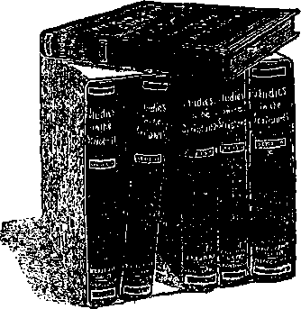
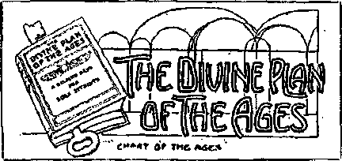
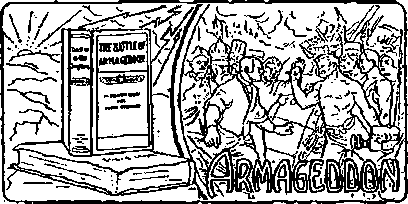
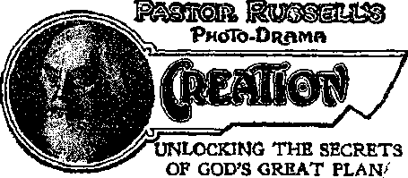
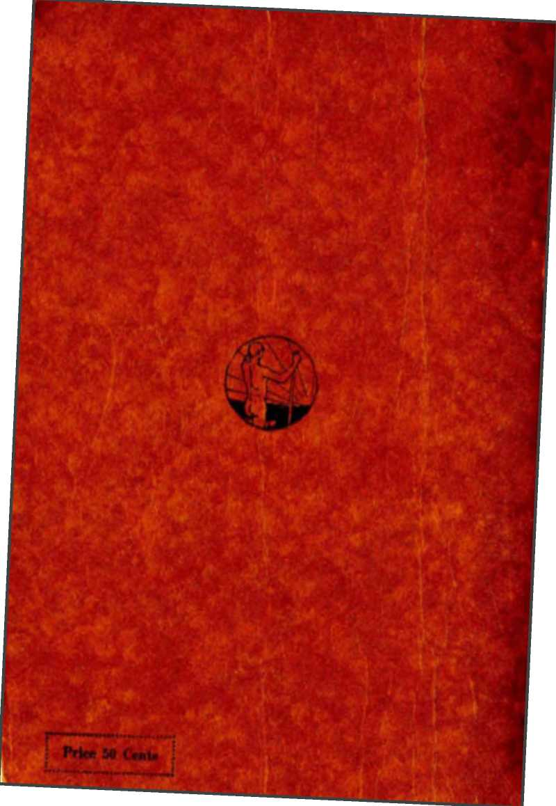

Published by
International Bible Students Association
Brooklyn, New York, Unital States of America
rpHIS little booklet is written and specially **■ dedicated to certain inquiring friends, and to all of mankind who are sincerely interested in their departed loved ones.
J. F. Rutherford
New York, N. Y., U. S. A.
January, 1920
Copyrighted 1920 by International Bible Stiuionl* Association
AMONG the topics of absorbing interest "which are before the public mind today none can be of greater importance to men and women of every nation than “Talking with the Dead” and “'Millions now Living will Never Die”.
The first of these topics is treated in this booklet in such a manner, we trust, as to satisfy the desire of all honest truth-seekers and to free them from the distress of superstition and needless fear.
Manuscript on the second topic, “Millions now Living will Nover Die,” is in the course of preparation and is expected to be published and sent forth as a companion piece to this booklet.
The demand for these treatises has arisen from the fact that lectures on both of these subjects have been and still are being delivered in the great cities of Europe, Great Britain, Canada, and the United States. Judge Rutherford, of New York, probably the world’s best known lawyer-Biblicist, after treating these topics orally has been urgently and repeatedly requested to put his treatises into printed form. This booklet is a response to these nrgings.
INTERNATIONA! BIBLE STUDENTS ASSOCIATION
Brooklyn, N. Y., January 15, 1920
TABLE of CONTENTS
CHAPTER I Ths Colt.oqoy Three Gentlemen discuss the subject of Communication with the Dead—Two Opposing Views presented, for the purpose of convincing the third man—Strong arguments pro and con............7
CHAPTER II
Psychic’s Abcdmknt
Holds Hint such communication is an established fact—Quotes from Professor Hyslop and Sir Arthur Conan Doyle—Demonstrates Hint a willing mind, a desire to penetrate into the unknown, is tlie first essential to conviction—Evidence produced in alleged letters from a dead soldier to Uis mother................11
CHAPTER III
LrGHTTUiAnF.n’s Aucumbht
Presents negative side of the proposition—Declares that the argument stands or falls with the doctrine of the Inherent Immortality of man’s soul—Cites Scriptures to prove his position—What is the soul?—Death the penalty for sin— Satan’s great deception in Eden—Origin of evil spirits or demons—Meaning of Jesus’ death and resurrection—Satan's seed and their work—“The Mystery of Iniquity—Demons in Babylon.................................................. 53
CHAPTER IV
Nbwpai-’s Coxcr-rstox
Holds to the Scriptural evidence—Jian’s hope of future life lies- in the Resurrection.................................................-............................97
CHAPTER V Demos I’hexomexa analyzed Spiritism as reported in the Public Press—Demon methods of manifestation—Evil spirits hate and fear the Bible—Have no real interest in humanity—Encourage loose morals—Incite to murder and other crimes—Have power to inject thoughts into men's minds—Deceive the senses by supposed materializations —Actual materializations have occurcd, but at cost of suffering to the medium—Downward tendency of all spiritist phenomena __Victims frequently driven insane............................................99
CHAPTER VI “Sfimts In Pbison” t'riticnl analysis of a much misunderstood Rible passage—-Demons under condemnation—Where they are imprisoned—How Jesus preached to them......................................................._.................131
CHAPTER VII
Tin: Hope fob Tin: Heap
God's method of dealing with the demons—His plan for the Restoration of fallen Humanity—Satan’s repeated endeavors to confuse mankind and to turn them from God—Our Lord’s Ransom the basis for Reconciliation—Jesus the Savior of men................145
Talking with the Dead
? ? ?
• • •
THE COLLOQUY
M.R. PSYCHIC: Good morning, Mr. Newday. I read in the paper that your son has fallen in the great world war while fighting in France. Permit me to extend my condolence and deep sympathy.
Mb. Newday : Yes, it is true. My beloved son. the idol of my life, is gone and my heart is almost broken.
Psychic : But bo of good courage, Mr. New day; I do not believe he is dead. Can you really think your son is dead?
Newday: Oh yes, there is no doubt about it: the proof has been brought to me by men who saw him drop, pierced with an enemy ball. If only I could have spoken to him once before lie departed.
Psychic: I am sure, Mr. Newday, what I am about to tell you will bring some consolation to your heart; hence I bring this message to you. For some time I have been reading in books, papers and magazines some very remarkable facts, which seem to show that our dead friends are not really dead, but have passed on to another world, and that they are. progressing in happiness; and that we on the earth, under certain conditions, can communicate with them.
Newday : But is not that what is known as spiritism, which has been attended by so much fraud? How do we know that this is not some, fraud practiced upon us ? Does not human experience show that men have been
7
dying for centuries, and why should we now think we are able to talk with the dead; particularly why should this be so since the war?
Psychic : 1 know the majority of people have little or no confidence in the ability of one to communicate with the spirit world—those who have died and gone; that they believe it to be fraudulent. But when so many great men come forward with their testimony, giving their experience—men who have no purpose whatsoever in practicing fraud upon others—the situation seems to be changed. I know there are many who deny that there is even such a thing as a spirit being; but did not Jesus of Nazareth go and preach to the spirits in prison, and does not that prove that men who had previously died were then alive and able to hear his preaching? And if so, is it at all unreasonable to think that they can communicate with us? Let me encourage you to investigate this, Mr. Newday.
Newday: Yes, there seems to be some force in your argument; but it would really seem too good to believe that my son is where I can now talk to him. Ah, but here comes Mr. Lightbearer. I know him to be a man of sterling honesty and a lover of the truth—one who has given much study to the question concerning the dead. Let us ask him what he thinks about it.
Mr. Psychic, please make the acquaintance of Mr. Lightbearer.
Psychic: I am glad to meet you, Mr. Lightbearer. Our mutual friend, Mr, Newday, lost his only son in this great war and I have just been telling him that I am sure his son is not dead and I believe he can talk with him if he desires; and he. proposed that we ask your opinion about this matter. May we be favored with what you think upon this subject?
Mh. Lightbeabeb : I do not believe we can communicate with the dead, for the reason that they are dead. I do not believe that Mr. Newday can communicate with his <lead son. To my mind such a conclusion is wholly illogical, unreasonable, and above all it is un-Seriptural. By this you will understand'that I. believe in the Bible.
Psyckic : Ah, but we all believe in the Bible.
Nfavday : Yes, indeed, I have been a Christian all my life and believe the Bible is God’s word of truth, given to us for our instruction.
Ltghtbearer : Well, gentlemen, it is gratifying to know that all of us believe in the .Bible. We have now some reasonable point from which to view this question : and, according to my way of looking at the matter, the Bible is the only true and reliable source of knowledge concerning it. I consider this a great and vital question to the people today and believe that a wrong conclusion upon it will, have much to do with wrecking society.
Since we all believe in the Bible as God’s inspired word of truth, we will surely all agree that the Bible must he the final arbiter of this great question. Do we all so agree ? Thank you, gentlemen; I am glad that you indicate your assent.
Nevtday: Gentlemen, I am at this time more vitally interested in this question than either of you, seeing I have just lost my beloved son. I believe I am competent to weigh dispassionately the arguments pro and contra, and I know my desire is to have the truth upon the subject. Therefore I. propose that each of you present your respective arguments and let me make up my mind at the conclusion. There can be no harm resulting from hearing both sides of the question, and all of us may be greatly blessed if we are honest in our endeavors to reach a just conclusion. Arc yon willing to do this?
Since you both signify your willingness, we will first hear Mr. Psychic present his side..
PSYCHIC’S ARGUMENT
Psychic: The evidence now available proving that the Jiving can talk with the dead is so cumulative and overwhelming that I attempt to present it to you, Mr. Newday, with confidence that I will convince your reasonable mind of the correctness of the claim; and if I do, then I am certain I have done you a great good and brought much comfort to your heart,
1 am fully aware of the fact that for many years men of strong reasoning faculties have refused to consider any evidence on this subject, looking upon it as partaking of fraud and misrepresentation, or due to some hallucination. For a long while the ultra-ignorant and superstitious have been willing to listen to such testimony, hut. not so with those who desired to have something more substantial or tangible upon which to base a conclusion. In modem times, however, the conditions have been exactly reversed. The world war seems to have awakened many and now the greatest thinkers among worldly men have become devotees of the psychic science and phenomena—men of character, who have no desire o?' purpose to mislead and who would positively refuse to be parties to anything that would have a semblance of fraud or deceit. Among the great men who have testified that the living can communicate with the dead are the late William T. Stead, the greatest of modem journalists ; Prof. Lombroso, the great scientist; Prof. James H. Hyslop; Crookes, the great chemist; Wallace, Darwin, Flammarion, Sir Oliver Lodge, Sir Arthur Conan Doyle, the Reverend Fielding Ould, the Reverend
" 11
Arthur Chambers, the Reverend Charles Tweedale, the late Archdeacon Wilberforce, and many others.
It will be conceded that man’s greatest desire is to have and enjoy endless life. Nearly every living person has some friend or relative ot loved one who has been taken away from him by death. The living, of course, are deeply interested in their loved ones who have gone. They also desire to have some knowledge themselves of what the future holds for them. This desire to communicate with their departed ones has greatly increased and especially has this been augmented by the conditions resulting from the world war. When we consider the fact that the flower of civilization, the stalwart young men of the world by the millions have fallen in the last few years, we are not surprised that scientific minds have moved with greater energy and a keener desire to know what there is beyond the grave. Probably this is the reason we have such a great abundance of testimony today that the dead are not dead, but are more alive than before they died; and that they can communicate with those on the earth who have a desire to communicate with them and who are willing to meet the necessary requirements to do so.
All the evidence shows, as you will observe, that the first thing essential is a zvillingness to be convinced of the truth of psychic claims—a consent of the mil and the mind to hear, to understand and to believe that our dead friends are really alive and that we can commun i-cate with them; and with such an open mind we arc in a proper attitude to receive the proof, and without it we cannot.
I first desire to call attention to the Various tested methods by which the living can communicate with the dead. I make the following quotation from the book* ’"Contact With the Other World”, Chapter X. by James H. Hyslop, Ph. D., LL.D., formerly Professor of Logic and Ethics in Columbia University:
“The popular terms for the method of communicating with the dead are automatic writing, raps, table-tipping, planchette writing, spelling by the ouija board, impresstons, and the more technical terms of clairvoyance and cl airaudience. All but the last two take their names from the physical instruments or the physical means employed in the work. The last two are names for peculiar phenomena in vision and hearing, which will be more fully described a little later.
“Automatic writing is distinguished from ordinary writing only in being unconscious or involuntary. Only certain tests, such ns trance or anaesthesia, or the testimony of a trustworthy subject, will decide whether a person is writing automatically. . . .
“The methods of table-tipping, the planchette and the ouija board are only modifications of automatic writing. Many people suppose that there is some mystery or virtue about the ouija, which enables it to spell out messages from other minds. They do not reflect that the same process is involved-in all the methods named. The muscular system of the operators is in action in each of them in the same way, The instrument, or means of expression has nothing to do with the result, when the human organism must, intervene in the phenomena. There is no mysterious power in the ouija, the planchette, or the table, any more than there is in the pencil. They are all agents or media, as they are in normal action of the same kind. The actual evidence for the supernormal lies, not in the action of automatic writing, of the ouija or planchette. or of the table, but in the contents of (he message. If the content represents normally acquired information, we explain the message by subconscious action of the writer’s mind. If the content is unmistakably foreign to normal experience, we seek for the external stimulus or mind that may account for it. The method of delivery is of secondary importance.
“Another method of communication is by raps. They arc not always connected with the motor action of the psychic. No doubt some raps are simply ordinary automatisms like automatic writing and other unconscious actions. -But they are often independent of any intervention by the human or--janism as revealed to sense-perception. They are used as signals of answers to questions: and, being foreign to either conscious or unconscious action of the organism, another explanation must be sought for theta than for automatic writing. The latter assumes at. least the intervention of the physical organism with its powers and habits. But raps may involve no such intermediary and in this case they must be regarded as independent physical phenomena. They can be used only for answers to questions or for spelling out words in various ways. Their method of communication is crude, in the sense that it takes time and trouble to get intelligible messages; but they signify the possibility of communication with an outside world without the mediation of the subconscious or normal machinery of the human organism.
“Clairvoyance and ciairaudience are very different processes. Clairaudience is the hearing of apparently foreign messages, by means of voices, usually ‘internal voices’. Possibly they are sometimes apparently external, but since those who experience the facts are not always adept in analyzing and describing the experiences, we are not sure that the experiences are other than subjective or hallucinatory, though the stimulus may be foreign. Both clairaudience and clairvoyance are sensory phenomena,unconnected with motor action, whereas automatic writing and other forms of communication, except independent raps, are connected with the motor functions.
“Clairvoyance, however, is a term that does duty for three distinct, types of phenomena. (1) It denotes generally the power of mediumship in so far as the messages are obtained by impressions or visual pictures. It is oven very often used to denote any type of communication with the dead, and so is made synonymous with mediumship, excluding purely physical phenomena. (2) It is more technically used to denote the acquisition of foreign information through visual phantasms, as clairaudience is used to denote auditory hnllucinations of the veridical type. (3) Lastly, still more technically, it donates the perception of concealed physical objects whose whereabouts are not known by any living being. It represents the visual perception, transcendental in nature, of facts or tilings that cannot be known through telepathy. It presupposes supernormal perception at a (list-nice, and excludes all mind-reading. This is the more tech-nlcal conception of the process. Telsethesia is probably a better term for this conception of clairvoyance.”
It will be observed that in order to communicate with those in the spirit world it is necessary for a living person on the earth to be willing to be used and to be used for that purpose. In other words, there must be a medium. The word medium denotes a middle, or intermediary, between two things—a. means of communication. Further quoting Dr. Hyslop:
“It was adopted to denote the agency which intervenes between the physical and the transcendental world. Tin* only means of communicating with the dead has been found to be a living organism capable of connecting the two worlds.”
You will observe that all the evidence tending to prove that the living can talk with the dead is founded upon the great teaching that the soul of man is immortal. Is it not time that the Catholic and Protestant churches, almost without a single exception, for many centuries have taught that the soul is immortal, that it cannot die; hence when one dies it is merely the body that is dead, but the soul lives on? Have not these great religious teachers founded their teachings upon the Bible? Would any of us dare say that they do not believe in the Bible? I am free to admit that, aside from the doctrine of inherent immortality of the soul, it would be impossible for us to believe that the dead are able to communicate-with those who are on the earth.
But is it not also true that the best evidence that the soul is immortal is the fact that the dead do actually talk or communicate with the living ? I first offer the evidence by Sir Arthur Conan Doyle, the noted author, who has recently published a book entitled, “The New Bevelation”. I quote here liberally from Sir Arthur:
“Apart frpm personal experiences, this movement must gain additional solidity from the -wonderful literature which has sprung up around it during the last few years. . . .
“Before going into this question of a new religious revelation, how it is reached, and what it consists of, I would say a word upon one other subject. There have always been two lines of attack by our opponents, The one is that our facts are not true. The other is that we are upon forbidden ground and should come off it and leave it alone.
"... When the war came it brought earnestness into all our souls and made us look more closely at our own beliefs and reassess their values. In the presence of an agonized world, hearing every day of the deaths of the flower of our race in the first promise of their unfulfilled youth, seeing around one the wives and mothers who hud no clear conception whither their loved ones had gone, I seemed suddenly to see that this subject, with which I had so long dallied was not merely a study' of a force outside the rules of science, but that it was really something tremendous, a breaking down of the wails between two worlds, a direct undeniable message from beyond, a call of hope and guidance to the human race at the time of its deepest affliction. The objective side of it ceased to interest; for, having made up one’s mind that it was true there was an end of the matter. The religious side of it was clearly of infinitely greater importance.”
The evidence seems to show with clearness that, those beings who are communicating with the living are not so far away, but arc in fact right near the earth. On this point Sir Conan Doyle says:
“On my asking that lady to raise her hands and give a succession of names, that table tilted at the correct name of the head mistress of the school. This seemed in the nature of a test. She went on to say that the sphere she inhabited was all round the earth; that she knew about (he planets.”
Continuing, in Chapter II of “The New Revelation”, Sir Arthur says:
“I can now turn with some relief to a more impersonal view of this great subject. Allusion has been made to a body of fresh doctrine. Whence does this come? It comes in the main through automatic writing where the hand of the human medium is controlled, either by an alleged cleat] human being, as in. the case of Miss Julia Ames, or by an alleged higher teacher, as in that of Mr. Stainton Moses. These written communications are supplemented by a vast number of trance utterances, and by the verbal messages of spirits, given through the lips of mediums. Sometimes It has even come by direct voices, as in the numerous cases detailed by Admiral Usborne Moore in his book The Voices. Occasionally it has come through the family circle and tabletilting. . . .
“It has been asserted by men for whose opinion I have a deep regard—notably by Sir William Barratt—that psychical research is quite distinct from religion. Certainly it is so, in the sense that a man might lie a very good psychical researcher but a very bad man. But the results of psychical research, the deductions which we may draw, and the lessons we may learn, teach us of the continued life of the soul, of the nature of that life, and of how it is influenced by our conduct here. If this is distinct from religion, I must confess that I do not understand the distinction. To me it is religion—the very essence of it.
“But that does not mean that it will necessarily crystallize into a new religion. Personally I trust that it will not do so. Surely we are disunited enough already? Bather would I see it the great unifying force, the one provable thing connected with every religion, Christian or non-Christfnn, forming the common solid basis upon which each raises, if it must needs raise, that separate system which appeals to the varied types of mind. The Southern races will always demand what is less austere than the North, the West will always be more critical than the East. One cannot shape all to a level conformity. But if the broad premises which are guaranteed by this teaching from beyond are accepted, then the human race has made a great stride towards religious peace and unity. Tire question which faces us, then, is how will this influence bear upon the older organized religions and philosophies which have influenced the actions of men?
“The answer is, that to only one of these religions or philosophies is this new revelation absolutely fatal. That is to Materialism. I do not say this in any spirit of hostility to Materialists, who, so far ns they are an organized body, are, I think, as earnest and moral as any other class. But the fact is manifest that if spirit can live without matter, then the foundation of Materialism is gone, and the whole scheme of thought crashes to the ground.
“As to other creeds, it must be admitted that an acceptance of the teaching brought to us from beyond would deeply modify conventional Christianity. But these modifications would be rather in the direction of explanation and development than of contradiction. It would set right, grave misunderstandings whicb have always offended the reason of every thoughtful man, but it would also confirm and make absolutely certain the fact of life after death, the base of all religion. It would confirm the unhappy’ results of sin, though it would show that those results are never absolutely permanent. It would confirm the existence of higher beings, whom we have called angels, and of an ever ascending hierarchy above us, in which the Christ spirit finds its place, culminating in heights of the infinite with which we associate the idea of all-power or of God. It would confirm the idea of heaven and of a temporary penal state which corresponds to purgatory rather than to hell. Thus this new revelation, on some of the most vital points, is not destructive of the beliefs, and it should be hailed by really earnest men of all creeds as a most powerful ally, rather than a dangerous, devil-begotten enemy.
“On the other hand, let us turn to the points in which Christianity must be modified by this new revelation.
"First of all I would say this, which must be obvious to many, however much they deplore it: Christianity must change or must perish. That is the law of life—that things must adapt themselves or perish. Christianity has deferred the change very long, she has deferred it until her churches are half empty, until women are her chief supporters, and until both the learned part of the community on one side, and the poorest class on the other, both in town and country, are largely alienated from her. Let us try to trace the reason for this. It is apparent in all sects, and conies, therefore. from some deep common cause.
“People are alienated because they frankly do not believe the facts as presented to them to he true. Their reason and their sense of justice are equally offended. One can sec m> justice in a vicarious sacrifice, nor in the God who could he placated by such means. Above all, many cannot understand such expressions as the ‘redemption from sin’, ’cleansed by the blood of the Lamb,’ and so forth. So long as there was any question of the fall of man there was at least some sort of explanation of such phrases; hut when it became certain that man had never fallen—when with ever fuller knowledge we could trace our ancestral course clown through the cave-man and the drift-man, back to that shadowy and far-off time when the man-like ape slowly evolved into the apelike man—looking back on all this vast succession of life, we knew that it had always been rising from step to step. Never was there any evidence of a fall. But if there were no fall, then what became of the atonement, of the redemption, of original sin, of a large part of Christian mystical philosophy? Even if it were as reasonable in itself as it is actually unreasonable, it would still be quite divorced from the facts.
“Again, too much seemed to be made of Christ’s death-It is no uncommon thing to die for an idea. Every religion has equally had its martyrs. Men die continually for their convictions. Thousands of our lads are doing it at this Instant in France. Therefore the death of Christ, beautiful as it is in the Gospel narrative, has seemed to assume an undue Importance, as though it were an isolated phenomenon, for a man to die in pursuit of a reform. In my opinion, far too much stress has been laid upon Christ’s death, and far too little upon his life. That was where the true grandeur and the true lesson lay. It was a life which even in those limited records shows ns no trait which is not beautiful—a life full of easy tolerance for others, of kindly charity, of broad-minded moderation, of gentle courage, always progressive and open to new ideas, and yet never bitter to those ideas which he was really supplanting, though he did occasionally lose his temper with their more bigoted and narrow supporters. Especially one loves his readiness to get at the spirit of religion, sweeping aside the texts and the forms. Never had any one such a robust common sense, or such a sympathy for weakness. It was this most wonderful and uncommon life, and not his death, which is the true center of the Christian religion.
“Now, let us look at the light which we get from the spirit guides upon this question of Christianity. Opinion is not absolutely uniform yonder, any more than it is here; but reading a number of messages upon this subject,they amount to this: There are many higher spirits with our departed.
They vary in degree. Call them 'angels’, and you are in touch with old religious thought High above all these is the greatest spirit of whom they have cognizance—not God, since God is so infinite that he is not within their ken—but one •who is nearer God and to that extent represents God. This, is the Christ Spirit His special care is the earth. He came down upon it at a time of great earthly depravity—a time When the world was almost as wicked as it is now, in order to give the people the lesson of an ideal life. Then he re-turned to his own high station, having left an example which is still occasionally followed. That is the story of Christ as spirits have described it. There is nothing here of Atonement or Redemption. But there is a perfectly feasible and reasonable scheme, which I, for one, could readily believe.
“If such a view of Christianity were generally accepted, and if it were enforced by assurance and demonstration from tile New Revelation which is coming to us from the other side, then we should have a creed which might, unite the churches, which might be reconciled to science, which might defy all attacks, and which might carry the Christian Faith on for an indefinite period. Reason and faith would at least be reconciled, a nightmare would be lifted from our minds, and spiritual peace would prevail. . . .
“When I read the New Testament with the knowledge which I have of Spiritualism, I am left with a deep conviction that the teaching of Christ was in many most important respects lost by the early church, and has not come down to us. All these allusions to a conquest over death have, as it seems to me, little meaning in the present Christian philosophy, whereas for those who have seen, however dimly, through the veil, and touched, however slightly, the outstretched hands beyond, death has indeed been conquered. When we read so many references to the phenomena with which we are familiar, the levitations, the tongues of Are, the rushing wind, the spiritual gifts, the working of wonders, we feel that the central fact of all, the continuity of life and the communication with the dead, was most certainly known. Our attention is arrested by such a saying as: ‘Here he worked no wonders because the people were wanting in faith’. Is this not absolutely in accordance with psychic law as we know it? Or when Christ, on being touched by the sick woman, said: ‘Who has touched me? Much virtue has passed out of me,’ could lie say more clearly what a healing med him would say now, save that he would use the word ‘power’ instead of ‘virtue’. Or when we read: ‘Try the spirits whether they be of God,’ is it not the very advice which would now be given to a novice approaching a stance? . . , Two examples have already been given. One which convinced me as a truth was the thesis that the story of the materialization of the two prophets upon, the mountain was extraordinarily accurate when judged by psychic law. There is the fact that Veter, James, and John (who formed the psychic circle when the dead was restored to life, and were presumably the most helpful of the group) were taken. Then there is the choice of the high pure air of the mountain, the drowsiness of the attendant mediums, the transfiguring, the shining robes, the cloud, the words: ‘Let us make three tabernacles', with its alternate reading: ‘Let us make three booths or cabinets’ (the ideal way of condensing power and producing materializations)—all these make a very consistent theory of the nature of the proceedings. For the rest, The list of gifts which St. Paul gives as being necessary for the Christian disciple, is simply the list of gifts of a very powerful medium, including prophecy, healing, causing miracles (or physical phenomena), clairvoyance, and other powers. (1 Corinthians 12:8,11) The early Christian church was saturated with spiritualism, and they seem to have paid no attention to those Old Testament prohibitions which were meant to keep these powers pnly for the use and profit of the priesthood.”
You will see that this witness "bases much of his con-1 elusion upon the Bible. I further quote from him:
“ . . . Communications usually come from those who have not long passed over, and tend to grow fainter, as one would expect. . . . There is, in Mr. Dawson Roger’s life, a very good case of a spirit who called himself Manton, and claimed to have been born at Lawrence Lydiard and buried at Stoke Newington in 1617. It was clearly shown afterwards that there was such a man, and that he was Oliver Cromwell’s chaplain. So far as my own reading goes, this is the oldest spirit who is on record as returning, and generally they are quite recent.
"... It may be remarked in passing that these and other examples show clearly either that the spirits have the use of an excellent reference library or else that they have memories which produce some!lung like omniscience. No hitman memory could possibly carry all the exact quotations which occur in such communications as 'The Ear of Dio-ni/siits.”
The powers of those beyond the grave seem to be limited, as Sir Conan Boyle says: “The spirits seem to know exactly what they impress upon the minds of the living, but they do not know how far they carry their instructions out”. There also seem, to be lying and wicked ones beyond the grave who seek to deceive those on this side, according to Sir Arthur, who says:
“ . . . We have, unhappily, to deal with absolute coldblooded lying on the part: of wicked or mischievous intelligences. Every one who has investigated the matter has, I suppose, met. with examples of willful deception, which occasionally are mixed up with good and true communications.”
“The conclusion, then, of my long search after truth, is that in spite of occasional fraud, which Spiritualists deplore, and in spite of wild imaginings, which they discourage, there remains a great solid core in this movement which is infinitely nearer to positive proof than any other religious development with which I am acquainted. As I have shown, it would appear to be a rediscovery rather than an absolutely new thing, but the result in this material age is the same. The days are surely passing when the mature and considered opinions of such men as Crookes. Wallace. Flam-marion, Chas. Bichet, Lodge, Barratt, Lombroso, Generals Druyson and Turner, Sergeant Ballantyne, IV. T. Stead, Judge Edmunds, Admiral Usborne Moore, the late Archdeacon Wilberforce, and such a cloud of other witnesses, can be dismissed with the empty ‘AU rot’ or ‘Nauseating drivel’ formulae. As Mr. Arthur Hill has well said, we have reached a point where further proof is superfluous, and where the v>eight of disproof lies upon those who deny. . . .
“ . . .The situation may, as it seems to me, be summed up in a simple alternative. The one supposition is that there has been an outbreak of lunacy extending over two generations of mankind, and two great continents—a lunacy which assails men or women who are otherwise eminently sane. The alternative supposition is that in recent years there has come to us from divine sources a new revelation which con-statutes by far the greatest religious event since the death of Christ (for the Reformation was a re-arrangement of the old, not a revelation of the new), a revelation which alters the whole aspect of death and the fate of man. Between these two suppositions there is no solid position. Theories of fraud or of delusion will not meet the evidence. It is absolute lunacy or it is a revolution in religious thought, a revolution which gives us as by-products an utter fearlessness of death, and an immense consolation when those who are dear to us pass behind the veil.”
As to who may be able to communicate directly with their dead friends, Sir Conan Doyle says:
“ . . . "We cannot lay clown laws, because the law works from the other side as well as this. Nearly every woman is an undeveloped medium. . . .
“The clear call for our help comes from those who have had a loss and who yearn to re-estnblish connection. This also can be overdone. If your boy were in Australia, you would not expect him to continually stop his work and write long letters at all seasons. Having got in touch, be pjoder-ate in your demands. Do not be satisfied with any evidence short of the best, but having got that, you can, it seems to me, wait for that short period when we shall all be re-united. I am in touch at present with thirteen mothers who are in correspondence with their dead sons. In each case, the husband, where he is alive, is agreed as to the evidence. In only one case so far as I know was the parent acquainted with psychic matters before the war.
“Several of these cases have peculiarities of their own. In two of them the figures of the dead lads have appeared beside the mothers in a photograph. In one case the first message to the mother came through a stranger to whom the correct address of the mother was given. The communication afterwards became direct. In another ease the method of sending messages was to give references to particular pages and lines of books in distant libraries, the whole conveying a message. The procedure was to weed out all fear of telepathy. Verily there is no possible way by which a truth can be proved by which this truth has not been proved.”
Sir Conan Doyle’s testimony also shows that this phc-nomena of communicating with the dead was known centuries ago. Upon this point we quote:
“ . . . Then or afterwards I read a book by Monsieur IncoUiot upon occult phenomena in India, Jacolliot was Chief Judge of the French Colony of Crnndenngur, with a very judicial mind, but rather biased against spiritualism. He conducted a series of experiments with native fakirs, who gave him their confidence because he was a sympathetic man and spoke their language. He describes the pains he took to eliminate fraud. To cut a long story short he found among them every phenomenon of advanced European mediumship, everything which Home, for example, had ever done. He got levitation of the body, the handling of fire, movement of articles at a distance, rapid growth of plants, raising of tables. Their explanation of these phenomena was that they wore done by the Pitris or spirits, and their only difference in procedure from ours seemed to be that they made more use of direct' evocation. They claimed that those powers were handed down from time immemorial and traced back to the Chaldees.”
I now present sonic testimony which to me is unusual and seems to prove conclusively that the living communicate with the dead. In November, 1019, The Ladies’ Home Journal published a manuscript, concerning which the Editor of that journal says: “The manuscript was received from a known author. Convinced of the sincerity of the author, and realizing that these messages from an American soldier were no ordinary spirit communications, the publishers asked for further information. The author replied: *1 ask you to regard the book as truth, unaccompanied by proofs of any sort, making its own explanation and appeal*?*
Briefly epitomized, this testimony is to the effect that a mother and her only son were much devoted to each other. The son was interested in wireless telegraphy. The war came on and the son received word from Washington to dismantle the wireless apparatus immediately. The son was very much disappointed, saying that ho believed he was just on the verge of hitting a plan to do away with a lot of unnecessary paraphernalia with reference to wireless. The son was sent to France, assigned to an engineers’ corps and became a second lieutenant. In one of the battles in France he was killed. Immediately thereafter the mother received a wireless message in the Morse code as follows:
“Mother, be game. I am alive and loving you. But my body is with thousands of other mothers’ boys near I^ns. Get this fact to others if you can. It’s awful for us when you grieve, and we can’t get in touch with you to tell yon we are all right. This is a clumsy way. I’ll figure out something easier. I’m confused yet. Bob,”
This communication continued between the mother and son by wireless, but soon the wireless was laid aside. To quote her: ‘T have had, up to the time that 1 began to arrange for publishing, almost daily communications from my son. As will be noted by an early letter, the use of the wireless telegraph was soon abandoned for the better-known automatic writing simply as a matter of convenience.”
The letters which follow, and which ! herewith submit from the manuscript sis. published, seem to me to be subject to explanation by no other means than that they came from the spirit of her dead son. Prefatorily the mother says:
“So the news that my son had been killed came to ma from his own intelligence by the methods we bad used together in our experiments here in this very room. And so I am transcribing it, as he told me to do, for all to see who can be convinced of its sincerity. I have no explanations or proofs other than those that are given here: A man who teas killed in battle and is yet alive, and able to communicate with the one closest to him in sj/mpath?/, must make, Ms own arynmenis. I Juirc no knowledge of established psychic, lams or N»n Hations. But I know ichaf J know.”
The science of communicating with the. dead seems to have advanced with this witness. The use of cabinets and like paraphernalia seems unnecessary. The manuscript reads;
"Bob dwells upon the simplicity of it- He makes it plain —1<> me—that (here is no need of the outside ‘hocus-pocus' of mystery trumpery and cabinets and ignorant go-betweens, trances and crystal gazings, and al) that sort of thing. He dwells <>n the discovery that the mortal really puls on immortality.
“He finds it difficult to describe what the difference is in what we call the spiritual world: the ways of living, eating, drinking and dressing. ‘As far as I can see,’ he says, in one of his very late letters, ‘this is a place where one can carry out his own inclinations; for instance, I am plugging away nt the wireless as I wanted to do before I came, 1 live with si lot of other fellows in camp just now.’ ”
And now, Hr. Newday, I call your attention to a number of letters communicated by that son to his mother direct, and which I believe will be sufficient to convince you that your son is not dead but lives, and that you can communicate with him if you have tho v: Ulina desire so to do. I submit these letters, which speak for themselves;
"Letter Number Two (try wireless).
“Attention : Get this across—there is no horror in death. I was one minute in the thick of things, with my company, and the next minute Lieutenant Wells touched my arm and said: 'Our command has crossed. Let’s go.’ I thought he meant the river, and followed him, under the crossfire barrage the Tommies made, up to a hillside that I had not. noticed before—a clean spot not blackened by the guns. Lots of fellows I knew were there, and strange troops. But they looked queer. I glanced down at myself. I was olive-drab all right. But my uniform was not khaki; it seemed to be a fabric of some more tenuous kind. I had no gun.
"I overtook Wells. ‘What in the deuce is the matter with me, with us all?’ I asked. He said: ‘Boh, we’re dead’. 1 didn’t believe it at first. I felt all right. But the men were, moving, and I fell in line. When we inarched through the German barbed-wire barricades and in front of the howitzers, I realized that the body tbid: could lie hurt had been sited on the red field. Then I thought of you—sent that wireless from an enemy station in the field. The officer in charge couldn’t have seen me. But he heard, I guess, by the way his eyes poppl'd. He sent a few shots in my direction, anyway.
“I am using an abandoned apparatus in a trench today, depending on relays. We are assigned to duty here for the present, according to Wells. I don’t know how he knows. It seems while we have no supernatural power to divert or Stop bullets, we can comfort and reassure those who are about to join us. There has been much talk about the presence of one supposed to be the Savior among the dying. I should not wonder if that were true. The capacity for believing is enlarged by experience. But as yet I have no more real knowledge than any of the other fellows. I will let you know as I gain information. Others, like mo, will pick up and relay’ the messages.
“Letter Number Three (6?/ wireless),
“Attention: As I see this war, a curious understanding of ils purpose and ultimate result is dawning in my mind. The soldiers are the pick of humanity: the young, brave, blameless manhood that has been brought to its majority on the earth so that it may form an ideal democracy in this existence which, I am told, is of permanent character. I am bungling the big idea. But, yon know what I mean, mother. I’ll grow clearer, maybe. Wells is getting to he a whale of an oracle. Some of the fellows are in a funk, and others are sullen and unhappy; homesick, I guess. The young married men mostly. If they could get in touch with their folks it would be all right. That’s why I want to try and simplify some system of communication. You have never failed me; and now if yon can get it firmly fixed in your mind that I am I, not what is vulgarly called a ghost but a being just as much as I ever was, we can start something worth while. It’s got to begin with some one as levelheaded as you are. I’m called away.
“Letter Number Four (by wireless).
“Attention; We hit upon the key word when we agreed to use the word ‘Attention’ in our wireless practice. It is the word that unlocks the inner, or secret, ear to hear otherwise inaudible voices. Do you get me? I mean: when you want to talk with me, concentrate your mind by calling your cr.vn faculties, the unused ones, mostly, to ‘attention’. See if they don’t respond. It may require practice, but I am told there is no reason in the worlds—notice the plural—why we should not talk with the greatest ease and without any mechanics. Come up and try tomorrow. See if I can't project my thouyli'l direct to yours. Bring pencil and tablet if you want to. But a fellow here who knows all about automatic writing says there is no pencil guiding by unseen hands about it. The recipient just takes dictation. Better bring the pencil. You will want to report this just as it is for our purpose. I’ll And out all I can, but just now we are engaged here In relief work. Some of the chaps are very young, and we see them through. I’ll explain about those unused faculties when I learn more definitely about them.
“Ed. note (by the mother): I tried to write automatically that afternoon, but what I got did not satisfy me. I seemed to be ‘faking’ the message. I gave it up and called Bob by wireless- as I used to call him. He did not answer. I tried it again with the pencil and had a few words. But afterward we progressed with increasing ease and freedom by means of that method. The unnumbered messages following were all automatically written.
T* * ♦
Bill it can be
“This is harder—will have to practice, done.
* * *
“Try to realize that thought is the one thing that is absolutely unlimited. You can send your thought to the most remote place as easily as you can direct it to something in your immediate neighborhood. Science has not explained why. Interspace communication is not more mysterious than this. I want to put this over, mother. Not on our account alone. But because the little old world needs comforting. If we can convince folks that this is true, we can go a long way toward wiping out sorrow. I must go.
“Don’t go to mediums. Some are, of course, genuine. But the dollar sign is apt to cover fraud. If you want to get in touch with us—get in touch. That, is, get into a quiet corner and listen with your inner ear, your unused finer perceptions. You will be able really to hear what I am saying, after some practice. I am told this by a man who has come to instruct us. I think, on my own hook, that you will have to rid your mind of worry or prejudice before we can make much headway. Any one who wants [wills] to can put out a mental wire.rt.bat will be picked up. But you must 'beware of strangers I’ Quote that. There are scalawags ready to Jump into all conversations and mix up things if permitted. Keep your wires clear.
“You ask how to keep the scalawags away—-and who and what are they? I d< n’t just know who they are. I‘ll try and find out. But you have to ‘make a law’. That sounds occult and I do not vant anything to be spooky or unnatural in these letters. Jut that is the expression I hear often concerning this particular difficulty. These wire tappers cannot get by, it-seems, unless you permit them to fool you. Yon say: ‘I millnot entertain mischievous spirits’—or something like that, and they heat it. T do not know why that is efficacious. But it is.
* * *
“I have just come in from duty. I mean by coming in that I have come back to what. I may describe as field headquarters. A i I get more accustomed to conditions, I see that there are ii’joiit a thousand men here, some of them boys from my r» gimcnt. Mother, the soul leaves the body as a boy jumps put. of a school door. That is suddenly and with joy. ‘But there is a period of confusion when a fellow needs a friend.’ Quote that. We are the friends. I guess that is the be it explanation I can give. I told you Jack Wells came tbr <>ugh With me. He has gone away now. I atn told we go t<t other departments of usefulness, as others, suited to this field work, tome on. here. I will tell you as much as I ea 1.
“For,’complain that you cannot really get much of an idea of coi .ditions from what I tell you. I want you to be able to tr ite my dictation like a prize winner and, in the meantime. I’ll try and get a line on things here. So far it is not) ing very different from what we knew liefore the change. We go and come and serve. But evidently we are not. seen. We do not seem to need food or sleep. I suppose we absorb moisture. I think our tennons bodies are composed like
page thirty 9 J ? Talking with the dead
clouds. But I do not know. Anyway, your boy’s heart is still in the right place.
“I see your mind like a white screen, and I know I can write on it. Let’s make a regular job of this book. You can edit the copy you get, of course. But don’t put any literary frills in it, will you? When we get into the swing of it tell some of the other motheix But teach them how to establish communication with their boys, themselves.
“I guess you had better wait until you feel me calling you after this. We have important duties that we should not leave. About telling others; that is wLat we are doing this for, isn’t it? A. kind of a ‘comfort ye my people’ idea. But we must be very wise and level-headel. I don’t believe I should try to get messages for others. Ivery man his own medium is the best plan. It would In human nature to doubt the genuineness of Z letter from this side. Faith stops short at this threshold. But show sime friends who need this particular kind of comfort what yon know. Don’t hack out when you are laughed at. It’s all ’n the big business we have taken on.”
And. now, Mr. Newday, I want to impi ass upon you again the great doctrinal teaching we have received in our churches from time immemorial, which, our clergymen have told us time and time again; viz., that the soul is immortal; and this is the very ban's for our communication with the dead. Mark the next message in this manuscript:
"For we must start on the fact that the soul fs immortal. There is no death for the individual. As so many—even material-minded men—realize, the tody is an each’angeable garment and does not count in the history of the ■man. It seems that there have been an interminable number of races and nations lost in obscurity. They have moved on to other worlds, as tins present race must be moved .on. I do not know why civilization is allowed to reach a high mark before it is wiped off the slate. But that has been the rule, and so the Creator must have a purpose.
“I asked one of the teachers, and he said that the e.nrtte is a preparatory planet. The human race is marked foi • an advanced existence and is brought to as high a degree of
perfection as may be necessary to bring up the average. That is, the high degree of Intelligence of the greater number lifts the lesser in the scale. We begin the new existence where we left off in the old. The more we have gained, the greater our advancement among far more favorable conditions. That is not clear. I’ll get a better hold on the idea.
“There are a number of dogs with us. I do not know whether they are astral dogs or not. They look just the same to me, and they go with us and help with our work. The boys who come out are simply delighted to see them.
“Jack Wells is back with us and in immediate command of our company. He has been to see his mother, and he is one happy boy. She is somewhere here. Has been out for n long time. ,*ut one of the messengers found him for her and he got immediate leave to go. That sounded pretty good to ine. He will tell me about things later. We are very busy.
“Don’t try to hold your pencil any differently than you hold it ordinarily, mother dear. I am not guiding your pencil. As I figure it out, I am simply dictating these letters, by some improved form of telepathy, to your mind. You do the writing.' It is wholly simple. I really talk, and yon hear. Please‘■get that to our audience. We al! have perceptions and faculties that are capable of lifting us into supermen. The rub is we do not suspect our own powers. Do not. let yourself be Jed into a maze of reasons why this thing cannot be. What is, is. If a theory of cosmic consciousness accounts for these communications to any one, if he thinks your mind is drawing them from a reservoir which holds dream stuff and the intangible echoes of the thought of all ages, let it go at that. Don’t argue.
“I told you that we are not given any power over bullets. That we can comfort but not save from what you call death. That is not quite the case, I fflid. Jack Wells directed me to stand by a junior lieutenant today and impel him this way or that to avoid danger. In this way I discovered that my perceptions are much more sensitive than they were before I came out. I can estimate the speed and determine the course of shells. I stood by this fellow and nudged him here and there—kept him from being hurt. I asked Wells if that was an answer to prayer. Wells said: ‘No, the young chap is an inventor, and has a job ahead of him that’s of importance to the world’. An older man spoke up and
said: Trayers are answered. Don’t make any mistake about that. But they are not answered according to material ways of looking at things.’ I did not get his explanation well enough to venture to repeat it. I’ll know more, probably, as I go on.
* * *
“Mother dear, you are behaving like a brick. I tell you we are going to get this mortality play across the footlights. And it must be kno-wn as truth. I don’t mean to call it that. But you know what is ’ 'my mind. If you could hear the cries that come to us from mothers and fathers and wives and orphans, you would know* how continuously I plan and mull over this proposition. If you could just make them understand that there is no death. If you could just make them know that they can call their own loved ones to them and hear, at first-hand, that all is well beyond what has truly been called 'the veil’. It is not more than that. It is not as much. A veil is woven fabric more or less resistant. We are separated from our living (I wrote ‘living’; please cross it out, because it would indicate that we are dead, and we are not), our own folks, by nothing but those unused faculties I spoke of on your side. Urge immediate rlerelopment 0/ these lacnlties. Teachers will, I am told, soon appear who are capable of waking these sleeping senses. With that accomplishment we shall be face to face.”
The evidence seems to show that those who are beyond cannot against our wills read our thoughts who are on this side, but that they can hear our words. This would seem, to indicate that we can keep our secrets only by not tolling them out to any one. The next communication reads:
“I can’t read your mind yet. Speak to me as you would if you could see my face. Fancy that we are sitting in the dark but fully aware of each other’s presence. If you ever need me especially do not hesitate to call me, or at any other time. If I do not hear you some one will carry the message on until I get it. I have been so engrossed with these strange happenings that I nmy hove seemed cold. But dear, dear mother, I never loved you better than I do now. And I understand nil the subtle wonders of your love for me, as your son, far better than I did before.
« « «
•‘You remember that, we fell: rather a shock when that woman you know edited n book of letters from this side in which clothes and victuals and drink were much dwelt upon. I think some one of those mischief makers that I referred to some time ago was fooling her. There are, as I explained, many intelligences here that delight in playing jokes on the credulous when they cnn get on the etheric wave that, is l>eiiig used by communicants. Of course I am not competent to make any positive statement. But I think the conditions here are wholly spiritual. The physical body and its functions have been discharged. Only the emotions of tlie soul remain. I wonder if I can make that more plain.
“I surely want to be a reliable correspondent, and I want to show that while the human machine censes with the body, all the fine raptures that made the happinesses of earth are with the spirit. I, myself, appear just as you hist saw me. But I am doubtless clothed in that same elmullike vapor that composes my body. I am rhe same, yer not. the same, freed from the gross conditions that attend humanity and yet capable of love and the higher expressions of marriage. I shall have opportunities to learn definitely concerning these things and I will tell you—as frankly as I have always told you—things that boys generally keep from their mothers.
“I have not seen any one with wings. We cover any number of miles without fatigue. That is a good thing, for I have not heard of any rest, from labor heing advocated. We do, however, rest others. We ease the boys in the trenches—they wonder how they can sleep so comfortably on the hard, wet ground—and for several nights, now, I have been holding a sick boy in my arms. These duties keep us occupied almost all the time, but we have undimitiished force and are never weary. I hear continually of the presence of the Savior on the battlefields. I think this must be true. Anyway, the dying are certain that he has been with them, and they ar.e happy. They speak of his love.
“Tell thip to mothers. Jack Wells talked with me last night, and he gave me a great description of what he saw when he went away for his visit. His mother heard that
he hail come west, and she sent a messenger for him. It seems the messengers are somewhat different from the rest of us. I will speak of that later. Jack accompanied this messenger. They pierced the envelope of the earth, or at least found some exit. From what Jack gleaned, he thought the world we have believed to be so tremendously powerful is really much like the smallest ball in the nest of balls that are carved out of ivory by Orientals. One within the other, you know’. You have to penetrate one to gain access to another of larger size. So, as I understand it, the spiritual worlds of our solar system are swung into space, not separately, but together, each on its own axis but all moving in harmony as one. .
“The progress of the soul is through these spheres up to the highest development. The earth is the material or lowest form. We have often wondered why Christ came to save one little planet when he seemed to belong equally to the whole universe. But it seems that this is the cradle of humanity. That herein was established the race of men, an independent order of creation that was to acquire through knowledge of sin and pain and sacrifice, n strength that should fit men for leadership among supermen. Jack’s mother is in the next world, and front what he says I was not right about the manner of living.
“His mother received him in a home where other members of the family were waiting for him, and It was just a happy reunion. While he was conscious that they had till passed through the experience of death, he could not really ?:ee any change in their appearance. They were dressed in what appeared to be fabrics but were probably vapor stuff, and they seemed to eat and drink and live much as they lived on earth. It is said that business is conducted along ideal lines, and agriculture is brought to perfection. There are many chemists and inventors at work to develop resources, and as the different globes are intercommunicable, the earth gets the benefit of the discoveries.
♦ it
“Jack’s mother and sister are teachers. It is the business of those who are familiar with the law of the place to instruct others. Ruth Wells was killed in an automobile accident a day or so before she was to have been married. Her lover went out with the Canadians and has been doing great work in the air. He came out (died) while Jack was there, and he came straight to Ruth with a messenger she had sent to watch for his arrival.”
It seems that those who have died since this great world war are anxious to start a propaganda for the education of the people; hence I feel justified in coming to see you, Mr. Newdny. Note what this soldier boy says to his mother:
“You ask where I am? I am right now In and about Verdun, and I have not often been away from my division. As I told you, some of us are assigned to escort duty. ‘When the boys come west’—quote that—we meet and guide them across the Invisible Line. Most of them feel perfectly At when they come. But some few are confused or frightened, particularly about the sorrow of those they leave behind. Try and make this point plain to the families. The boys are all right. Do not mourn for them. Every tear tortures the dead.
‘T only want to start this whole propaganda of comfort on the one sure thing: There is no death.
* * *
“Mother, I have found out another thing from this point of view. There is little or no fear of death among men who go into battle. The sonl seems to remember, suddenly, that it may be about to repeat an interesting experience.
“The physical side of the soldier is dominated by the spiritual and (tarried on with a kind of thrilling joy. The meanest man sometimes surprises his comrades by exhibitions of conrage. This is the reason.
“In this connection I must mention Cooper. You will remember that I wrote you about him when I enlisted: He seemed to be the one blot on our regimental ’scutcheon. A sniveling ‘willy boy’ who was afraid to go home in the dark. We all wondered how he stood the examiner’s gaff and was accepted. He had prayed, very likely, that he would be turned down.
"Well, he came west since I last wrote you. I happened to be near when the grenade fell in the trench and saw him grab it in his arms and scramble out with it before it exploded. Me saved a whole company: among them many wounded. I went with him over the top and yelled; ‘Bully for yon, Coop, old in an !’
“Then the bomb ble.w away his mortality, and he saw me. We left the field together, and I took him hack among the hills where the particular group of helpers headed by Jack Wells gave him the glad hand. He’s all right and a trump among us. Get. word to his mother,
“I got your word about the difficulties yon are meeting in conveying the information. Isn’t it curious that the hummi mind instinctively rejects the easiest answer to a problem?
“Woll, get such comfort across as yon can, but do not try to convince any that you communicate with me, 'You would probably be carted off to a padded cell if you should tell all we shall talk about. For I feel that we shall got on farther soon. Wells says a new company is to relieve us, and we will ‘proceed to our destination’.
5«t *
“Cooper is in a blue funk about his mother. She is frantic with grief, and he cannot communicate with her. She is like many Christians. She subscribes to a creed—but she doesn’t believe it. If she would just take her pencil in her hand, and let Coop do the rest! Then she would come to know that her son and al) the other sons are living and only kept from being happy and full of new and splendid ambitions by the tears of those they love on earth. To mourn is natural: but it really isn’t natural to be hopeless.”
You will see, Mr. Kewday, those dead soldier boys are anxious to spread this news of their ability to communicate with their mothers and that is evidently the reason you see so much in the magazines and public press today about communication with the dead, I quote the next letter to his mother:
“If you could see the way the fellows here feel you would know why I harp on publicity for this scheme of communication. There may be a better one. But I don’t know about it yet. Get two or three of the sanest women you know who have lost dear ones—and almost every one has or will— and persuade them to try. Show them how yon do. Tell them there is no mystery or flub-dub.
“Tackle Mrs. K------: she is level-headed. Take her fully
into your confidence—show her these letters if you want to. Tell her to spread the troth. You know how yon feel when yon have been cross or unjust, or something like that, to some one you really care for. You can hardly wait to make up. That’s the trouble on both sides with those who cross the line and those left there. Grief is mostly remorse for things done or left undone, and there is no chance to make up. Coop says he was a rotter to his mother, and he has lately heard her crying that, she had lieen harsh with him when he was a little boy.
“How quickly they could square things if she only knew that he was closer to her in actual presence and in sympathy than he had ever been before.
* * ♦
“As far as I can make out, we are going to n very real world; a globe divided into parts of land and water; one of the near stars, maybe. I’ll find out about that. We are, I am informed, much the same as we were before we crime; except that we are no longer limited or hampered by the flcsh-nnd-hone body we formerly occupied. We have been ‘raised spiritual bodies’ just like the old Book says. But it is the spirit that quickeneth, isn’t it? So there you are. We tire still folks—and not still folks either—nobody dumb here, sis far as I can learn.
“To return to the worlds. I bear that we are to swing along in the old reliable solar system with the rest of you. It seems Mother Earth has all the time been wearing her right: title. I have heard that the earth is the cradle, or the incubator, of the human race, and that the other planets, nil intercommunicable, are inhabited by those who have passed through the earth experience. There may be other Mother planets. I don’t know. But ‘his kingdom ruleth over all’.
“I have not tried to write you lately because I have been on the job night and day. The world we are to go to will be the Country of the Young in fact. So many boys arc coming out And they are all right Do get that word •across. Do make it your business to get that across.
“The one thing that troilites the men who come here is the fact that the ones that Urre them are in a.gony.
“Get around on that side of the question with your old pluck and tell the mothers and fathers and sisters and wives to stop crying. No man can stand the sight of tears, the sound of sobs. They feel it much worse here,, because they can't get in touch to comfort. It's awful. It will seem queer when I say that we don’t bother much about any physical pain our folks suffer. That is a transitory thing. We know it for what it is. But we are still capable of mental anguish. That is the hell material. And every tear shed on earth falls on a heart here, A wail is continually coming to us from every side. Have them stop it.
* * *
“The limitations of the human vision and the circumscribed range of the human perception of sound are what separate us. Not that we are forever, even in thought, hovering around our folks on earth. That would be rather horrid, wouldn’t it? We observe proprieties and wait for invitations. Just while we are trying to establish communications, we are making frequent calls. After that we go about our business and send our messages by operators from wherever we may be—and we’ll make visits as boys go home at Christmas or birthdays. If you send very urgent calls we must answer.
“Mother dear, when you are writing for me be rather careful not to interpolate. You do not, much. But we want this to be pretty direct, don’t we? Our only object now is to get this comfort—this possibility of communication between the seen and unseen living—to those that mourn. You do not feel any fatigue or strain, do you? Your arm does not. get numb? Why should there be any effect of that sort? This is simply thought transference, dictation—a perfectly natural thing. Induce others to get into communication with these boys who want to butt in while I talk to you. I am besieged to give you addresses. But if you can get any publisher to take these notes, I guess that will be the best waj to get an audience. Try------or------. They are
both good firms and liberal thinkers.
# * »
“We are immediately going to start for the Outside. Other companies have come to take our places on the field. I am distinctly agitated. Do not know whether I Shall be able io get in touch with you or not. Shall certainly try. Anyway, you. will know that I am all right, and that some day we are going to lie together again. Be a game little sport, and don’t cry. I'll feel your tears if you do. And they will make me wretched. Everything is all right. No doubt, whatever. I hope that I shall be able to visit you. Anyway, we arc mother and son and—pals, always.”
The evidence seems to warrant the conclusion, Ur. Newday, that your son now may be right by your side, or very near you at least. The soldier boy writing to his mother testifies that he is not in some far-away planet, but says:
“T am still in the atmosphere. We had prepared to leave for a destination unnamed: for others arrived to take our places as helpers on the battlefield. Sonic men, or I suppose they are angels, came to act as our escort. Jack Wells got our particular bunch—about, forty—into shape, and we stood in marching formation on a little hill until the word was given to start. We did not fly or float or anything like that. We just marched at a good rattling pace. The only thing strange about, it was that we did not mind such natural obstacles as forests or rivers, but went right along through or over them. This was the case outdoors. But we did not pass through closed buildings or walls. At all times we looked for the openings or gates. I asked the man (angel) about whether we had really bulk or weight. He answered me. But I didn’t understand well enough to make it clear, I am afraid. I think he meant that onr bodies are heavier, or denser, than air. As these facts are made known to me, I will tell you.
“We passed through several villages, one of which I had seen on the wny to the line. It had been shelled and destroyed. There were human bodies everywhere. They looked like, and were, no more than so many abandoned shells or coverings. From this point of view there is no more in death than removal from one house to another. In most eases the separation of the soul and body was complete. Where there was still some clinging to the body on the part of the soul, some of us waited to comfort and cheer. Now and then we came across a frightened or dazed spirit; and we helped there.
“Bat there were many men and women from this side present among the ruins, and their special care seemed to be the children. Some beings (angels) literally carry the little ones on their bosoms. I had supposed that we would leave the atmosphere of the earth by ascending into higher regions. We are all more or less influenced by Raphael’s ’Ascension’, I suppose. But it seems that there are points of egress reached by defined channels, ports of departure. At present I cannot tell you where the one we were assigned to is located, because we were recalled.
“And the manner of the recalling will interest you. The inarch was well under way when there was an order to ‘right about face’ and we started buck. Jack Wells was inarching with the Man in command—I have not yet learned his name or what to call him—when he turned around and said be had orders to return.
“How he got the orders puzzled me. There were no messengers or mechanical means like telephones or wireless. But it seems we acquire the ability to hear anything addressed to us, personally, through any amount of space. That is how you reach us. And what we are trying to do now is to have you hear ns as well as we hear you. Please italicize this when you print what I say.
* * #
"I wish you would read Swedenborg again, and compare what he says with what I may be able to tell you. You remember we read a book of his together that winter I had to stay indoors. I hope to see some of our great forces over on this side, or beyond this particular side, as I progress Just when that will be I cannot guess. It seems we are still on the battlefields, where our work is to ease the wounded. This wo are able to do. Emphasize this, mother. Koi' every boy that is hurt or terrified, there is a comforter. I wrote you that we hear, continually, that the Savior is often seen on the fields. I have not dared to look, sometimes, when I have felt, rather than seen, a strange soft light, I am not ready to look just now. But there is no doubt that he moves among the soldiers. I am called away.
“I get all your messages, mother. I can only answer a. few questions, partly because I am not yet sure of many things here and partly because there seems to be no means of communication concerning certain conditions. That is, when we get beyond the usual we are beyond the common medium of language. The words we know are inadequate to express our revelations. Of course, until we move on into the Big Places, we are really on almost the same footing as though I, too, were in the flesh. But when the Big Places are reached, I shall have more difficulty in conveying my information. At least, so I suppose.
"Now I am to continue in the ether for a time, anyway. Ought to pick up considerable news for you. If I dwell on things that seem the least important, perhaps it is because of this angle of vision. Now the all-important matter to the boys here is to have their folks know that they arc alive and well and filled with intense enthusiasm and ambition.
“Take up the Bible and read it with this that I am idling you in mind. I expect, as time goes on, T shall be able to describe scenes and customs to you—after the manner of the observant traveler but now whnt you must learn is this: in this intermediate place, which is neither wholly material nor wholly spiritual, we are busy and so happy, or would he if it were not for the sobs and tears of our folks. Please do not. give way to sadness, mother. And for heaven's sake (this is literally for heaven’s sake) beg the mourners to stop crying and to cease wearing black clothes.
“As far as modes of living, habits of angels, philosophies and opinions, my reports are likely to be us accurate as the average traveler’s in an unfamiliar country. But I’ll correct any misstatement as I go on and learn more. Our main business, now, is to establish definite lines of communication.
“The fighting has swung back to about the place where I fell. Think of me as doing a man’s part still, right in the battle. Wo do not fight. We form the relief division and bring comfort and aid to the wounded. Many of the soldiers see us; that does not mean, always, that they are dying men. They seem to have supernormal vision. I do not like that word. But let it go.
"I was easing a boy in my arms; but he was very young, and he wanted his mother. I could not comfort him. Some One beside me said: T will take him’. I could not look up. But I knew who it was. Let mothers hear of this.
"Please do not elaborate anything I tell you, dear. I must go. A whole battalion is coming out
* $ £
"I have not met any relatives. You know we are still on earth. Some of the boys who have folks in far places get-leave to go and see them. But I feel that my job is light here. A while ago I lifted up a wounded color bearer, and together we kept the flag from touching the ground. That seemed to be his main idea. I held him until relief came and promised to wait in case he should eome west. But he is to recover. A girl from the Bed Cross hospital was working alone, plucky as any one, regardless of the fact that a countercharge of glorious furies in horizon blue had cut her off from her friends. A shell struck her; and later she let me guide her into the Quiet. She looks like one of the McL----girls. But she is dazed and can’t tell her name.
She’ll be all right soon. -
# «s *
“The Red Cross girl I brought across the line in not one of the McL----s. But she is pretty and jolly and a bear
for work. She is constantly with us on the field. Her folks live in Wisconsin, but she snys they will have to wait until they come here before they learn that it is well with her. They believe in the immortality of the soul. But proof of their belief scares them. Her name is Ann. Sometimes sho hears her mother cry. Then it is hard for her.
“Women and men work together in natural hnrmony. There are preferences and avoidances-and some sweethearting. But for the most part the business in hand occupies all of us. I do not know how it will be as we go on farther. This is a great receiving camp. It looks as though it had been chosen by engineers and established as a model cantonment. I am impressed with the system that does not intrude itself as system. Yes. We dress and undress. There is a general commissary who issues our clothes in military fashion. I do not know how they are originally obtained. At first the stuff felt differently from the material of the uniform T shed in Flanders. But now I do not notice anything peculiar about it. Maybe I am used to it, and have forgotten the old.
“There is no curse attached to anything, as far as I can find out. Laws are finely adjusted, and their principles are immutable, in the main, But God can change laws, even his own. There is nothing in all the worlds to handicap the big race the soul makes for perfection. We, here, are in the very beginning of it”
You will note the repeated reference of these communications from the son to his mother to the fact that he is really alive and not dead. Are we not pleased, then, to see that the teaching of our good clergymen is so strongly corroborated by direct witnesses? Note what the son here says to his mother:
“None of my statements about less important matters are to be taken as certainties unless I quote our instructors. They may not be infallible, but T presume they are. But this is our big fact: I am really, vitally alive. All others who have passed the change called death are alive and progressing toward fuller life. Harp on that string. Keep at it. Do not let your mind become discouraged or confused. Nothing that I can write you is of any importance compared to this. I am called away.
♦ * *
“I know what you are up against. Yon are in for ridicule and the sort of publicity tliat is hardest to bear. But have [get] at it. Get the word across. Don’t fix up my notes much. Let them smash away ns they come right off the bat. They are not only to comfort the people there, but to relieve the boys here. They worry like the deuce over their folks. Some few who know what we are doing are after me all the lime to help them get in touch with their own. They make constant efforts to communicate.”
Again, Mr. Newday, I wish, to emphasis the fact that my efforts to convince you that your son is alive will avail nothing if you set your will against them. Neither could you have a communication from, your son unless yon are willing to receive it. Note what this young soldier boy says to his mother:
“Don’t argue. We cannot convince any one ayainst hie Kill. Let him believe or deny. You are only a messenger. One accepts the heartease you offer, or he does not. Perhaps by the time this page is printed, the Ught-which-is-to-be will be shining on the earth. Undoubtedly the mystery that befogs us is likely to be soon lifted.
$ * sjt
“Too bad that yon are not able to convince Cooper’s mother that lie is all right. He is more than all right. And lie may serve to illustrate a point I indicated recently. You know how weak he used to be, and dissipated? Rather worthless and all that? Well, he is one of the most esteemed men here. Of course, he proved that he had courage when be hopped out of the trench with that grenade and saved his company. I told you about it. But he has a quality, a kind of compassion for all men, that makes him tower above the rest of us. It is hnrd to take the measure of a man. There are so many bewildering standards. It's easier here.
"Our use of the terms ‘here’ and ‘there’ is likely misleading. At this stage, as I have explained, we are not separated from you; I mean that we are not removed from the influences and conditions of the earth. I do not know how to search for expressions Hint will convey the truth simply to all who may read these letters. If we are going to got to rhe people with this we must take some steps to interest a publisher. How would it do to see------? Better think it
over. I cannot artvise.
* $ *
“We do not know when we are to be sent on to some other field. You remember we were once recalled when we had almost reached an important port of departure from this environment. The subject of these points of egress interests me greatly. It seems that there are certain defined avenues of intercommunication. We. do not fly up and into some other sphere. We travel by established channels, I am very anxious to find out just what this means, and I shall hope to Jet you know.
“Then, too, we may begin to count time by the thousandyear schedule. With the realization that you will soon lie with us, we do not think to send you de?scri ptions of what yon are to see. One thing we must not lose sight of; This is the land of the Hying, and the loved ones are wife.
“Souls nre being fused in these flames and purified. The bravery of men is applauded by the angels, I have seen them rush to welcome some little chap who has given his life to save, others. That is the Christ quality—the highest form of love.
"A lot of fellows hi my tent were talking about the peculiar agony of suspense that mothers have to bear. .Tack Wells spoke of that night in Gethsemane when the disciples slept. But somewhere in that garden was one who did not sleep. Mary watched all the dark night. Mothers are like that now.
* » *
“There is no method about interspace communication. The fuss of preparation is unnecessary and confusing. We do not need the material aids of paper and pencil, ys our minds converse. I recommend the transcriptions because you are reporting these notes for a purpose. We want them :is accurate as possible. Of course I get balled up. But we’ll keep sight of the plan."
That the science of this means of communicating with the dead is progressing and that it has come since the beginning of the world war, evidence is quite clear. This soldier boy in his communication to his mother says:
“As we progress I find we are less inclined to criticize the efforts or condemn the failures of others. Something of truth must be in the minds of even the fakirs who try to materialize spirits and set tables to jumping about a room. Primitive people were taught by means of crude spectacles. But now we have a way more suited to our developing intelligence. .
“Do not let us stop, to go over what I have said and correct Inconsistencies. The way unrolls continually, and I get various angles of vision. I am not seeing much, as yet, that is so very different from the earth as yon know it. I should say that the difference is chiefly in my new keenness of perception.
a * a
“Wells makes occasional journeys to the place where his folks live. I quote him, particularly, because you know him.
When I ask him how it is out yonder, he says for me to wait unci see for myself. This may illustrate the point I have been trying to make. I asked him about the marriage of his older sister and her husband. I heard that the married become incorporated in one body. That is not just as it seemed at first to be. The two who love and marry are one in spirit and act and think as one soul. But they are separable in form and able to pursue their independent ways.
“I have formed a friendship with Ann. She is as playful as a child, and I like her. But we are not mentally companionable. You remember a poem you liked by Miss Colson, about laughter in heaven? Well, there is laughter here all right. I could not repeat a joke or any special thing that might be labeled humorous that is said oi' done. But there is a kind of joyousness that finds expression hi laughter.
“Cooper has gone back to Blighty. I missed him and asked Jack where he had gone. I do not understand yet. Will let you know. Am excited over news. Must go.
* * *
“I have a delicate task here, mother. Cannot speak of it without higher authority. If I receive that, I know I can depend on your judgment and good taste. I have conferred with Wells, who is farther advanced than I am. Wait alone for this.
“Mother, it is not a new thought, but it is true that all forms of life are created dual. We have spoken of the human and spiritual only briefly, because I am crassly ignorant, even yet. But nature is also two-sided: material and ethereal. Everything is duplicated—forest, stream, landscape. Poes that fact not nmke my place of residence more tangible to you? I should have told you sooner if I had heard of it”
In order that you may observe that I am working in harmony with the desire of those dead soldiers who on the other side are trying to comfort those on this side, and that I am taking the right course in coming to you to try to convince you that your son is alive, I invite your attention, Mr. Newday, to these words of this soldier boy to his mother:
“Yes, I know what you are up against trying to get this across. Poor little mother! Her neighbors think she is a nut. But if you can get a few to try to write they will start things. Explain how simple it is. A place, a pencil, a pad of paper and a heart crying the name of a boy, That’S all that is necessary.
"I hare permission to tell you that Cooper has, because of his understanding and compassion, been sent back home as an instructor. His body, sustained by some life principle which f cannot explain, has been all this time in a reconstruction hospital back of the French lines. You may see him with your own eyes. And you will know- that any man who has crossed No Jian’s Land, and returned, has a message to the world from God.
* * «
“Wells is hurrying on with his preparations to go. I do not know whether I am to go with him or not. I rather hope I may. And yet I do not want to cut off our line of communication. I think after I leave this environment I shall have greater difficulty in communicating. As I have said before, I shall, perhaps, enter into less transrftable conditions. The common speech may be inadequate. That, alone, may account for the futile messages transmitted through mediums. Still, the spirit is free to travel, and it is likely I may find a way to continue my letters to you and to give you such information as may be permitted.
"You hope I will not go, dear? Well, I may hang around here indefinitely. Many are coming in, however, and it looks as though we might be transferred. One reason makes me rather keen to go. Jack told me about his younger sister Inst night. She is, it seems, a tremendous favorite with him. I said I wished I could see her. And there site was! A vision, really, in response to my wish. I don’t believe heaven lias a sweeter sight. I saw her plainly: dark-haired, blueeyed, with a face of great brightness and fine color.
“Up to this time that I am relating the circumstances to you it has seemed miraculous, out of the natural order of things, that I could conjure up this girl’s likeness. But I now realize that faculty to be the commonest in the world. You are exercising it, now, as you think of me and of her. Here is a point, mother. Maybe yon can elaborate it. You project your thought to any scene or you draw toward you whatever vision you will.
“It may be that the peculiar conditions of our work here make my judgments rather one-sided. I fancy in other locations, America, for instance, the people who have come out must see many things in altogether different lights. They are dying around you every day. It should be perfectly simple to communicate with them. We are dwelling on the military exodus for the reasons we have outlined.
“Mother, I often think of the days when I was a little boy. How good and patient you have always been to me. Don’t forget in all this striving to let other hearts have comfort that the same old love is In your boy’s heart for you.
# $ £
“I got your wire calling my attention to the Scriptural statement that in heaven there is neither marriage nor giving in marriage, and I do not know what to say. It seemed (until you gave me this jolt) that, the Bible bears out everything that I have been able to tell you. Perhaps the chronicler got balled up in this particular quotation. For love and marriage are certainly in bud and flower there. I can see this fact with my own eyes.
“Many things that I write you I gather from others, relying on you to weed out that which does not contribute to the big plan, or any flagrant inconsistency that may rob some soul of a crumb of comfort. Don’t bother about much else. This is a message, and it requires haste.
* * *
“Of course, there are false reports and reporters here. Not makers of lies, so much, as natural dramatists who see all things in an exaggerated and spectacular form. Then, there are the symbolists who write the revelations.
“Any critic would have me on the hip, and they will all be after you, if you can scare up a publisher to take this. And yet you will likely find a world more ready to listen, openly, to such a message than it has ever been before. Back in the human consciousness has always been a belief in spiritual things. The belief has been mixed with the terror of the unknown and denied because of that fear. Now the hand of God draws his worlds so near that they can whisper to each other.
“Cooper will take up his old life on earth, and his mother will have her son. But he will not be the same. None of those who go back will bo the same. Angels, dressed in stained ami faded khaki, will walk the familiar streets-Listen to them.
“Dogs eotne anil go freely, back and forth across the invisible line. I am told this as a fact. They do not need to leave their natural bodies to associate with those who have died. They often follow their masters. Other animals have not quite these privileges, but. after dissolution they appear here. I may not l>e clear. I often find a certain <?u)l>arnssment in saying what I. myself, would once have called brink. But I guess they are true, all rigiit."
it tjf $
You will see,, Mr. Ncwday, how anxious these soldier boys—yours among them no doubt—are, and how desirous of comforting the living who mourn and who are anxious to impress upon your mind that there is no death. To his mother this soldier boy soys:
“I want to suggest to you to keep,.these notes entirely apart from anything else I write you. .Do not make a big book. Let it be only a few pages to hide in a mourner's sleeve. Call it a sleeve hook, if you want to. I think that might convey an idea. But in any case, keep it free from subjects or speculations outside the main plan, which is: comfort for war-robbed humanity. Keep after that! There is no death! And don’t let any attractive theory sidetrack you. The firing is contimuil and terrific. I must get oa the job of guiding the boys through. They will come without fear.
« * *
“Jack Wells and I are very close friends. His sister’s name is Allee, and she has grown up in the country beyond, where his folks live. It seems all reach or return to maturity. Youth blossoms and dowel's, but does not decay. I can call up her vision at any time. But I want her near.
“(llirist walks among the wounded continually. The dying see him, and the hurt are healed by his hand, many have told me, and several times I have felt him near. Once, for n moment. I saw him, I told you.
“1’reserve an unemotional mind, dear. Sanity and simplicity arc essential to our purpose. Do not go on any tangent of description or undertake analyses. What is here is here. Some people will find what we have hoped to give them. Others must find comfort in different ways.
* * *
“You have understood, haven’t you, that I no longer stop and dictate these things to you? I talk to you as I perform my tasks, or lie nt rest, or march along my ways. It is almost certain that we are to be ordered on within a few hours’ time. Destination unknown.
“But wherever it may be, I shall travel with eager curiosity. I shall surely tel) you all I can. It may be that one returns to this boundary for purposes of communication. That will develop later.
“Take care of your health. You have a task that you mus’ not fail to accomplish. You can bind up some of the most grievous wounds in the world. Keep your strength and go up and down the wailing places on the earth, and say and know: ‘Thy son liveth’. That’s your part.
“We are passing through a land laid waste and yet triumphant. I felt immensely surprised to see in all its beauty one great cathedral that had been destroyed. The angel said, that all such buildings of prayer and song are spiritual and beyond vandal desecration. The bricks will be restored to conform to the Imperishable idea. I do not want to get. metaphysical (in the bewildering way). I just want to say that I am improving in spiritual vision. When we started out before, you remember, I was only able to see the obvious: broken bodies of flesh and of stone. Today I see the immortal structures.”
The New York Warid recently published an interview with Bishop Fallows, of the Reformed Episcopal Church, in which he is quoted as saying:
“Telepathy is an established fact. In recent years great strides have been made in the explanation of psychic phenomena and in the years to come the science of communication with the dead will be made a part of the curriculum of great educational institutions. I have called the new science ‘Immortallsm’ because it depends for its existence upon the immortality of the soul, in which we all believe, and the preservation of identity beyond the grave.”
And now, Mr. New day, I think I have submitted ample evidence to sustain my position. I have here a great abundance of cumulative testimony, experience upon experience, of men in various walks of life, particularly the testimony from some of our leading clergymen. You will see that all these distinguished writers, scientists, savants, theologists, stand by the teaching which we have heard from our youth up, that the soul of man is immortal; and believing this, we must believe that our dead beyond are alive, and it is wholly consistent, then, that they can communicate with the living. If the living cannot communicate with the dead, then our time-honored doctrine of the immortality of the soul must get a terrible shock, if not be completely upset. And you, Mr. Newday, as a consistent member of the church for many years, would not wish to repudiate that doctrine. I submit, then, that from all this evidence we have much reason to rejoice that your son is alive and that you can communicate with him if you will do so.
Mr. Newday : You have made a very strong presentation of your side of the case, Mr. Psychic. I must concede the fact that you offer the testimony and experiences of some of the greatest of modern scientists, savants and clergymen; and this together with the doctrine which all the churches, Catholic and Protestant, have taught and teach, that the soul is immortal and cannot die, makes out a very strong case. I cannot escape that fact. But before I reach a final conclusion, I must hear the argument of our friend, Mr. Lightbearcr.
LIGHTBEARER’S ARGUMENT
The testimony and the argument presented by Mr. Psychic is very subtle and calculated to convince almost every mind except the mind of him who insists on squaring all teachings by the great truths which are definitely and conclusively settled.
In the very outset I perceive that- I am confronted with the public opinion, educated largely against my position. In this connection wc are reminded of the trite but truthful saying of the poet:
“Trnth forever on the scaffold,
Wrong- forever on the throne;
But that: scaffold sways the future
And within the dim unknown
Stands the form of Christ the Savior, Keeping watch around Iris own.”
Truth ultimately must prevail and I am confident that truth in God’s due time will prevail and error will be forever annihilated.
My abiding faith in Christ Jesus and in the Word of God, which is the truth, makes me bold in presenting evidence against the theory of communicating with the dead. I am confident that the proof which I. present will convince every reverent mind believing the Bible to be God’s Word of Truth. Every point that I can conscientiously concede I will and do concede, in order that the issue may be clearly drawn.
In the beginning all of us agreed that the Bible is God’s Word of truth revealed to men for his instruction.
I agree with yon that man’s greatest desire is that he' might have, life everlasting, dwelling continually in a state of happiness. All of us must agree and do agree, I believe, to the truthfulness of the Biblical statement 53 concerning the obtaining of life everlasting through Christ Jesus, that “there is none other name under heaven given among men, whereby we must be saved”. —Acts 4:12,
I will concede that the gentlemen whose testimony has here been presented are honorable men. I do not call in question then' veracity or honesty, nor is it necessary for me so to do. If I cannot explain and account for their testimony in the light of revealed truths as contained in the Word of God, then my argument must fall flat. I invite you, Mr. Newday, and all who hear me, to suspend final judgment upon this question until you have heard me through; and then if you can truthfully say that you believe the teachings of the Word of God, you will have to say it is impossible to communicate with the dead.
I agree that the world war that has caused millions in a short time to go down in death has greatly increased the desire, of the living to know of the state of the dead, and that this situation has been seized upon for the purpose of foisting upon the people the theory that their dead loved ones are alive and that they can communicate with them. If the living can talk with the dead, then all the people should know it, and it should not be necessary to conduct a paid propaganda in order to teach them. On the other hand, if from a fair consideration of all the evidence we should, find that the living cannot talk with the dead, but that the testimony produced in support of the contention is deceptive and misleading and destructive of faith in God’s Word, then the people should be acquainted with these facts and all honest people, without regard io creed or denomination, ought to be willing to herald these facts broadcast among their fellow men.
I most emphatically agree with you, Mr. Psychic, that according to the testimony of all these witnesses the ability of the living to communicate with the dead depends upon the one important question: Is the soul of man immortal ? In other phrase, your argument must stand or fall upon the truthfulness or falsity of the theory of the immortality of the soul. If it. is true that every man has inherent immortality,, then there, is a. basis for tout argument; but if that contention is false, then there is no basis for your argument, and your argument, of course, must. fail. It is of first importance, then, that we determine what the soul is; and determining that, whether it is mortal or immortal. Let the Bible be the final arbiter upon this question.
WHAT IS THE SOUL?
it is true that Catholic and Protestant clergymen f<n* centuries have raught the people that the soul is the divine part of man which cannot die and that therefore, there is no death of the soul. This is not supported, however, by the Scriptures, which read: ‘'‘The Lord God formed man of the dust of the ground, and breathed into his nostrils the breath of lives; and man became a living soul”. (Genesis 2:7) The word soul means moving, breathing, sentient being; i. e., a living creatine that possesses the senses of sight, hearing, touch, taste, smell. It will be conceded that the dnst out of which Jehovah formed the body was not immortal, nor did it have intelligence. It must be further conceded that the breath of lives which God breathed into the nostrils of that body did not constitute the soul; but that the body, perfectly formed, and the breath which Jehovah then placed in its organism together formed a living, moving, sentient being, which we call a soul. Every creature that breathes is a soul. No creature possesses a soul. If the breath is separated from the body, which stops the action of the lungs and the circulation of the blood, death results. Thus did God form the first man, from whom the whole human race sprang, and' we have a clear and positive statement in the Scriptures that the first man is of the earth, earthy, and not divine, not immortal.—1 Corinthians 15:47.
The Word of God speaks of beasts as souls: “Levy a tribute unto the Lord of the men of war which went out to battle: one soul of five hundred, both of the persons, and of the beeves, and of the asses, and of the sheep”.—Kumbers 31:38 j Genesis 1: 20, 30, margin.
Man’s preeminence over the beast is in life, not in death. They both die alike. “Fot that which befalleth the sons of men befalleth beasts; even one thing befalleth them: as the one diefh, so dieth the other; yea, they have all one breath; so that a man hath no preeminence above a beast: for all is vanity. All go unto one place; all are of the dust, and all turn to dust again.”—Ecclesiastes 3:19, 20.
THE GREAT DECEPTION
That we may get the proper setting of this subject and view it from a rational standpoint, we must take a brief glimpse at the. history of the human race. For centuries the whole earth has been a playhouse and all the people players. The great drama opened in Eden, the garden of God—perfect in its appointments—with Adam and Eve, the perfect pair, in possession, with authority to multiply and fill the earth with a happy race of people and establish a kingdom among men. They were perfect human beings, but without experience. Lucifer, an angel of great beauty and wisdom, was placed in Eden as an overseer of this perfect human pair. Observing that Jehovah had granted authority to man to establish a kingdom, Lucifer sought to steal the inheritance of man. God’s prophet describes him in Eden as a wise and beautiful creature, and tells how he .sinned and was degraded and became Satan, thus: “Thou hast been in Eden the garden of God; every precious stone was thy covering, the sardius, topaz, and the diamond, the beryl, the onyx, and the jasper, the sapphire, the emerald, and the carbuncle, and gold: the workmanship of thy tabrots and of thy pipes was prepared in thee in the day that thou wast. created. Thou wast the anointed cherub that eovereth [officially appointed to act as man’s overseer]; and I have set thee so; thou wast upon the holy mountain of God; thou hast walked up and down in the midst of the stones of fire. Thou wast perfect in thy ways from the day that thou wast created, till iniquity was found in thee. By the multitude of thy merchandise they have filled the midst of thee with violence, and thou hast sinned; therefore I will east thee as profane out of the mountain of God ; and 1 will destroy thee, 0 covering cherub, from the midst of the stones of fire.”—Ezekiel 28:13 -19.
Ambitious for a kingdom of his own, Lucifer reasoned thus: I am far greater than man. Why has not God granted me an exclusive dominion? Jealousy was in his heart and he determined to bring man under his control. He meditated a usurpation of God’s authority, thus: “I will ascend into heaven, I will exalt my throne above the stars of God: I will sit also upon the mount of the congregation, in the sides of the north: I will ascend above the heights of the clouds; I will be like the Most High”. (Isaiah 14:13,14) Because of this ambition, Lucifer lost the favor of Jehovah and was thereafter designated as “that old serpent, which is the devil, and Satan” (Revelation 20:2)—the author and instigator of all wickedness that has cursed mankind.
God instructed Adam and Eve that they must not partake of certain fruit in Eden, saying to them, “In the day that thou eatest thereof thou shalt surely die”. (Genesis 2:17) Satan deceived mother Eve by convincing her that God was lying and by this means undertook to deprive her and her husband of their just rights and privileges. To Eve he said: “God doth know that in the day ye eat thereof, then your eyes shall be opened, and ye shall he as gods, knowing good and evil. Ye shall not surely die” (Genesis 3: 4, 5) This was the first lie ever told and from it sprang all other lies. So says Jesus.—See John 8:44.
This disobedience of Eve and of Adam, who joined her in the transgression, brought swiftly upon them the judgment of Jehovah. They were sentenced to death and driven from Eden, In pronouncing this judgment, Jehovah, addressing Satan and the perfect human pair, said: “I will put enmity between thee and the woman, and between thy seed and her seed; it shall bruise thy head, and thou shalt bruise his heel”. (Genesis 3:15) Thus God definitely declared that there would be two seeds and that there would be deadly enmity between these until the seed of the serpent, Satan, should perish. The seed of the woman here mentioned is the Christ, the Messiah—Jesus the head and his faithful body members, constituting his bride. The seed of the serpent consists of his dupes and emissaries, whom he has used to defraud, deceive and blind the people for centuries.
IMMORTAL SOULS?
Immortal means not subject to death; possessed of an indestructible life. Therefore one who is immortal cannot die. Did not God speak the truth when he said to Adam: “Thou shalt surely die”? Did he not speak the truth when he sentenced man to death, saying to him, “In the sweat of thy face shalt thou eat bread, till thou return unto the ground; for out of it vast thou taken: for dust thou art, and unto dust shalt thou return”? (Genesis 3:19) God did not sentence him to pass on to another world. But you, Mr. Psychic, will say that sentence was on His body, which is a mere shell for the soul, and that when he dies he merely sheds the shell ; and you cite the clergy and the savants as your authority. I submit, Mr. Ncwday, that since we have agreed to take the Bible as arbiter, let us hear Jehovah answer the question. He says: “'The soul that sinneth, it shall die”. (Ezekiel 18:4, 20) “What man is he that liveth, and shall not see death? shall he deliver his soul from the hand of the grave?” (Psalm 89: 48) If the soul bo immortal, then God himself cannot destroy it, and we know that God has power to destroy the soul. Jesus is authority for this: “'Fear him which is able to destroy both soul and body”. (Matthew 10: 28) There is not a single Scripture in the Bible that warrants any one in saying that the soul is immortal.
Yon will observe that all the testimony offered here by Mr. Psychic is based upon the conclusion that the soul is immortal and he emphasizes the question of immortality' more than any other one thing. With all due deference to him as a devotee of this theory', I must say that the conclusion of the immortality of the soul is based upon Satan’s lie and is wholly unsupported by anything else except the lie of the adversary. And from the time since he told this lie, he has sought to deceive mankind and blind men to the real truths of God’s Word and he has brought forth all kinds of deceptions for the very purpose of blinding the people.—2 Corinthians 4: 4.
Satan himself is not immortal, the Lord declaring that in his own due time Satan shall be destroyed. (Hebrews 2:14) Who, then, has immortality? The Scriptures answer: God “only hath immortality”. (1 Timothy 6:16) He is the self-existing one, from everlasting to everlasting, and not subject to death. When Jesus was on earth, he said: “As the Father hath life in himself; so hath he given to the Son to have life in himself'’. (John 5:26) And at his resurrection he was exalted and granted immortality.—Philippians 2:9-11; Revelation 1:18.
All the human race was mortal, i. e., subject to death. "As in Adam all die.” (1 Corinthians 15: 22) Immortality is offered as a special reward to he granted, only to those who are faithful followers in Jesus’ footsteps. "Be thou faithful unto death and I will give thee a crown of life.” "Seek for . . . immortality.” (Revelation 2:10; Romans 2: 7) A man does not seek what he already possesses. "This mortal must put on immortality” was written concerning the new creature who is begotten to the heavenly nature and is a follower of Jesus, and the statement has no application to man in general.—1 Corinthians 15: <53.
iSince it is claimed that the dead are. able to communicate with the living, then of course it must follow that the dead are conscious. In fact, all the experiences related by the witnesses whose testimony Mr. Psychic has here offered is to the effect that death does not mean death but merely a "passing” to the other side of the line, consciousness still being maintained and a full memory of everything that had transpired in the past.
If this contention be true, then God did not mean what he said when he sentenced man to death and told him he must return to the dust. Subsequent Scriptures, however, prove that God did mean what he said and that man has returned to the dust and is not conscious. We read: "In death there is no remembrance of thee: in the grave who shall give thee thanks?” (Psalm 6:5) "Wilt thou show wonders to the dead? shall the dead arise and praise thee? Shall thy lovingkindness be declared in the grave? or thy faithfulness in destruction?” (Psalm 88:10,11) "The dead praise not the Lord, neither any that go down into silence.”—Psalm 115:17.
Furthermore, the Scriptures clearly show that when a man dies he stops breathing, ceases to think, and returns to the dust. “His breath goeth forth, he returneth to his earth; in that very day his thoughts perish.”— Psalm 146: 4. .
He is so completely dead and unconscious that he knows nothing. “The living know that they shall die: but the dead know not any thing.” The dead have no knowledge, they are not wise, and they do not work where they go. "Whatsoever thy hand findeth to do, do it with thy might; for there is no work, nor device, nor knowledge, nor wisdom, in the grave, whither thou goest.”—Ecclesiastes 9: 5,10.
Man perishes like the beast. "Nevertheless man beingin honor abideth not: he is like the beasts that perish.” (Psalm 49:12) When Jesus was on earth, men had been dying for four thousand years and he said that up to that time "no man [had] ascended up to heaven”. (John 3:13) And furthermore, Jesus said that all the dead are in their graves, unconscious, knowing nothing. "Marvel not at this: for the hour is coming, in the which all that are in the graves shall hear his voice, and shall come forth.”—John 5:28,29.
The inspired Apostle Paul, speaking of the dead, refers to them as asleep in Jesus, unconscious, knowing nothing. “I would not have you to be ignorant, brethren, concerning them which are asleep, that ye sorrow not, even as others which have no hope. For if we believe that Jesus died and rose again, even so them also which sleep in Jesus will God bring with him. For this we say unto you by the -word of the Lord, that we which are alive anil remain unto the coining of the Lord shall not prevent them which are asleep. For the Lord himself shall descend from heaven with a shout, with the voice of the archangel, and with the trump of God: and the dead in Christ shall rise first.’''—1 Th ess. 4:13-16.
In all the Bible there is no doctrine so plainly and emphatically taught as that concerning the resurrection of the dead. If Mr. Psychic’s theory is correct, that the dead are alive and progressing from one sphere to another, then the doctrine of the resurrection is both untrue and a farce, and upsets the entire teaching of Christianity. Of the resurrection we will have more to say as we progress.
The eminent witnesses from whose testimony Mr. Psychic quotes at length claim to believe that Jehovah God is the great First Cause. They admit that Jesus came down from heaven, was made flesh and dwelt among men; that he spake as never man spake; that he lived on earth; that he died, rose from the dead, and ascended into heaven. They quote from the Bible as God’s Word of truth, thereby admitting the authenticity of the Scriptures. 'Phen let their case stand or fall by the Bible. They cannot blow both hot and cold.
But it is argued by our opponents that the witnesses on their side are of great eminence in the world. Look at them, they say. such men as Dr. Hyslop, Sir Arthur Conan Doyle, Sir Oliver Lodge, Bishop Fallows, the Rev, Fielding Ould, the late Archdeacon Wilberforce,etc. And we admit that they are eminent men of the world.
Then, argues Mr. Psychic, surely it cannot be possible that these eminent scholars are telling falsehoods and trying to deceive the people by making them believe that the spirits of dead men can tip tables and make them walk, can cause the hand to write, and can speak through mediums or even communicate direct!
How the people are impressed by such testimony is illustrated by an incident which has come to my attention and which is similar to that related by Mr. Psychic:
The father of Mr. A had been dead a number of years. I-Ie was met by a spiritist, who said to him, “Mr. A, would yon like to talk to your father ?” Mr. A replied: “Why, my father is dead”. “Yes,” responded his questioner, ''’but you can communicate with the dead.” Mr. A expressed his unbelief. Then his questioner said: “Mr. A, are you willing to give the matter a trial and let mo demonstrate to you that you. can talk to your father ? If you will go to a certain number on a certain street and call for Mrs. -—■— and say to her you have come to communicate, with one of your dead friends, but do not tell her whom; and then put her to the test, you will see if she can call up your dead father.” Mr, A assents. He calls on the woman, who is known as a spiritualistic medium. He says to her: “I came here for the purpose, of communicating with a dead friend. I am a skeptic, but I came at the instance of my friend and I want you to prove to me whether or not I can talk to some, one who is dead.” The. medium replies: “If you will do what I. tell you, T will make an effort to put yon into communication with the one with whom you would like to talk. The conditions I impose upon you are these: First, you must sit quietly in that chair. You must not resist me with the power of your will, hut be entirely submissive and willing to be convinced. You must then center your mind upon the person with whom you would like to talk.”
Hr. A agrees to the conditions and carries them out, sitting quietly, being willing to be convinced and, therefore, submitting his will. In a short time the medium announces the presence of some one who wishes to talk to him. Mr. A listens and presently he hears a voice
speaking to him and he recognizes it as the voice of his father, long since dead. The father then relates to him certain events that transpired in Mr. A’s boyhood and also tells him other things which Mr. A subsequently proves from other evidence to be correct. Mr. A has been a Christian up to this time, thoroughly believing in the Bible. Kow he goes away, however, convinced that his father is alive and not dead and is able to talk with him.
Mr. Psychic would accept this as conclusive evidence that the dead man was actually communicating with his father. And he will ask, Did not Mr. A. hear his father’s voice.? We answer no, because his father was dead and the Scriptures conclusively prove that dead men do not talk. Can it be denied that Mr. A heard a voice? We answer no; nor will there be any attempt to deny that. We admit that Mt. A, Sir Arthur Conan Doyle and svery other witness offered who claims to have heard voices did in fact hear them; and we will further admit that these witnesses are testifying to what they believe to be the truth. We emphatically deny, however, that they heard the voices of, or in any other manner communicated with, the spirits of dead men. On the contrary, the voices they heard were the voices of demons, who never were men, and their communication is with demons and not the spirits of men. And we gladly assume the burden of proof upon this proposition. It will be seen that these demons are the allies of Satan, for centuries under his domination and direction, and that they aid him in his further attempt to foist upon humanity his first lie, There is no death.
ORIGIN OF THE DEMONS
From the time Adam and Eve were driven out of Eden until now there has been war between the seed of the woman-and the seed of the serpent, Satan, the devil.
talkiko with the beau ? ? ’ srsis-rivr.
Satan was deprived of his position as overseer of man. Adam having lost his dominion, there was none in the earth in authority. Horrified at the results of Lucifer’s wrongful course, the angels of heaven (sons of God) desired to uplift man, and God permitted certain ones of them to undertake the task. (Hebrews 2: 5; Genesis G: 1 - 5) These angels possessed the power to materialise in human form and were permitted to assume dominion over the affairs of earth. They likewise had power to dematerialize. Satan determined that he would not he thwarted in his purpose of opposing Jehovah. He had become a liar and the father of lies and now. with a malignant heart, he set about to seduce these angels, his former companions in glory, and through them to retain control over man. He injected into the minds of these spirit beings the thought to take wives from among The daughters of men, which they did. thereby leaving their own loftier estate. Thus Satan caused the aiigeis to sin and fall. The. offspring resulting from this unholy alliance filled the earth with violence and God announced his determination to destroy all flesh. He so advised Noah and then brought on the deluge.
Noah and his family, eight in all, not having been contaminated by these evil ones, received favor in God’s sight and were saved, in the ark which Noah had built at the direction of Jehovah. The great flood destroyed all fleshly beings save those that were in the ark. The angelic beings, however, exercising their power to dematerialize, were not destroyed. What became of them? The Bible answers that they were restrained of their liberty and confined in the darkness of the atmosphere near the earth.* This is exactly what is claimed by Mr. Psychic. “God spared not the angels that sinned, but cast them down to tartarus [mistranslated hell] and
- See letter on page 39.
delivered them into chains of darkness to be reserved unto judgment.” (2 Peter 2:4) “The angels which kept not their first estate, but left their own habitation, he hath reserved in everlasting chains under darkness unto the judgment of the great day.” (Jude 6) In this condition they were to be restrained until the judgment day, the inference being that at the judgment day they would exercise greater power than at any time since the flood. At no time since the flood have they been permitted to materialize in human form. We here assert that the judgment of the fallen angels is at hand and, therefore, this explains why they exercise so much more power now than at any other time. Of this we will speak later. Since the time of the deluge they have had power to communicate with the human race only through the instrumentality of willing mediums.
This is in exact accord with the testimony of Dr. Hyslop, whose words we quote: “The only means of communicating with the dead has been found to be a living organism capable of connecting the two worlds”.
The communication of man with these evil spirits impersonating the dead is not a new thing. It has persisted since the flood. When God made the Law Covenant with the nation of Israel, as a safeguard against these demons he provided in the law that any one who would consult a medium concerning the dead should be put to death, (Exodus 22:18; Leviticus 19:31; 20: G, 27) An attempt to communicate with them was declared by Jehovah as an abomination in his sight. “Thore shall not be found among you ... a witch or a charmer or a consulter with familiar spirits, or a medium or a necromancer, for all that do these things are an abomination unto the Lord.”—Deuteronomy 18:10-12.
Saul, the first king of Israel, had a seance with a medium who preten ded to call up Samuel, m uch as is done by what the eminent witnesses above mentioned have related in modern times. (1 Samuel 28: 7-20) Samuel was a good prophet. He died. Saul, the king of Israel, became evil and God withdrew his favor from him. The king then directed his servants to find him a witch or spiritualistic medium with whom to consult. He was directed to a woman living in a cave at Endor.
It will be noted that the one selected as the medium for communication between Saul and the dead prophet was a woman. It will be noticed that in nearly every instance of testimony cited by Mr. Psychic the medium has been a woman; and in that testimony Sir Arthur Conan Doyle says: “Nearly every woman is an undeveloped medium”. And here again we remind you that Satan began his nefarious work by using a woman, deceiving her, and through her caused the fall of man. King Saul in consulting a medium departed from the plain teachings that the Lord had given him through his Word.
Knowing that it was his duty to put to death all such mediums, as provided by the law ; and knowing that if she recognized him as the king of Israel she would not operate for him, Saul disguised himself and then went to the cave to see the woman. Evidently the demons revealed to this medium that the man who stood before her was the king of Israel, and horrified, she exclaimed: “Why hast thou come to take my life ?” Saul then admitted to her that he was the king, hut promised to preserve her life if she would obey him and call up Samuel, the dead prophet. The seance then took place. The demons caused to pass before her mind a vision of a man rising from the earth and the witch cried out; and being inquired of by Saul as to what she saw, she said she Ixiheld an old man rising, wearing a mantle, the description being like that of Samuel the prophet.
Saul fell prone upon the earth and then the medium proceeded to tell him that the message from. Samuel was that cm the morrrow he should engage in battle with the Philistines, that he would be defeated, and that the king and his sons would be killed.
Again quoting from the testimony offered, as given by Sir Arthur Conan Doyle; “We have, unhappily, to deal with absolute cold-blooded lying on the part of wicked or mischievous intelligences. Every one who has investigated the matter has, I suppose, met with examples of willful deception, which occasionally are mixed up with good and true communications”.
Surely the demons through the witch at Endor tricked Saul on this occasion and lied to both the witch and Saul. Samuel was dead and therefore could not arise. History discloses the fact that the battle between Saul and the Philistines did not take place the next day, hut was fought some days later and that not all of his sons were killed; hut on the contrary, two of them survived and lived for years.
From the days of the food until now these evil spirits or demons have been unable to communicate with any one who unwilling to submit to their influence; and this explains why, in the incident above recorded, Mr. A was requested to remain quiet, not to resist with his will, but be willing to be taught and to concentrate his mind upon the one with whom he would like, to speak. This contention is further borne out by the testimony offered by Mr. Psychic to the effect that only the willing can be convinced: “Don't argue. We cannot convince any one against his will. Let him believe or deny.”
While spiritists—those believing in communication with the dead—try to get away from the fact that human beings are obsessed or possessed by evil spirits or demons, evidence is unmistakable that such is the case, and even they in their argument admit that to be true. We quote from Dr. Hyslop’s elaborate work entitled,“GontactWith the Other World”;
‘•Experience has shown that mischievous personalities are desirous of concealing instead of revealing their identity. In default of evidence to the contrary, we should have to accept the orthodox verdict of medicine and psychiatry, which explain obsessions as cases of dual or multiple personality, hysteria, or some forms of insanity. . . . But in all cases it represents an influence foreign to the organism instead of within it, due to the action of a discarnate spirit or spirits, whether the influence be voluntary or involuntary. ... In a number of cases, persons whose condition would ordinarily be described as due to hysteria, dual, or multiple personality, dementia precox, paranoia, or some other form of mental disturbance, showed unmistakable indications of invasion by foreign and discarnate agencies.”
If these wise scientists would only take the words of Jesus they would see and understand the matter at once. When the great Master was on earth demons possessed human beings, causing insanity, and they have done sb ever since. Accounts of such experiences are found in Matthew 9: 32, 33; 10:8; 12: 22; Mark 5:1 -20: 9 :17 -27; Luke 9 : 38 - 42.
These demons have minds superior to human minds and doubtless are perfect in memory. Having existed, as demons, since the time of the flood, they are familiar with the events of earth and this explains why one such can impersonate a human being who has been dead a long while. Sir Conan Doyle cites the instance of one who named himself Manton and who is said to have died in 1677 and who was Oliver Cromwell’s chaplain. It is an easy matter for a demon, familiar with the life of Cromwell and those living at his time, to come forward and produce such evidence and thus overreach a mind that is willing to be convinced.
Mr. A above mentioned did not hear the voice of his father but he heard the voice of one of these demons, who being familiar with his father’s life and history was able to produce facts having a tendency to convince the son that his father was still living: and the son, being ignorant of who these demons are, fell a ready victim to the delusion that his father yet lives.
Thus it will be seen that these demons who inhabit the atmosphere around the earth communicate to willing mediums messages of divers kinds, some claiming to be good and some evil. Naturally you ask, What would he the motive of these demons or evil spirits in thus communicating with the human race and constantly representing to them that the dead are alive and that living human beings are actually communicating with their dead friends? This question is important and demands careful consideration and when properly answered clarifies the whole subject and exposes the fraudulent purposes of Satan and his allies.
We refer you again to the quotations from numerous letters offered by Mr. Psychic, which state in substance that a propaganda by the spirits is now in progress, and they repeatedly say to the medium: “This is our big fact: I am really, vitally alive. All others who have passed the change called death are alive and progressing toward fuller' life. Harp on that string. Keep at it. Nothing that I can write you is of any importance compared to this."
We here emphasize again the point that from the time of the disruption in Eden, Satan, the great adversary of God and righteousness, has vigorously put forth his. efforts to bolster up his lie that the dead are not dead but alive. The real motive of Satan and the demons is to deceive the people concerning God’s plan of redemption and blessing for mankind through Christ. The Scriptures state that “there is none other name . , . whereby we must be saved"'; but if Mt. Psychic's theory is correct, then the death and resurrection of Jesus Christ were unnecessary and there is no salvation through him. St, Paul says that Satan “hath blinded the minds of them which believe not, lest the light of the glorious gospel of Christ, who is the image of God, should shine unto them”. (2 Corinthians 4:4) In order to appreciate this point it is necessary to examine briefly the
PLAN OF REDEMPTION
The disobedience in Eden brought upon man the condemnation of death. The perfect man and woman in Eden did not beget or bring forth children. It was only after they had been driven from Eden and were undergoing the legal judgment of death, which was being enforced by their being compelled to eat of the impure food that the unfinished earth produced, that man exercised the power of producing children. It necessarily follows, then, that all of the offspring of man would be imperfect, and for this reason the Psalmist said: “Behold, I was shapen in iniquity; and in sin did my mother conceive me”. (Psalm 51:5) And for the same reason St. Paul wrote: “By one man sin entered into the world, and death by sin; and so death passed upon all men, for that all have sinned”.—Romans 5:12.
Approximately twenty centuries after the fall of man, God called to Abraham, who had manifested a disposition of righteousness, and promised him that in his seed all the families of the earth should be blessed. (Genesis 12:3) Thereafter God reiterated this promise, binding it by his oath, (Genesis 22:18) St. Paul says: “By two immutable things [God's word and oath], in which it was impossible for God to lie, we might have a strong consolation, who have fled for refuge to lay hold upon the hope set before us”. (Hebrews 6:18) Tire seed of promise made prominent throughout the Scriptures, being the offspring of the Abrahamic Covenant as typified by his wife, Sarah (Galatians 4: 22 - 25), is the seed of the woman against which God foretold Satan would war even unto the end. This seed is the Christ, Jesus the head and the members of his body who loyally and faithfully follow him even unto death and who have the promise of participating in the first resurrection. St. Paul in his argument says: “Now to Abraham and his seed were the promises made: He saith not, And to seeds, as of many; but as of one, And to thy seed, which is Christ [Messiah]. For as many of you as have been baptized into Christ have put on Christ. And if ye be Christ’s, then are ye Abraham’s seed, and heirs according to the promise.” (Galatians 3:16, 27, 29) “He is the head of the body, the church.” (Colossians 1:18) “God . . . hath put all things under his feet, and gave him [Christ Jesus] to be the head over all things to the church, which is his body.”—Ephesians 1:22, 23.
Many pictures in the Old Testament foretold the coming of the Christ, the Messiah. Satan for a time thought that the seed was a fleshly one. For this reason he caused Cain to kill Abel. (1 J ohn 3:12) When the promise was made to Abraham, Satan made an attempt to have Sarah, his wife, debauched, that the seed might be destroyed. When God’s favor was shown to David, Satan sought to have him killed, believing him to be the seed. When Jesus came to earth, Satan and the demons recognized him as the promised seed. (Mark 5:6-8; Acts 19:15) Satan caused the persecution of the Lord and his death by inciting the Pharisees—the clergy element of that time—against him.
Redemption from the judgment of death must precede the selection of the seed, because no one under the condemnation could God call to be associated with Christ. (rod promised redemption through his prophet, saying: "‘I will ransom them from the power of the grave; I will redeem them from death: 0 death, I will be thy plagues; 0 grave, I will be thy destruction; repentance shall be hid from mine eyes'’. (Hosea 13:14) It will he noted here that the promise of redemption is from death and from the grave and there is no intimation that the dead have gone to the. spirit world.
Adam, a perfect man, had sinned and lost for himself and all of his offspring the right to life everlasting. Justice demanded the forfeiture of that life. While God cannot deny himself and therefore could not reverse the judgment of death against, man, he could consistently provide a plan of redemption whereby another perfect man, exactly equal to Adam, could die and thus provide the redemptive price for Adam and his offspring. There was none perfect among the human, race, because all were the children of Adam. “’‘None of them can by any means redeem his brother, nor give to God a ransom for him.” —Psalm 49: 7.
In the creation of all things the Logos was Jehovah’s active agent; and Jehovah offered to him the opportunity of coming to earth, and redeeming the human race. The Ixigos [Jesus] was made flesh and dwelt among men. (John 1:14) He was bom of a woman but not begotten by a man. Therefore, in the language of the Apostle, he was "holy, harmless, undefiled, separate from sinners”. (Hebrews 7:36) And when he grew to manhood’s estate he was the exact counterpart of the perfect man Adam prior to his violation of God’s law.
RANSOM SACRIFICE
The whole plan of redemption upon which rests solely the hope of man for life everlasting depends upon the great ransom sacrifice. Jehovah, has graciously provided a measuring rod by which every doctrine can be measured to determine its truth or falsity. The measuring rod or key by which this is determined is the great ransom sacrifice. Any doctrine out of harmony with it is false. Sir Conan Doyle quotes this Scripture: “Believe not every spirit, but try the spirits whether they are of God: because many false prophets are gone out into the world”. (1 John 4:1) It will be observed from his testimony offered that he quotes only a part of the text. Had he examined the context, he would have seen that this has no reference to the spirits of dead men. The Apostle further states: “We [the apostles] are of God: he that is not of God heareth not us. Hereby know we the spirit of truth, and the spirit of error”. (1 John 4:1-6) When we are invited to try the spirits it means for us to measure the doctrines offered in support of any theory and not to communicate with some demons: and if we understand the plan of God, with this absolutely perfect measuring rod we can determine whether the spirit (doctrine or teaching) is of truth or of error, whether of God or of the devil. We try the doctrines by measuring them according to God’s perfect standard given in his Word.
The theory of the living communicating with the dead is a positive denial of the ransom. Sir Conan Doyle admits as much and does not hesitate to deny the ransom. He sayg: “Christianity must change or must perish. . . . One can see no justice in a vicarious sacrifice, nor in the God who could be placated by such means. Above all, many cannot understand such expressions as the ‘redemption from sin’, ‘cleansed by the blood of the Lamb/ and so forth. . . . Again, too much seemed to be made of Christ’s death. It is no uncommon thing to die for an idea. Every religion has equally had its martyrs. Men die continually for their convictions.
Thousands of our lads are doing it at this instant in France.”
Here is one witness who boldly denies the merit of Christ’s death; and this alone should stamp his testimony as unworthy of consideration. Falstts in uno, falsus in omnibus—i. e., false in one thing, false in everything. 1 appeal to you, Mr. Newday, and every Christian who claims to love God and the Lord Jesus and to believe the Bible, to consider carefully this point, which is really decisive of the whole question. If the theory of communicating with the dead is accepted, the vicarious atonement of Jesus Christ must be rejected; and if rejected, Christianity falls and the Bible falls with it.
Speaking of Christ, Sir Conan Doyle says: "His special care is the earth. He came down upon it at a time of great earthly depravity—a time when the world was almost as wicked as it is now, in order to give the people the lesson of an ideal life. Then he returned to his own high station, having left an example which is still occasionally followed. That is the story of Christ as spirits have described it. There is nothing here of Atonement or Redemption.”
This is exactly what Satan and the demons would like to have the people believe. Shall we believe Sir Conan Doyle and his demon prompters and other like witnesses; or shall we believe the Lord Jesus Christ? Of himself Jesus says: "I am come that they might have life, and that they might have it more abundantly”. (John 10:10) Again, "the Son of man came not to be ministered unto, but to minister, and to give his life a ransom for many”. (Matthew 20:28) We believe that Jesus is a better witness than any of the professors, doctors of divinity, or demons. Again Jesus said: "God so loved the world, that he gave his only begotten Son, that whosoever believeth in him should not perish, but have everlasting life’’. (John 3:16) Sir Conan Doyle and his messengers would have us believe that the people already had life and could not die. He specifically denies the fall of man and thereby contradicts the Bible, both the Old and New Testaments. Since we have agreed to let the Bible be the arbiter of this question, then Sir Conan Doyle’s testimony must absolutely fail.
Furthermore, the Apostle Paul corroborates the statement of Jesus, that he came to earth to die for the human race, when he says: “Jesus . . . was made a little lower than the angels for the suffering of death, crowned with glory and honor; that he by the grace of God should taste death for every man”. And again, “There is one God, and one mediator between God and men, the man Christ Jesus, who gave himself a ransom for all, to be testified in due time”.—Hebrews 2:9:1 Timothy 2: 5, 6.
The witnesses offered by Mr. Psychic all claim that man does not lose his life but merely loses his “shell”, meaning the body of flesh; that there is, in fact, no death, no cessation of life. We submit that this is a fiat contradiction of the Scriptures, for “the wages of sin is death; but the gift of God is eternal life, through Jesus Christ our Lord”.—Bomans 6:23.
THE RESURRECTION
The death and resurrection of Jesus provided for the awakening of the entire human race out of death and the opportunity to each of them to get life everlasting. St. Paul states: “Christ died for our sins according to the Scriptures, was buried, and rose again, the third day according to the Scriptures”. (1 Corinthians 15:3 4)) He was put to death for out sins and raised for onr justification.—Romans 4:24,25.
Resurrection means a restanding to life, which would be impossible if the dead were already alive. Jesus illustrated the awakening of the dead to resurrection by calling forth Lazarus. Lazarus had been dead for four days and buried in a tomb. Jesus surely knew more about where he was than any of the eminent witnesses offered by Mr. Psychic. He did not build a booth and try to get info communication with him. He did not call some woman as a medium and try to have her communicate with him. He did not have table tippings to get some answer from Lazarus. He did not have automatic writing in order to get some message from him. But we read concerning Lazarus; "Then said Jesus unto them plainly, Lazarus is dead’’. (John 11:14) Jesus and the disciples then went down to Bethany. He. was met by Mary and Martha; and they together with others were weeping. And Jesus said: "Where have ye laid him? They said unto him, Lord, come and see. Jesus wept’'.—John 11: 34,35.
The demons, misrepresenting the dead, would tell ns that it is wrong to weep for those whom we lose. Did Jesus do wrong when he wept? Jesus then went to I^azanis’ tomb. "It was a cave, and a stone lay upon it. Jesus said, Take ye away the stone. Then they took away the stone from the place where the dead was laid.” Then he prayed to God. Now mark what Jesus did. If Lazarus was floating around in the air, able to send a wireless or to talk through a medium or to do some automatic writing, why did not Jesus ask him to do it ? What did he do ? We read: "And when he [Jesus | thus had spoken, he cried with a loud voice, Lazarus, come forth. And he that was dead came forth, hound hand and foot with grave clothes; and his face was bound about with a napkin. Jesus saith unto them, Loose him, and let him go.’’ (John 11:43,44) If Lazarus had been floating around with his head and body tied up, associating with the spirits of other dead ones, why doc-s not the record say something about it? Because, we answer, the Word of God is true and anything in contradiction of it is false.
Mr. Psychic’s testimony, particularly that of Sir Conan Doyle, admits that Jesus Christ died, was buried, rose, from the dead and ascended on high, but would have us believe that there was no merit in that except as an example. The Scriptures answer that his death and resurrection were a guarantee that all the dead shall be awakened out of death. Note this Scriptural proof: “Now if Christ be preached that he rose from the dead, how say some among you that there is no resurrection of the dead ? But if there be no resurrection of the dead, then is Christ not risen: And if Christ be not risen, then is our preaching vain, and your faith is also vain. Yea, and we are found false witnesses of God; because we have testified of God that he raised up Christ: whom he raised not up, if so be that the dead rise not. Tor if the dead rise not, then is not Christ raised: and if Christ be not raised, your faith is vain: yc are yet in your sins. Then they also which are fallen asleep in Christ are perished.”—1 Corinthians 15:12-18.
St. Paul then proceeds to prove conclusively that Jesus Christ did rise from the dead and that his resurrection is a guarantee that every one who has died shall be awakened out of death. “But now is Christ risen from the dead, and become the firstfniits of them that slept. For since by man came death, by man came also the resurrection of the dead. For as all in Adam die, oven so in Christ shall all be made alive. But every man in his own order: Christ the firstfniits; afterward they that are Christ’s at his coming.”— 1 Cor. 15:20 - 23.
The testimony offered by Mr, Psychic would have us believe that at the very instant of death the spirit passes into another world alive. Is this in harmony with the Scriptures? On the contrary, it is positively disproven by the Scriptures. Jesus said: “I go to prepare a place for you. And if I go and prepare a place for you, I will come again, and receive you unto myself ; that where 1 am, there ye may be also.” (John 14:2,3) St. Paul shows that the resurrection of the dead does not take place until the second coming of Christ and that until that time the dead are wholly unconscious and know not anything. “If we believe that Jesus died and rose again, oven so them also which sleep in Jesus will God bring with him. For this we say unto you by the word of the Lord, that we which are alive and remain unto the coming of the Lord shall not prevent them which are asleep. For the Lord himself shall descend from heaven with a shout, with the voice of the archangel, and with the trump of God: and the dead in Christ shall rise first.” —1 Thessalonians 4:14 -16.
Again, in proof that the dead are dead, waiting for the resurrection, this Scripture says: “There shall be a resurrection of the dead, both of the just and unjust”. (Acts 24:15) “Marvel not at this: for the hour is coming, in the which all that are in the. graves shall hoar his voice, and shall come forth.” (John 5:28,29) If Sir Conan Doyle and his colleagues are correct, why did not Jesus in this Scripture say, ‘Marvel not; all of those who are floating around in the air shall again manifest themselves’? Ko one can be a follower of Christ Jesus and accept as truth the teaching of these eminent wise men that the dead are alive.
And now, Mr. Newday, choose this day whom you will believe, the Lord Jesus and the Apostles, or the devil and his allies. The issue is squarely drawn. If one is true, the other is false.
But, Mt. Psychic will say, shall we repudiate the testimony of these great wise men who have given their lives to an investigation of this important subject? In this connection we are reminded of the words of God’s prophet, speaking as his mouthpiece concerning the testimony of men who arc wise in their own conceits with reference to the condition of the dead: "And when they shall say unto you, Inquire of those that have familiar spirits, and of wizards [mediums] that whisper [clairau-dience, the hearing of apparently foreign messages, by means of voices, usually ‘internal voices’—Dr. Hyslop]-, and that mutter [messages through mediums]: Say to them, Should not a people inquire of their God? Should we then in behalf of the living inquire of the dead ? Hold to the law and to the testimony. If they [the witnesses] speak not according to this Word [the Scriptures] there is no light in them.”—Isaiah 8:19,20, see Lesser.
But, says Mr. Psychic, I remind you that there are distinguished doctors of divinity and clergymen who support these other witnesses who say that they can talk with the dead. And to this we answer. We- admit that, there are some who have called themselves doctors of divinity who thus believe and teach and to them the preaching of the fall of man and the cross of Christ is foolishness, just exactly as St. Paul said it would be. And furthermore, the Apostle in this same connection says: "I will destroy the wisdom of the wise, and will bring to nothing the understanding of the prudent”. (1 Corinthians 1:18,19) To this same class and those who follow them the Lord prophetically wrote: "Wherefore the Lord said, Forasmuch as this people draw near me with their mouth, and with their lips do honor me, but have removed their heart far from me, and their fear toward me is taught by the precept of men: there-tore, behold, I will proceed to do a marvellous work among this people, even a marvellous work and a wonder: for the wisdom of their wise men shall perish, and the understanding of their prudent men shall be hid. Woe unto them that seek deep to hide their counsel from the Lord, and their works are in the dark [with mediums in booths], and they say, Who seeth us? and who knoweth ns?”—Isaiah 29:13-15.
THE MOTIVE
The real motive of Satan and the demons to propagate among the people the teaching that they can communicate with the dead is that God and his great plan might he discredited and that the people might be turned away f rom Christ the only hope of life; and that the seed of promise might be destroyed. It is a war of light against darkness. God has permitted Satan and his emissaries to carry it to the limit and in his own due time he will destroy both Satan and all his minions of darkness.
Eor nearly nineteen hundred years God has been developing the seed of promise, the seed of the woman, through which blessings shall come to all the families of the earth, according to the promise, which blessings are an opportunity for life everlasting. There has been enmity between this seed and the seed of the serpent at all times. When Jesus died upon the cross, Satan thought he had succeeded in his purpose to destroy the seed. Subsequently, however, Jesus arose from the dead and ascended on high. That was a surprise and disappointment- to Satan, who then set about to develop a counterfeit, seed.
At Pentecost the body members of the seed of promise, the seed of the woman, began to be selected, and developed, which work has progressed until now. Hie body members of this seed are designated in the Scriptures under various names, such as the church, the bride o£ Christ, the wheat, the Lord’s jewels, etc. This seed is a limited number, as the Scriptures plainly set forth. --Revelation 7: 4; 14:1-3.
SATAN’S SEED
At Pentecost, or shortly thereafter, Satan observed for the first time (because the mystery was not sooner revealed) that the seed of the woman, according to the promise, is the Christ and that the body members would be selected from among men and be designated as the church. In his desperation to destroy this seed, he again resorted to fraud and deceit and proceeded shortly thereafter to organize a counterfeit system of the Christ. Civil Rome had become a world power. It was a pagan nation. Christians began to grow in number. Desiring to corrupt Christianity, Satan induced the autocratic Constantine to profess the acceptance of Christianity. It is unnecessary to cite historjr to show the wickedness of Constantine. Yet by his accepting Christianity in form, but not in fact, Satan accomplished a two-fold purpose; viz., the corrupting of the church nominal and the uniting of the civil and ecclesiastical powers, and there began the development of the Antichrist—Satan’s own seed. In time Pagan Rome became Papal Rome, an ecclesiastical power exercising civil authority, which the Scriptures denounce as whoredom.—Revelation 17:1-5.
We quote the following from Lord’s Old Homan World, showing how Satan corrupted the early nominal church and thereby added others to his seed, which has since warred against the true seed according to the promise:
“It was not till the Fourth Century—when Constantine was converted; when the church was allied with the state; when the early faith was itself corrupted; when superstition and vain philosophy had entered the ranks of the faithful; when bishops became courtiers; when churches became both rich and splendid; when synods were brought under political influence; when monachists [monks] had established a false principle of virtue; when politics and dogmatics went hand in hand, and emperors enforced the decrees of [church] councils—that men of rank entered the church. When Christianity became the religion of the court and of the fashionable classes, it was used to support the very evils against which it originally protested. The church was not only impregnated with the errors of pagan philosophy, but it adopted many of the ceremonies of Oriental worship, which were both minute anil magnificent.
“The clergy, ambitious and worldly, sought rank and distinction. They even thronged the courts of princes and aspired to temporal honors. They were no longer supported by the voluntary contributions of the faithful, but by revenues supplied by government, or property inherited from the old [pagan] temples. Great legacies were made to the church by the rich, and these the clergy’ controlled. These bequests became sources of inexhaustible wealth. As wealth increased and was intrusted to the clergy, they became indifferent to the wants of the people—no longer supported by them. They became lazy, arrogant and independent. The people were shut out of the government of the church. The bishop became a grand personage, who controlled and appointed his clergy. 'The church, was allied with the state, and religious dogmas were enforced by the sword of the magistrate.
“An Imposing hierarchy was established, of various grades, which culminated in the Bishop of Rome. The Emperor decided points of faith, and the clergy were exempted from the burdens of the state. There was a great flocking to the priestly offices when the clergy wielded so much power and became so rich; and men were elevated to great sees [bishoprics], not because of their piety or talents, but by their influence with the great. The mission of the church was lost sight of in a degrading alliance with the state. Christianity was a pageant, a ritualism, an arm of the state, a vain philosophy, a superstition, a formula.”
In due time there was a great effort at reformation and. much progress was made. The Protestant church was established, but with its establishment the adversary again sowed the seeds of wickedness and in the course of time ambitious clergymen in ail the Protestant systems were teaching Satan’s first and famous lie. the doctrine of inherent immortality and the kindred doe-trine of eternal torture; and mixing politics and religion. civil and ecclesiastical functions, they gradually drifted away from the Lord and his teachings and thus Satan gathered more into his net.
In all these systems, however, both Catholic and Protestant, there have been some true Christians and are yet true Christians. But every one of their leaders that has fallen to the flattery of the adversary has become his real instrument and his seed; and they do his will, especially when they preach that the dead are alive, thus denying the fall of man, denying the ransom sacrifice, and denying the resurrection and restitution of the human race.
Who is the seed of Satan ? Jesus answers: “Ye are of your father the devil, and the desire of your father ye will do. He was a murderer from the beginning, and abode not in the truth, because there is no truth in him. When he speaketh a lie, he speaketh of his own; for he is a liar, and the father of it.” (John 8; 44) Then we ask, Is it the will of God or the will of Satan that the doctrine of inherent immortality—there is no death—be taught? The answer is obvious. It is Satan and his emissaries that would ever keep before the minds of the people, There is no death. “In this the children of God are. manifest, and the children of the devil: whosoever doeth not righteousness is not of God, neither he that loveth not his brother.”—1 John 3:10.
DEMONS IN BABYLON
But, says Mr. Psychic, have not these distinguished clergymen given their lives to a study of the Scriptures
“OTO TRIEND IS NOT DEAD.
HIS SOUL IS NOW HOVERING NEAR.”
and are they not qualified to answer, and when they soy that we can communicate with the dead shall we say that they are working in conjunction with the demons?
A brief examination of the Scriptural account will satisfy your mind upon this subject. The word Babylon originally meant the gateway to God. Afterward, in derision, it came to signify confusion, because at Babel the language of men was confused. The ancient city of Babylon typified mystic Babylon. Mystic Babylon is described in Revelation 17:1- -6 as "Babylon the Geat, the Mother of Harlots and Abominations of the Earth"’. Harlotry is the illicit relationship between church and state. In the Scriptures a good woman is used to symbolize the true church—the bride of Christ—while a harlot symbolizes the false church. The fact that this Scripture speaks of one as mother of harlots indicates that there must be daughters. The Papal system claims to he the mother- church and avers that the Protestant systems are her daughters. The word, then, in the larger sense applies to ccclesiasticism, Catholic and Protestant systems—not to the people in them. The Lord foretold that the seed of the serpent would spill the blood of the true saints, saying, "I saw the woman drunken with the blood of the saints, and with the blood of the martyrs of Jesus”.
Throughout the greater part of the gospel ago the seed of the woman, the true saints, have been in captivity to and persecuted by the Babylonish systems; and truly the church systems represent confusion; for none of them teaches a harmonious doctrine, either in harmony with the Word or with each other. It is a fact too well known that the churches, Catholic and Protestant, have become exceedingly worldly. It has become popular for politicians to be members of a church. For instance, in the year 1916 a. governor of one state was elected because he prayed publicly in the Baptist church and yet it was well known that he was not a follower of Christ. Politics and religion have become so mired up that it is an abomination in the sight of the Lord. The Lord foretold it would, thus he, saying, “Babylon the great is fallen, is fallen [from God’s favor], and is become the habitation of devils [demons], and the hold of every foul spirit, and a cage of every unclean and hateful bird. For all the nations have drunk of the wine [doctrine] of the wrath of her fornication [illicit relationship between religion and polities], and the kings of the earth have committed fornication with her, and the merchants of the earth are waxed rich through the abundance of her delicacies.”—Revelation 18: 2, 3.
And this explains why the doctrine of the demons has gotten into the church systems and why many clergymen today who have forsaken the Word of God and who are teaching higher criticism and their own theories arc announcing that the dead are alive and that the living can communicate with them.
But, Mr. Ncwday, the Lord calls to you and to every Christian who really loves him and loves righteousness and who is yet in bondage to Babylon, saying, “Come out of her, my people, that ye be not partakers of her sins, and that ye receive not of her plagues”.—Rev. 18: 4.
We note, for instance, that Bishop Fallows, endorsing the talking with the dead, says: “I have called the new science Tmmortalism’ because it depends for its existence upon the immortality of the soul, in which we all believe, and the preservation of identity beyond the grave”. Many Catholic and Protestant clergymen adhere strictly to the doctrine thus stated by Bishop Fallows. They adopt the theory of communicating with the dead as conclusive proof of their position. By this they accept the lie that Satan told—“Ye shall not surely [i. e. really] die”—and deny God and Jesus and all the plain teachings of the apostles.
Above we quoted the Scripture that there is no other name given under heaven whereby we must be saved except the name of Christ Jesus. The testimony of the eminent witness Sir Conan Doyle is to the effect that too much stress is laid on the death of Christ Jesus, SirConan is a very prominent man and he and the other professors named have a wide influence over the people and the public press is open to these influential men now to sway the people; and thus Satan is blinding these great men and is blinding those who yield to them, including a large number of clergymen, just as the Apostle said it would be. (2 Corinthians 4: 3,4) If the people can be thoroughly convinced that their dead friends are alive and not dead, then they will believe that man did nor fall; that there was no necessity for a redeemer; that Jesus Christ did not die to save them; that there is no resurrection of the dead; and thus Satan and the demons would succeed in destroying the faith of the people in God’s great plan of redemption. It is easy, therefore, to be seen that one of the greatest menaces to the human race, today, the strongest delusion, and that which threatens to destroy the very foundation of faith in God’s word and plan, is the deception held before the people that the living can communicate with the dead.
From the Scriptures above cited (2 Peter 2:4; Jude 6) we have seen that these demons were to be restrained in darkness until the judgment day. The clear inference to be drawn from this is that when the judgment day is reached they would be able to exercise greater power than ever before because they would be in a measure at least released from their restraint during judgment. Other Scriptures clearly and conclusively prove that we ire in the time of the judgment uponthenationsandupon Christendom, and that tins is also the time of the judgment of the evil spirits, the demons. This explains why the World Wai1 which has just ended was used as a means of inducing more people to turn to spiritism. The great war was foretold by the Lord Jesus as the time when “nation shall rise against nation and kingdom against kingdom”, and he further foretold that this would be one of the evidences of the end of the old order of things just preceding the inauguration of the new order, which is the Golden Age.
The Great Master stated that a further evidence of that time would be that this war would be followed by general social disturbance, revolutions, and like trouble throughout the earth; and we now see that in progress. As an additional evidence that we are at the end of the old order and the time for the beginning of the new, which will bring in the Golden Age, Jesus said: “As the days of Noah were, so shall also the coming of the Son of Man be”. (Matthew 24: 37) It will be remembered, referring to the Scrtp-inral account of Noah’s day, that the demons then diad overreached and debauched practically all of the human race and the people were indifferent to the preachings of Noah and they were going about pursuing that which would gratify their desires. They had disregarded God and his Word, and we see exactly the same thing now prevailing; and it is being brought about chiefly through the ministration of demons who did the same in Noah’s day. We warn you and the people, therefore, to be not deceived by the testimony of wise men, hut to turn attentively to a careful and faithful study of the Bible, which only contains the pure doctrine with reference to God’s provision for the salvation and blessing of mankind.
The above Scriptural proof adduced, therefore, conclusively shows that the dead are dead and are not con-seiotis ; that the living cannot communicate with the dead; and the testimony of the eminent wise men is fully and conclusively explained by the Scriptures, which show that in the time in which we are now living the demons would exercise greater power, deceiving the minds of many, inducing them to believe that their dead ■friends are alive and by thus pretending fraudulently to bring them a measure of comfort are in. fact deceiving them and driving them away from God's great arrangement for their own salvation.
I perceive, Mr. Newday, that you love- Jehovah, Christ Jesus, and the Word, and I perceive an attempt on the part of the adversary to accomplish the very thing that Jesus foretold. You remember in some of the testimony offered hereby Mr. Psychic mention is made that Christ appeared with the soldiers on the battlefields, which wo know is false and contrary to the spirit of Christ, because he teaches us to do good and not to do evil—not to war against each other—and positively forbids us to kill. In answer to the question Concerning events that would transpire at the end of the world, among other things he said: “There shall arise false Christs, and false preachers, and shall show great signs and wonders; iir-somuch. that if it were possible, they shall deceive the very elect”—God’s own people.—Matthew 24: 24.
Satan is the prince of devils, or demons. The testimony offered in order to camouflage the real purpose and to enable deception to be practised upon Christian people pretends to put forth Christ and claims he was a great and mighty and good man, and that he now appears on the battlefields to comfort those that mourn and to comfort the bereaved ones at home. We know that Satan and the demons have no love for Christ and that their only purpose in taking his name is to defraud. Such fiction on their part marks this as the time mentioned by Jesus in Matthew 12: 24 - 28—pointing to the fall of Satan’s kingdom. The demons now breaking away from Satan’s domination in a measure have produced a condition of anarchy in his realm. The Scriptures (Revelation 7:1-4) show that they would be the cause of great trouble in the earth; and without a doubt the prevalency of the spirit of insubordination, the. spirit of revolution and anarchy, the spirit of wickedness in high places throughout the earth is due largely to the fact that the demons are influencing the mind's of the people. They are convincing many that there is no death and then injecting into their minds all kinds of evil thoughts. Without doubt they had much to do with the conditions which provoked the world war; and when the war came, they took advantage of it to deceive the people further. And this condition will continue to grow worse and worse, resulting, as Jesus states, in “great tribulation, such as was not since the beginning of the world to this time, no, nor ever shall be”. (Matthew 24:21) But with the ending of this trouble will come the overthrow of Satan, his empire and all of bis emissaries, to be followed by the righteous reign of Christ, bringing blessings to all the people.
I will submit with my argument and append to this copy for your perusal some of the great signs and wonders that these evil ones are working and which are calculated to deceive all except those who have their minds and hearts turned to the Lord.
The great time of stress is now on the world. The hearts of the people are made sad by so much sickness, sorrow, war, revolution, trouble and death. The fraudulent, dishonest and deceiving adversary—this he has always been—and his cohorts come forth with a pretended message of comfort, taking advantage of this time of distress. Their real purpose is to turn the minds of the people away from God and away from Jesus, the great Redeemer and Deliverer through whom only the blessings can come to mankind. It will be of interest to you to notice for a moment what God purposes to do with the seed of promise. The Scriptures announce that when this seed of promise is completed, the church being fully selected and glorified with Christ at the time of his second coming and the setting up of his kingdom, there will be a time of refreshing for the blessing of the people. The people are really waiting for the manifestation of this seed, as St. Paul puts it: “‘The whole creation groaneth and travailefh in pain together until now” —waiting “for the. manifestation of the sons of God”. (Romans 8; 22,19) This is the, seed of promise through which the blessing shall come and will come. St. Peter describes it thus: “Times of refreshing shall come from the presence of the. Lord; and he shall send Jesus Christ, which before was preached unto you: whom the heaven must receive 1 retain 1 until the times of restitution of all things, which God hath spoken by the mouth of all his holy prophets since the world began”. (Acts 3; 19 - 21) This is the time of reconstruction; and with the Lord’s kingdom in full sway, with Satan bound, the reconstruction and blessing of mankind will proceed. “Because he IGodl hath appointed a day, in the which he will judge the world in righteousness by that man whom he hath ordained; whereof he hath given assurance unto all men, in that he hath raised him. from tho dead.” (Acts 17; 31) Then all the dead shall lie awakened (John 5:25) and given a full opportunity to accept the Christ and live everlastingly in happiness.
The Lord foretold how comfort would come to those who have lost their sons, such as you and the good mothers described, good mothers whom these demons are seeking to deceive: "Thus saith the Lord; A voice was heard in Ramah, lamentation, and bitter weeping; Rachel weeping for her children refused to be comforted for her children, because they were not. Thus saith the Lord: Refrain thy voice from weeping, and thine eyes from tears; for thy work shall be rewarded, saith the Lord; and they shall come again from the land of the enemy. And there is hope in thine end, saith the Lord, that thy children shall come again to their own border.” (Jeremiah 31:15-17) The land of the enemy here described is the condition of death, because death is the enemy.—1 Corinthians 15: 25, 26.
That will be a time of rejoicing, as the Prophet beautifully describes it in the thirty-fifth chapter of Isaiah. There he points out that, when the Lord’s kingdom is established, "the eyes of the blind shall be opened, and the ears of the deaf shall be unstopped”; and the people shall rejoice with exceeding joy because the time for blessing has come; "and the ransomed of the Lord shall return, and come to Zion with songs and everlasting joy upon their heads: they shall obtain joy and gladness, and sorrow and sighing shall flee away”. Why does he say here that sorrow and sighing shall flee away ? We answer, Because it is Messiah, the Christ, the Seed according to the promise, the glorious kingdom, that will bring blessings to the people.
St. John the Revel ator beautifully described the Lord’s kingdom. In symbolic phrase he designates it as a holy city, saying, "And I John saw the holy city, new Jerusalem, coming down from G-od out of heaven, prepared as a bride adorned for her husband. And I heard a great voice out of heaven saying, Behold, the tabernacle of God is with men, and he will dwell with them, and they shall be his people, and God himself shall be with them, and be their God, And God shall wipe away all tears from their eyes; and there shall be no more death, neither sorrow, nor crying, neither shall there be any more pain: for the former things are passed away. And he that sat upon the throne said, Behold, I make all things new. And he said unto me, Write: for these words are true and faithful.” (Revelation 21:2-5) The Lord plainly shows when death will cease. Satan is trying to blind the people to believe that there never was any death; and thus, you sec, to accept the theory advanced by Mr. Psychic and his witnesses means to destroy God’s plan. This Scriptural testimony should be so overwhelming and convincing that Christian people everywhere would resist the efforts of the adversary and turn their minds and hearts prayerfully to an examination and following of the Word of God.
Now, Hr. Newday, the issue is squarely drawn and you must determine upon which side of it you will stand. If you accept the theory presented by Mr. Psychic that yon can communicate with your dead son, then you must believe that the, dead are alive; you must believe that the soul of man is immortal—both of which views are contradictory of the Scriptures; you must repudiate the Bible account of sin and the fall of man; you must deny the doctrine of the great atonement sacrifice. Any doctrine or teaching out of harmony with the ransom sacrifice is absolutely false, because the ransom is the key to the understanding of God’s plan of salvation. Further, you must repudiate the blood of Jesus which bought you; you must repudiate the Bible as a whole as the Word of God, and if you take this course you must believe Satan’s lie instead of God’s Word; and Jesus said concerning God’s Word: “Thy word is truth”. I feel sure you want the truth and not falsehood.
If yon accept the Bible view of the question, which I have presented to you, you will find it entirely consistent with the fact that God created man. perfect; that man sinned and fell and that Satan was the inducing cause: that Satan and his emissaries have attempted to blind the human race to God’s plan of redemption; and that he seduced the angels, causing them to become demons,, and they together are- the ones now that misrepresent the dead. You will find the Bible view of this question entirely consistent with the great ransom sacrifice and God’s wonderful plan for the resurrection of the dead and for the blessing of all the families of the earth in due time. Truth must be shortly taken from the scaffold and forever enthroned. The two forces are now in a desperate and final conflict. You must align yourself upon the side of one or the other. Choose you this day which you will accept, error or truth.
I am now content to submit my side of the case upon this argument; but for your convenience and that of others, I append hereto a more specific reference to operations of the demons.
NEWDAY’S CONCLUSION
Mr. Nrwbay: Gentlemen, I thank you for the presentation of this matter. I have followed your argument with keen interest. As I listened to that of Mr. Psychic it seemed so plausible that I was almost persuaded; but when I come to compare it with the Word of God, I am constrained to use the words of St. Paul: “Let God be true but every man a liar”. (Romans 3:4) As I stated to you in the outset, I have been striving to be a Christian all my life. Many of these deep questions I have been unable to understand, but as I have listened to the presentation of this subject I have received great enlightenment. I believe in the Lord Jesus Christ. I believe that he died to save us from our sins and that he was resurrected from the dead and. ascended on high ; and I believe that he has been selecting his church for the past centimes, and the evidence seems clear that soon his kingdom will be established, and, as announced time and again in the Bible, that the purpose of this kingdom is to extend blessings to all the families of the earth. And this being true, the theory that the dead are alive somewhere and can communicate with the living cannot be true. On the contrary, I see. that Satan for many centuries lias held before the people that which Jesus denounces as the first lie, viz.. There is vn death.
And all this testimony presented here on behalf of or by Mr. Psychic, even as claimed by him, is based upon the theory that, there is no death; and since this theory is supported only by Satan’s falsehood, I reject it most emphatically. I rejoice that the Lord has permitted me to see this clear distinction between truth and error;
07
find as thus I try the spirits (doctrines) and measure them by the great, ransom sacrifice, I am convinced of the truth as taught by Jesus and tire apostles; namely, that flic dead are dead ; that. Jesus has provided a redemption price; that in God’s due time there will be a resurrection of the dead and that all will have an opportunity for life everlasting who will render themselves in obedience to his righteous arrangement. And while I am convinced of this side, I shall be pleased, Mr. Lightbearer, if you will attach to your argument the answer to the points that you have indicated.
DEMON PHENOMENA ANALYZED
The Book of Revelation is written in symbols. The “four winds of the earth” of Revelation 7:1 symbolize the demons inhabiting the atmosphere around the earth. The conclusion must be drawn from this text that a period of time would come in the, world’s history in which the demons would have their restraint in a measure removed and there would be a great time of distress and trouble in the world, for which they would be largely responsible. Certain Scriptures tell of a whirlwind that will be raised up from the coasts of the earth. (Jeremiah 23: 19; 25: 32, 33 ; 30: 23, 24) These words are also symbolic, used evidently to convoy the thought of a time of great activity of the demons. Satan, the chief of devils, the Apostle mentions as ‘The prince of the power of the air”. (Ephesians 2: 2) The letting loose of these winds or air powers (devils) would seem to show that God would remove his restraining hand and then there would follow a great trouble. For years those demons have been exercising their power to the extent granted. Had they been permitted to exercise unlimited power they would have wrecked the world long ago.
Without doubt the great revival of so-called communication with the dead, which in fact is demonism, that came with the world war is another proof of the time in wliich we are living and proof that the demons are exercising greater power because of their time of judgment. The Scriptures indicate that all people, being overreached by their sinister influence, will suffer great-99 ly. In order that the reader might see the many inconsistent things they do, and in order that the reader might appreciate the baneful influence of these evil ones, we give herein a statement of many so-called phenomena that the public press has recently recorded. A brief statement is made in the analysis, followed immediately by a number enclosed in parentheses, which corresponds with the number of the subhead set forth in this chapter; and by referring to that the facts can be ascertained. For instance, we say concerning these demons, “They hate and fear the light (9)”; and by reference to this number the proof of the statement here made can be found.
SPIRITISM IN THE PUBLIC PRESS
THE NATURE OF THE MESSENGERS
For substantiation sec items on following pages as indicated by nambers.
They are liars and deceivers (1,2, 3, 4, 5, 6, 22, 45,) ; they hate and fear the Bible (7,12), and ridicule it (8,11) ; they hate and fear the light (9) and hate the ihought of Jesus ns man's ransom (16, 11, 12) ; they encourage prayers for the dead (14).
They claim to speak as the voice of the Almighty (13,45), yet they encourage and advocate loose morals (15,16), have no interest in mankind (17), have done nothing for mankind (18, 20), supply neither wisdom nor comfort (19), and produce evil and only evil effects (20).
They Insult, and scold (4), curse and swear (21,22,23. S3), create discord and confusion (38), take advantage of the weak (39), frighten dumb animals (24) and have frightened soldiers into insanity (25). They do acts of malicious mischief (26), commit arson (27), lead to suicide (28,29) and incite to violence and murder (5,30,3.1,32). They are fraudulent and malignant (33,34,82). They pretend to have high moral principle but. are sinister, depraved and obscene, and convinced of their own immorality (6, 23,35. 36, 37,38,83). They are the spirits of devils (39) and delight to hinder God’s work (40). They deny the existence of Satan in some spiritistic cults (41) and worship him in others (42).
THE METHODS BY WHICH TITEY MANIFEST THEMSELVES
They are made of rhe finest gas, held together by electricity (43) and are countless myriads in number (48, 63). They sometimes impress the brain from without and sometimes from within (5, 6, 29, 31, 32, 44, 83, 86). They have the power to inject thoughts into the mind (45, 46, 88), and if for any reason the will is weak or not wholly in harmony with God’s will they may even read the mind (32, 34, 37, 68, 88). They fill the mind with wonderful illuminations (47, 48), produce strange lights (25, 48, 65),cause dreams (80), and impress upon the mind pictures which the eye does not see (29, 45, 49, 59, 90).
They deceive the senses by supposed bnt not actual materializations (5.1, 52, 53, 54). There are, however, actual materializations, composed of living material drawn from the medium’s body for the purpose (9, 55, 56, 57, 58, 59, 60). The method by which the demons invade and use the medium’s person (61, 62, 63) is of an electrical or galvanic nature (45, $3).
The first step in the road to rain by these evil angels is the use of the ouija board or plnnchette now to be found everywhere (2, 22, 40. 75, 83, 86, 87). The next Step is to use the medium’s hand in writing (20, 67. 68, 69, 83, 88), and the next is possession, described above. Demons have power over the voices of those they obsess and have vocal powers of their own (39, 45, G4). They can imitate the scent of roses (65, 66, 90).
They draw and paint pictures (29, 70, 71) and produce pictures on sensitized plates (72, 73). They have directed the staging of a play (74J, They play musical instruments and produce n variety of other sounds (75, 76, 77). They do various lifting feats (9, 45, 57, 76, 78) and by these various phenomena use up electrical energy (78, 79).
HOW THEY AFFECT THEIR VICTIMS
By their seizure of the base of the brain of mediums (81, 82, S3) they imperil the physical health (79, 80,83), interrupt the step (83), cause loss of sleep (82), shatter the nerves and break the spirit (20, 84, 85). Although they may. to gain a point, temporarily heal a disease (48, 69), yet in the end they drive their victims to insanity (37, 85, 86, 87, 88, 89, 90).
THE REWARDS WHICH THEY PROMISE
These demons admit that their habitat is in tartanis, the atmosphere of this earth (43). They teach that in it is a heaven unknown to the Bible (91), wherein prominent saints are Jefferson (08), Mark Twain (75), Napoleon (96), Roosevelt (75), and Washington (97). In this heaven their records indicate that, besides other attractions, there arc blackboards (95), book-binderies (91), brick-yards (94), colleges (91), cats (15, 93), dogs (15), glue factories [94), laboratories (91), lawlessness (f>9), liars (1, 2, 3, 4, 5, 6. 22, 45), lime-kilns (94), liquor (15, 92), manure (92), murders (5, 30, 31, 32, 95), museums (91), newspapers (91), paper mills (91), peace conferences (99), sanatoria (91), saw-mills (94), schools (91), sexual delights (15), sheep (91), tobacco (15, 93), theaters (91), tweed clothes (92), and whiskey (92).
HOW THESE BOGUS MINISTERING SPIRITS MINISTER
They follow up the relatives of their victims (100), locate lost pictures (101), and act aS the bearers of so-called telepathic messages (102, 103).
THE OMINOUS SITUATION
Demonism is sweeping the earth (104, 105, 106, 107, 108, 109). While it has not deceived The Watch Tower (40, 45, 46, 50, 59, 67, 68, 76) and a few other theologians (20, 39, 83, 84, ST, 110), yet. there are many ministers who have been totally deceived by it (1.4, 16, 51, 52, 54, 65, 71, 107, 108, 109). This spiritism erase is nothing more or less than a revival of the necromancy (110) denounced in the Bible, n return to the witchcraft practised in the days of King Saul (ill).
THE REMEDY
The remedy for demonism lies in a resolute fixing of the Blind upon good and useful things, a hearty interest io doing all that is done as unto the Lord, a determination to resist everything akin to spiritism and occultism, avoiding them as you would the plague, and as you value your happiness here and your salvation hereafter,
THEY ARE LIARS AND DECEIVERS
(1) The New York Times quotes Dr. J. H. McMahon, the Roman Catholic theologian as saying:
“The testimony is unanimous that you can’t always believe the spirits.”
(2) The Pittsburgh Press contains a dispatch from New York stating that a woman’s apartment was robbed of gems worth $15,000. Detectives were called in. While there the woman asked a ouija board whether the thief was still in the house. The board lied and said yes. He was not there.
(3) The Woodhaven Leader-Observer narrates an incident where a woman whose son was drowned by the sinking of the Tainpa in Bristol Channel, on the west coast of England, September 26, 1918, is said by his mother to have told her through a ouija board that the ship was bombed by a z.eppelin. This was not the ease as the ship is known to have been torpedoed by a submarine.
(4) Rupert Hughes in the Cleveland Plain Dealer says of a noted spirit medium:
"Mrs. Piper’s wonderful hand was controlled by Dean Bridgman Conner who wrote from Mexico that he was in prison and wanted to be rescued. It was proved afterward that his body had been in its grave ail this while, ft. sickens mi’ soul to be asked to plod back along the same old ruts with the same old insolent and insulting liars, swindlers, lovers of the dark and practicers of legerdemain that have made a Coney Island out of sacred territory since; the first contemptible magician hoodwinked the first hungry dupe.”
(5) Of a woman, who was lured by the spirits into killing her child, the Chicago Tribune says:
"Mrs. G. explained that she had been told at the spiritualistic meetings that she was a medium. She attended meetings for a year before the voices told her to kill Eleanor. She was told to sit for development and the messages would come to her. They did. They were whispered to her all the time. One voice told her it belonged to a man she did not know who had lived and died in that neighborhood and was still lingering around in spirit. The voices nt times became confused. They told her once to go to Danville. When she packed up to go they told her not to go. She did not know what to do, which voice to obey.”
(6) Of another refined and educated woman, who was gradually led by the spirits to the belief that she had been married on the spirit plane, the same paper gives the following sad story:
"She became greatly exalted and told her friends that she could communicate with the next world. She found many spiritual friends beyond, and one day they told her she had been appointed to he married to a certain man. She had only mot this man once. Her spiritually-led tinned did not appear, but this mndc no difference with her preparations. She prepared her wedding supper for July 21. in spite of the protests of her family. When the man did not come to the supper she consulted the spirits again and was told he would come the next day. This was continued day after day for several weeks. Finally she was convinced that she had been married on the spiritual plane. She talked to her brother in Mars and he told her how to live. She was told to become a vegetarian; that a form, of magnetism was to do away with the old conception of child-bearing. She learned one day that her spiritual husband would be at the Blackstone. She went to meet Inm. but the clerk said he was not in. Then 'the voices’ began to bother her. They came from evil, she thought. She found that her ‘husband' was being detained at a sanitarium at Lake Forest. So she went ont there, too. Later she was sent to a sanitarium at Milwaukee. She was convinced that her ‘husband’ was shot and she tried to kill herself.”
THEY HATE AND FEAR THE BIBLE
(7) The Watchman records the experience of a Korean woman possessed with five demons who went to Christian missionaries to have them pray for her deliverance from their power.
- "While sitting with her face to the floor, with eyes shut, muttering to herself, an open Bible was placed on the back of Her head. She at once snatched it away, saying that she was afraid of it. But. when a song hook was likewise placed, she laughed, saying it could not hurt her.”
THEY RIDICULE THE BIBLE
(8) Tlie ?ro//rc«stre Thinker, a leading spiritist paper, says:
"The writer of Genesis starts out by saying: Tn the beginning God created the heavens and the earth,’ and he mentions three distinct days before the sun was created; then he tells us how God made man and never thought about, making woman until he saw that his man was tired associating with animals; then he made the first woman out of man's rib. Later, a devil got into a snake and defeated all God’s plans. In this more enlightened age of the world, clear thinkers do not believe that the universe had a beginning, but that it always existed and always will exist.’’
THEY HATE AND FEAR THE LIGHT
(9) The New York EhdUnp Telegram narrates that at a private stance, while a table was being turned on end and lifted by the spirits:
“The writer, becoming nervous over where they might attempt to put the table, flashed on light, which revealed table directly in mv line of vision back of medium, its lower end fully two feet from floor, Alas I did not consider result. The table fell with a crash that jarred the whole house and frightened the women of the party so that it broke up our sitting.”
THEY HATE THE THOUGHT OF JEST’S AS MAN’S RANSOM
(10) The Progressive Thinker, spiritist, says:
•‘The dogmas of vicarious atonement and the forgiveness of sins are overthrown by Spiritualism,”
(11.) The Weekly Journal, spiritist, says:
"It. is nn absurd idea that Jesus was a perfect man. . . . Jesus had defects and imperfections like all other men. ne was a simple Jewish enthusiast and religious reformer, foolishly supposing himself the Messiah, thereby coming to an untimely death.”
(12) Moral Philosophy, a spiritist book, says:
“Slaughtered oxen, hecatombs of human victims, or ten thousand bleeding Christs will not atone for the least transgression of the laws of our being. . . . The true redemption is not through the . . . efficacy of Christ's blood. . . . Terrible is the significance, and humiliating . . . are the words, 'peace with God' ’reconciled unto God/ 'atonement,' 'salvation through, the blood of the Lamb,' ... an endless vocabulary which is fossilized ignorance, credulity, fear and rascality,”
THEY CLAIM TO SPEAK WITH THE VOICE OF THE ALMIGHTY
(13) A writer in Cosmopolitan, whose little daughter is a medium, reports these beings as saying through his daughter:
“We are expressions of him; but do not forget that it is he who speaks through us, and that we are the reflections of his glory.”
THEY ENCOURAGE PRAYERS FOR THE DEAD
(14) At the Congress of the Church of England, Leicester, England, October 16th, 1919, Dean Welldon said:
"I think spiritualism has come to fill a void in church practise, and because of the coldness in the services, intercessions for the departed should be restored.”
THEY ENCOURAGE AND ADVOCATE LOOSE MORALS
(15) The New York Evening Journal reports Sir A. Conan Doyle, spiritist, as expressing his opinion that besides sexual attraction, liquor and tobacco, the delights of the spirit world are just what they are here. He says:
“Happy circles, life in pleasant homesteads, beautiful gardens, lovely flowers, green woods and domestic pets—all of these are described in messages from pioneer travelers, who have at last got. back news to these who still loiter in the dingy old home. It is described as a place of joy and laughter and games and sports, and peopled by those who are without deformity or bodily weaknesses. Let no woman mourn her lost beauty, no mau sorrow for his lost strength. All is waiting on the other side.”
(16) A writer in the New York Evening Telegram claims that it is the teaching of the most prominent spiritists that in the spirit world the bereaved mother:
“will meet again her own Tom, Dick, or Harry with nil his loved faults and failings, and with the hair, smile and features she knew so well.”
The same writer quotes Bishop Charles Sumner Burch as saying:
“I want to believe in spiritualism—and I do believe in It.
“I remember how great was my astonishment when I learned that my fascinating- neighbor next door—a grass widow, by the way—had been holding conversations with her departed sister, who assured her that she was taking good care of the little daughter my fascinating neighbor had lost years ago,
“There was nothing of the fanatic about the grass widow, who used the most alluring perfumes, dressed in the Intost styles and spent her time between the theatre, the cabaret and the bridge table
“Spiritualism, if rightly understood, holds ont a. new promise and a new help to the masses, a new promise of reunion to those who have not faith enough to be satisfied with the glimpses offered by the Bible."
THEY HAVE NO BEAL INTEREST IN MANKIND
(17) A writer tn the San Diego Evening Tribune says:
“1 don’t know why there seems to be such a lack of interest in the spirit world regarding what is happening in this world. There is certainly more wisdom on tile other side than on this side; for ileatli 1ms swallowed millions of wise men ; but. most of the communications as far as I have been able to ascertain relate to prsomd affairs: none of them so far contains much constructive materia) for rehabilitation of a sadly dilapidated world.”
THEY HAVE DONE NOTHING FOB MANKIND
(18) Mr. Jerome K. Jerome in the New York Tribune says:
“I take the last five years. Has spiritualism done anything—is it doing anvthing—to help man to be less brutal, less hypocritical, less greed v? Has it done anything—is it doing anything—to lessen the appalling wickedness that is threatening, like some foul weed, to poison the whole earth? For five years savagery and cruelty have been preached to us from the pulpit and from press. Our children are being taught it at their mothers’ knees. Vengeance and hatred are the new virtues. Christ, amid roars of laughter, is mocked in our parliaments. Whnt has spiritualism done—what is it doing—to help mankind to recover its senses, its manhood ; to rescue its soul from being withered by lust and passion?”
THEY SUPPLY NEITHER WISDOM NOR COMFORT
(19) The San Francisco Call and Post says:
"These spirit messages are usually commonplace and gossiping, or impossible to understand. They tell no great secret, reveal no divinity of mvetery, give no really satisfying comfort to saddened hearts. The spirit correspondents are. strangely dispassionate; they do not thank the world for having set them free from their bodies; nor do they curse that world whose only gift to them was death. And, most important of all, they are telling no secrets and revealing no wisdom, these dead men who should know everything now.”
THEY PRODUCE EVIL AND ONLY EVIL EFFECTS
(20) Dr. J. H. McMahon, the Homan Catholic theologian, is reported in the New York Times ns saying:
"After seventy years of spiritualistic teaching and writing there has not been conferred upon mankind one benefit. Mankind has only been deceived by false hopes. The whole history of spiritualism is shot through with evil effects npon physical and moral health."
THEY CURSE AND SWEAR
(21) A woman writing in the Tacoma Sunday Ledger narrates that she went, to a medium who put her in communication with an intelligence who represented himself to be her deceased husband. She says:
••I went to consult him about a business deal, and the first thing Its said was, ‘1 can’t see why you always have to be late. If ire men ran our business the way you women do things, where in the name of heaven would we lie!' And you know dear John always complained about my being late ail the time. It was just like him.”
(22) The Binghamton Morning Sun reports a former ouija board medium as snying:
"The ouija board lies so that you can’t believe anything it says, and sometimes it swears so that you do not tvant to he in the same room with it, and the planchette is just as bad.”
(23) A spiritist is reported by Signs of the Times as having made the statement:
"This spiritualism would sweep the world, were it not for just one thing. When the spirits nre communicating with you, they may take a notion to curse and swear in a manner the most horrible, and to say and suggest the most obscene things imaginable.”
THEY FRIGHTEN DUMB ANIMALS
(24) The Harrisonburg (Va.) Arctcs Record reports a barn in the vicinity apparently occupied by evil spirits and says:
“Horses in the barn cannot be kept haltered because they become frightened and break the chains by rearing back; the cows will not go near the barn.”
THEY HAVE FRIGHTENED SOLDIERS INTO INSANITY
(25) The Bridgeport Rrcning Post contains an Account of an apparition which, frequently repeated, caused four soldiers to go insane. This happened at n castle near Mihm. Italy. The'account says:
“A Tow nights ago n. soldier was mounting guard over the magazine when a luminous figure from whose head issued tongues of flame, appeared before him at a distance of about twenty feet. The sentinel gave the alarm, and the entire guard hurried to the spot. The spectre had in the meantime vanished, but shortly after the arrival of the soldiers it reappeared. The whole company then fired their rifles at the figure, which instantly dissolved into a great ball of fire, finally melting away into space. The following night, the apparition was once more seen. A Sicilian soldier of the guard approached the figure with a number of his companions, and an attack was made on it with the bayonet. Their furious thrusts, however, encountered no tangible resistance, and the phantom disappeared in a few moments in a fiery ha In wliicli ires speedily dissolved in the atmosphere.”
THEY DO ACTS OF MALICIOUS MISCHIEF
(26) The Binghnniton Press tells of activities of demons in a house near Dublin, Ireland:
"Trouble began when bricks began to fall down the chimney and ornaments were broken without visible agency, ill the past few weeks <he activities of the ghost have greatly increased.
Windows are broken, pots smashed, bricks come tumbling down on the floor and disappear. While the frightened owner was looking at his clock the hands disappeared.’'
THEY COMMIT ARSON
(27) The Minneapolis Journal tells how eleven fires were started by demons in one home within a period of thirty hours. It says:
“The first fire was discovered at 3 p. m. Wednesday in a clothes closet adjoining the kitchen. Mrs. Stub quenched the flames. Four hours later sne found the closet on fire again. At 8:30 that evening, Ann, 3 years old, screamed in the kitchen, and her parents found a bow of ribbon tied to a basket, on a table, bursting into flame. Mr and Mrs. Stub then left the house. At 9 p. m. screams from the children roused C. H. Francis In his room on the second floor. He found a baby’s hood, on a doorknob, burning. Fifteen minutes later, summoned by cries, he came in time to beat out n Maze in a suit of pajamas on a chair. Within a quarter of an hour, another blaze broke out in a blanket, soaked in quenching the first closet fire. And at 10 p. m. a pile of clothing in the middle of the floor began to burn.
“The next fire was found nt 5:30 p. m. yesterday, when baby blankets on a clothes-line took fire. At intervals of a few minutes three more fires broke out, one in a curtain, one in a rope hanging on the wall, and another in a pile of dish towels."
THEY LEAP TO SUICIDE
(2S) Chicago dispatches tel) of a girl who •became so infatuated with the teachings of spiritism that she took poison so she could enter the spirit world that much sooner.
(20) Prophetic News tells of a man who at first yielded his hand to spirit-writing, and then, becoming disgusted, threw into the fire a beautifully drawn demon-made picture of his mother, because he was convinced she was not wandering about the earth in company with other spirits. He was then subjected to elairaudient and visual torments. In vision he was tried and condemned by a council of fallen angels find when he attempted to pray his ears were filled with elairaudient voices denouncing him. He says:
"In the midst of all these dangers and difficulties by which I was well-nigh overwhelmed, a commanding voice from an invisible spirit called me, saying words to this effect. ‘That. I had become so environed and besieged by evil spirits that there was no deliverance for me on earth, and that he-—an angel of the Lord—had descended from heaven to hear mo this command from the Lord Jesus—that I must die by my own hand to escape rny persecutors, and that my soul should then find rest in heaven.’ ”
He could not conceive it possible that the evil spirits would use the sacred name of Christ for such a purpose, but they did. The man drank poison anti recovered. They came again, ordering him a second time to commit suicide and he cut the temporal artery and was trying to cut another artery when he fell, weakened by the loss of blood. By a miracle of the 7x»rd's grace he recovered and found the demons had lost their power to approach him.
THEY INCITE TO MUBDEB
(30) The Chicago Herald Eraminer tells of a sea-captain who when convicted of murder gave as his excuse for the murder:
“1 had a dream last night, in which I saw my dead mother, grandmother and God, They told me if I went into the street and saw a desperate burglar I was to shoot him and I would go to heaven.”
(31.) The Mansfield News tells of the defense of a man who was convicted of killing a neighbor:
"I was commanded by a voice which woke me from sleep to go to Spencer's cabin and kill the devil.
"Tlie voice told me that the devil had one of my friends tied up there. At first I thought it was a dreamy hallucination and remained ir> bed. Tint I soon heard the voice again and got up and dressed.”
(32) The Chicago News mode an investigation of spirit phenomena and reached the following conclusions:
“As to the voices that so many are bending oar to catch, I have learned that they are more likely to suggest, evil than good. Man is a spiritual being, but does not always find it out at death, I am told. Men and women who cling to thoughts of earthly pleasures are hovering about us in spirit form. Their world is much like a jail broken loose. Ours is shut, barred, bolted to them until they find a medium. Once a communication is established it takes a positive thought to fight off these ‘voices’ or forces of evil. Undeveloped minds, minds that lack will power, cannot maintain themselves. That, is why men in drink commit crime. That is why the -insane’ are tortured. It. is never safe to yield your will, your soul or individuality, into the keeping of these unearthly powers, for darkness may result, f found one woman who was let! by the •voices' to kill her little girl by drowning her in fl bath tub. She was sorry to do it, she said, but could not disobey. I found a man who said the voices told him to strike a young man that he met coming out of a restaurant. Ho did so and now spends all his time talking to voices at the Chicago State Hospital at Dunning. There are hundreds of similar instances.”
THEY AltE FRAUDULENT AND MALIC,NANT
(33) Hr. Joseph IT.McMahon, the Romun Catholic theo-1 ogisin, says in the New York Times:
"It is patent that, in the manifestations of spirlhmllcm we are confronted with the fact that evil and malignant influences are encountered. We take our testimony from that of Sir Oliver Lodge and Sir Conan Doyle.”
(34) The London Daily JIMI says:
“The most trusted spirit friends or relations sometimes after years of intercourse, and often on their own admission, turn out to bo masquerading entities who have culled the information needed for the impersonation from the passive minds and memories of the experimenters, and who by some slip or some unusually bold >na-iMBnvro in the end turn the tables against themselves. The moral character of the communicating intelligence is invariably of a low order. This fact is and most be admitted by all unprejudiced imiuirors who have an accurate knowledge of the subject and who have themselves observed and experimented for a sufficient length of time. In numerous instances, of course, this moral depravity is not. immediately apparent—indeed it often remains hidden for years under a mass of platitudes and of high-sounding phrases, but it almost always discloses itself in the end."
THEY ABE SINISTER, DEPRAVED AN1> OBSCENE
(35) Dr. J. Godfrey Raupert, the Roman Catholic theologian, says:
“The pure and beautiful communications become mixed with impure language: and finally, the victim awakens to the fact, that he is entirely nt the mercy of a force over which his will no longer exercises the slightest control.”
(3G) The London Chronicle, reporting one of Dr. Rau-pert’s lectures, adds:
"Through the whole of his experience, he obtained proofs that the character of these spirits is immoral, and of a blighting influence upon their victims. Although for a time they dictate high moral principle, especially to those who indulge in automatic writing, these invariably degenerate into sinister, blasphemous, or obscene suggestions. Mints are thrown out that morality is a matter of conventionality, that certain instincts are implanted in ns in order to he gratified, Mr, Raupert asserts that he has known many women ruined utterly in body and soul by these debasing immoralities, urged upon them when their will power had been destroyed by opening the floors of their mind to evil suggestions.”
(37) Harvey O’Htggins, in the Philadelphia Worth American, says of the mind of these beings:
“It is n mind that easily escapes the control of the conscious intelligence that ordinarily governs it; and once out of that control, it makes for hysteria, neurasthenia, insanity—lienee the warning of scientists against experimenting with it in your own person. Its content is inordinately sexual, aS the studies of Freud and his school have, made manifest; it Is also implicitly religious and tscitlv convinced of its own immorality—whence, no doubt, comes the repellent muddle of religion and free love that has degraded the popular revival of spiritualism in times past.”
(38) .T. F. Whitney, Editor of the Pathflnacr, says:
"Now, after a lang and constant watchfulness, seeing for months and years its progress and its practical workings upon its devotees, its believers, and its mediums, we are compelled to spenk our honest conviction, which is, that the manifestations coming through the acknowledged mediums, who are designated as rapping, tipping, writing and trance mediums, have a tmnejul influence upon believer*, and create, discord and confusion; that the generality of these teachings inculcate false, ideas, approve of selfish individual acts, and endorse theories and principles which, when carried out, debase and make man little, better than the brute. These are among the fruits of modern spiritualism. Seeing, as we have, the gradual progress it makes with its believers, particularly its medi-inns, from lives of morality to those of nemtvalitv and immorality, gradually and cautiously undermining the foundation of good principles, we look hack with amazement to the radical change which n few months will bring about in individuals; for its tendency is Io approve anti endorse each individual act and character, however good or bad these acts may be.”
(30) The Binghamton Morning Sun contains dispatches from Columbus, Ohio, showing that several pastors of that city have right views on the subject of spiritualism:
“Spiritualism, though it comes to us under the guise of modernism, yet is not modern, but is as old ns the activities of Satan among men*, decInrod Bev. J. T. Britain, pastor of the Central J’rcshytc.rian Church here, one of the most prominent of the clergymen in Ohio’s capital city.”
“ ‘Spiritualism takes advantage of people when they are weak and worn out and morbid under life’s bereavement and, through lying spirits, deceives and ensnares,’ said Rev. Charles F. Ulrich.
“ ‘Fallen angels, because of their superior powers, are able to imitate the voice nnd mannerisms of onr dead friends, tints deceiving even the mediums who are under their control,’ declared Rev. W. H. Spring.”
(40) The IFofo/i Tower tells of a believer in Christ’s atoning blood who was, for a time, led astray by spiritism to whom the evil spirits confessed through a ouija board:
“It confessed to me that the spirits who operate the hoard have no other mission than to hinder all of the Lord’s people. It further stated that they took special delight in buffeting, hindering and endeavoring to ensnare Brother Russell and his colaborers at the Bethel home.”
THEY DENY THE EXISTENCE OF SATAN
(41) The Progressive Thinker, spiritist, says:
“Fell and fabled Satan, the whilom ‘roaring lion’, coursing tip and down the earth, devouring old and young, the pauper and the ailluent, we now find tethered fast wherever the light of spiritual science illumes the pathway. Liberal Christianity, Universalism, I "nitarinnisro, etc., sorely wounded tho devil, but. Spiritualism completely killed him, nnd buried him out of sight, beyond all hope of resurrection."
HOWEVER, SOME SPIIitTISTS WOItSHIP SATAN
(42) Vance Thompson, in Everybotly’s Magazine, writes of the Satan-worshippers of Paris:
“It need hardly be said that the rites wherein Lucifer is worshiped are hid in much mystery. A couple of years ago I visited one of the ‘chapels’; it was in the rue Rochechouart. The Black Moss, which I have no desire to describe, was celebrated. It was Friday at three o’clock. Over the altnr van a winged figure of Lucifer, amid flames; he trampled under foot a crocodile—Symbol of the church. A few days ago I found the chapel closed. Only after patient research did I find the new abode of the Satanists. Their chapel now is in a great new apartment-house at No. 22 rue rlu Rnissean, within the shadow of the cathedral of the Sacred Heart on Montmartre. As of old, Satan is worshipped; every Fridav the Luciferiuns gather. I could name many of them—men not unknown in the learned professions. Some of them have influence enough to secure, now and then, a right of midnight entry to the catacombs; there amid skulls and bones, with orgies I do not care io describe, they have worshipped the spirit of evil—calling ni>«> • Ilaphomet, upon Lucifer and Beiil'zebub and Ashtoroth and Moloch, with cries and wailing hysteria. Titis attempt to re&tablisb the worship of the fallen archangel is, I think, the most remarkable manifestation of modern occultism.”
THEY AKE MADE OF GAS AND ELECTRICITY AND CONFINED TO THE EARTH'S ATMOSPHERE
(43) No credence can be placed in anything that these demons say, but World’* Problems makes the following statement of what they have to say of themselves:
“These spirits say they are composed of the very finest gas, held together by electricity. They at first retain the form of the body, but. afterwards lose arms and legs, because these are no longer needed, and change into the form of an amccba, because that form is best adopted to fly through space, Then it cun pass to higher planets. They can see to the limits of the universe and through solid bodies, but it takes time, to be able to leave the earth influence.”
THEY SOMETIMES IMPRESS THE BRAIN FROM WITHIN SOMETIMES FROM WITHOUT
(44) In the New York Evening Telegram a medium, who has the clfitraiulient ear, says;
“Beyond any physical ear is a hearing more acute, more delicately discriminating than physical hearing. In the first degree rhe voice is clear, but apparently from within the brain rather thnn through the auditory nerve. But. sometimes the voice wavers, ns though n door opened anti closed with a wind sweeping across it, and thus confused the resonance of a voice speaking to me from another room. In such moments of instability the second degree of clairandicnce supervenes. The voice speaks more closely, as though lips were held to my ear.”
THEY HAVE THE POWER TO INJECT THOUGHTS INTO THE MINO
(45) The Watch Tower tel)s of a medium who was deceived by a spirit impersonating the Almighty. Comiug at length to know he had been basely deceived he engaged the spirit in the following conversation:
" ‘Q.: But do you never expect to be better?
“ ‘A.: Never. We are the debris of Cod's moral creation, cast ofr as far as we know only to be destroyed.
“ ‘Q.: But do not the pious dead surround those who are still in the body as guardians from the influences of evil?
“ ‘A.: They are never seen by us, if they do. We see nothing around the pious, any more than around the wicked. But we ar-often around them ourselves, infusing into their minds some infinei « atheistic thought, to see how they will receive it. We take delight in disturbing and irritating them, Just ns we do you.
“ ‘Q.: How do the inhabitants or your world mostly spend their
time?
*• ‘A.: W« spend the time mostly, since the discovery of the medi-umistic communications, in developing mediums: in making psychological experiments With them, and in communicating through them.
“'Q.: To what extent have the powers of the air dominion and rule over the children of men?
“ 'A : They have the power to produce lifelike Images in the minds of impressible mediums. This is often understood by them to be nn actual sight of a real object. This leads to a great variety of delusions.
“ ‘Those who are called leaders of Spiritualism, and who know the fallacy of those impressions, allow the deceptions to go on, and are therefore participators in the swindle. This stamps them with infamy. The spirits have the power of using the human body, with all its organs and faculties. This is done in the case of trance speakers and personating mediums. Perhaps they enter the body by means of electrical and galvanic influences, and, having entered, they use the vocal organs.
“ ‘They also possess power to move ponderous objects, such as tables, chairs, etc. This is generally accomplished by the agency of scores and hundreds of the invisible workers.’ ”
This writer further explains:—
" 'They could imitate the manner of speech peculiar to my relatives and acquaintances, and so exactly did they give the particular intonation and inflections of voice, that I would have been compelled to believe the imitation to be the real had they not also imitated the voices of some whom I knew to be living. Upon one occasion that occurs particularly to my mind, the voice, style of address, and intonation were, so exactly personified that, for the moment I felt positive that the gentleman and the lady represented had deceased, and that their disemliodied spirits were before me. But when I knew by the evidences of my physical senses that It was not. the case, I was then convinced that the spirits were presenting assumed characters. All my experiences with these beings who surround ns in the air sum up this distinct conclusion; that they delight in evil as their chief object, and especially that branch of evil called deception. If any one thing pleases them more than any other, it is to make those in the earth-life believe the most monstrous and absurd theories.’ ”
(46) The same magazine also says of the third temptation of our Lord:
“As in the second temptation, we do not think our Lord was taken out of the wilderness, but that mental suggestion was used to influence him to disobedience to the Father, We nre inclined to think that the adversary was not visible to our Lord’s natural sight, but to bis mental vision. It is our thought that Satan was permitted to bring mental suggestions before our Lord’s mind.”
THEY FILL THE MIND WITH WONDERFUL ILLUMINATIONS
(47) In the New York Evening Telegram a medium describes the invasion of her mind by the method of Illumination ns:
"A blending of all the lights which flame the avenues of sense. It is not a matter of stray gleams embroidering shade. No, it is precipitate, bursting, luminous—revealing!”
(48) JfcCZwrc’s Magazine tells of a doctor who determined to seek occult help in the cure of disease. He gave :i
FACE ONF.-lICNMtF.D-rOSBTEEX ? ? ? TALKING WITH THE DEAD portion of eneh liny to si determined effort to yield his mini! and body completely to these demoniacal powers:
“Dav after dav he persisted in this strange experiment and soon lie began to see small blue figures, irregularly shaped, that moved about rapidly in the room anil east no shadows. Some of these hlne figures were luminous, and among them were occasonal luminous white figures. At first the dor tor regarded this as an hallucination, an optical disturbance, similar to the lights that one may see by pressing on the eyeballs and thus exciting the. visual nerves; but in this case there had been no pressure on the eyeballs nor any understandable cause of the phenomena. Furthermore, ns days passed and the. investigation proceeded, there wns a noticeable increase in the number of moving shapes until these seemed to swarm everywhere, over the walls, pictures, furniture, like a colony of wriggling microbes seen under a microscope. And they were nearly always blue, although nt times a large yellow radiance would appear in the doorway or in some part of the room."
"As months passed, other persons were relieved of pain, oilier cures were effected and it finally seemed established that there was definite virtue in this method of treatment. Whatever those blue streams were, they did good work, they helped people; and I may mention that one patient, while under treatment and without nny conscious suggestion from Hie doctor, told him that she saw blue shapes about her!”
THEY mi’KESS UPON TUP, MINP PICTVBES WHICH THK
EYES DO NOT SEE
(49) The Greenville Dailn Piedmont reports a prominent grand opera singer as fainting away on the edge of the volcano Kilauea. While in that condition her mind was filled with a view of the crater not at sill obtainable from the place where she fainted.
“We were as close tn the edge tis it was safe tn get, when suddenly I seemed to float away and out over the crater. I could feel the heat scorching my body, but I got a clear and wonderful view of the seething mass of molten lava. I had no sense of my spirit being confined in my body. My person seemed to have no particular shape. When I recovered I was in my room at the hotel with a woman friend bending over me. I was able to give a clear and accurate description of the crater anil the Interior of the volcano. This was verified later in its essential features. Our party had not left the spot,”
(50) The Watch. Town relates; another instance of a different nature, but illustrating the same principle:
•“On one occasion T was sitting in an Indian tent alone with one of the ‘•medicine” men of the RI ack foot Indians. It was night and .-ill was quiet in the camp. The night was calm, with a bright moon shining, On ;i sudden the Indian commenced to sing, and presently ihe lodge, which was a large one, commenced to tremble; and the. trembling increased io such a degree that it. rocked violently, even lifting off the ground, first on one side and then on the other, as if a dozen pair of hands were heaving it on the outside. This lasted for about two minutes, when I ran out, expecting to find .some Indians on the outside who had played me a trick, but, to my astonishment, not a soul was in sight, and wliat still more bewildered me was to find on examination that the lodge was firmly
pegged down to the ground, it being Impossible for any number of men to have moved and replaced the pegs in so short a time.”
THEY DECEIVE THE SENSES BY SUPPOSED BUT NOT
ACT C AL M ATERIALIZ AT I ON S
(51) One such instance, involving impressions upon both the eye and the ear, and calculated to preserve an old and worthless superstition that a priest or minister can render tiny special aid to the dying is narrated by a Catholic priest of Washington, D. C,, and recorded in the Denver Post:
'• ‘One night I was aroused from sleep by a little boy who came to me and said, ‘My mother is dying and I want her shrived; come with me and I will take you to her bedside.’ I wont with the boy to a neighborhood unfamiliar to me and to a house I had not entered before. The husband came to the door and said, ‘0 Pntlior, I am so glad you tame’. The. boy led me to his mother's side, and when the last rites had been administered I turned to leave. The father of the boy then said, ‘How providential that you called when you did ; I could not leave my wife and had no one to send on this errand.’ ‘Why, the boy brought me here,’ I said. ‘What boy?’ he asked. I looked around, but the boy had disappeared. 'He told me that the sick woman was his mother,’ I said. ‘We hnd st hoy, but he died,' said the father, 'and thnt is his picture on the wall.’ I looked up and said to him; 'That is the boy who led me here.’ ”
(52) Another instance in which the eyes and ears of some were influenced while only the eyes of others were affected appears in the Cape Times, South Africa, which reports a materialization of an apparition claiming to be Dr. John Philip, of Hankey Congregational Mission, Gamtoos Valley, Dear Cape Elizabeth. He appeared to a whole company on September 5th:
"They held a joint conversation with the apparition, which appeared at !> :30 p. ra. The apparition gave them a message of love. •Uis voice sonneted like the gentle rustling of dry autumn leaves, hut-it was distinctly audible to some of us.1 The apparition asked after various (lend and gone members of the congregation, and departed after a promise was given that n search would be made for the receipts, which dealt with certain grants of land. The doctor was dressed in black, and wore a black coat. lie repeated his visits nightly, instructing the searchers where the receipts might possibly be found. lie invariably departed after the}' said good night, but on the second visitation, says the principal, ‘the old gentleman followed my housekeeper into my room, where T hnd made up a bed for her, as she was too timid to sleep alone. She was so Terrified that nignt that she kept calling upon God to preserve her. J stayed awake all night and talked to her about all sorts of things, until the old doctor*'got tired and left us.’ ”
(53) Another instance, involving the deception of the sense of eye, ear anti touch appears in the Glasgow Record. It recounts the experience of a doctor in Chicago, who w«k visited in a dimly lighted apartment by his .supposed dead sweetheart:
“She told me that she must go, but first kissed me. Then I put my arms about her and kissed tier, hut as I did so the young woman—who was as completely material as anything could be— melted away into atmosphere. Of course, I have had many other experiences, but 1 regard this as the most impressive. I would say itie touch of a spirit hand is as a rose leaf. IC is something— nothing,”
(54) McClure's Magazine narrates a simitar case, a very sad one, from every point of view, in which a clergyman was deceived by the supposed materialization of his dead wife, in answer to his entirely un-Scriptural and, therefore, improper prayers:
“ ‘Well, eleven months passed after her death and she did not come to me, in spite of my prayers and longings, and although she was never out of my thoughts tor a single day; then one night slse came. I was lying in bed and the room was dark, but I saw her as plainly as I see you and I was wide awake, as sane as I am at this moment. I saw my wife! I touched her: I felt, her caresses. I heard her voice with its pretty Southern accent that was so familiar. ‘Will, I am here. I have come!’ These were the first words she spake. She stayed there with me for half an hour and we talked about many’ things, just as we used to talk In real life—about the children, about my work, about my grieving for her. 1 asked about her condition in the spirit world, but she would tell me nothing; she said she was not allowed to do so.’
“‘It was a different body, a shadowy body, but I could fee! it, nevertheless. I could feel it penetrating me, and I recognized her face, her form. It was she! Wait! Listen! Just as yon arc startled, and, before I knew what I was doing, I had turned on the electrics and in the Hood of light I saw- that she had disappeared. ‘Oh, dear God, forgive me I’ I cried out. ‘Let her come back ! Let her come back!’ Then I turned out the lights in an agony of hope and fear and—my wife came back!’
“'.Isn’t-it possible you dreamed all this?’
“‘No, no, no! I tell you mv wife was there. It is a matter of absolute certainty, just as I am certain that you are there. And she has come back to me again in the same way on four other occasions in the past seventeen years. Each time I have touched her, talked to her, heard her voice plainly. There is no possible doubt about it. There is nothing in my life as certain as this.’
"Please, notice that this is tiie well-considered utterance of an active and successful New York clergyman who preaches twice every Sunday to large congregations, and lectures through the week, a brond-sbmil derod citizen full of recced health and vigor, a doctor of divinity, a kind-hearted and trustworthy man, if I am any judge. He declares that his dead wife has come back to him five times, that lie has touched tier each time, talked with her each time, received precious counsel and comfort from her each time.’’
THERE ARE, HOWEVER ACTUAL MATERIALIZATIONS
(55) These materializations occur by a power which the (lemons riossess of being able to draw out of the medium's body connected streams of the cells of which her body is composed, and then changing the form of these Jiving cells into any desired appearance. They thus transform the medium into a hideous octopus-UKe creature, and this is the reason scmces occur in a dimly lighted room, with the medium in a cabinet, so that the circle of investigators cannot, witness the horrible scene as it really is. H. Addington Bruce describes these phenomena :
“According to Professor Schrenck-Notzing and other European scientists who have been investigating her feats, darkness is not indispensible to the successful functioning of Eva’s strange faculty. Nor does she resent precautions which would seem to rule out fraud. Again and again, in the scientists’ own rooms and laboratories, she has submitted to the most rigorous searching of her person before and after seances. She hns even permitted herself to be undressed and sewed up in a hag, covering her entire body with the exception of her head. Thus attired, and in a room aiiilicientlv illuminated for the purposes of observation, Eva C. hns amazed her investigators by n bewildering variety of grim, one might almost say gruesome, phenomena.
“Sometimes from her fingertips, sometimes from her ears, sometimes from her nose, but mostly from her mouth, the European savants have seen emerge s» grayish-white substance which takes nil manner of forms. Usually at first it is quite shapeless, or ribbonlike in appearance. But quickly it resolves into the semblance of bodily organs—half formed or fully formed hands, fingers, toes. etc. .
"We read in the records of this strangest of strange affars: ’The fingers and hands bad the character of living objects, being able to grasp objects held up to them—and most certainly were not the medium’s hands. More than this, the substance presently resolves into the likeness of human faces, mostly the faces of beautiful young women. It. has been found possible to take flashlight pictures of these, and they look for all the world like photographs of real people.’
“Yet thev are composed merely of a material which the records thus describe: ‘Tt is clammy to the touch like n snake, and has a certain amount, of weight. It is sometimes wet, sometimes dry, sometimes hard, sometimes soft. Drops of it were obtained and analyzed, and showed on analysis ceil residues,’’
(5(5) Dr. J. Godfrey Raupert, the Roman Catholic theologian, says on this subject:
•‘The spirits seem to draw upon the material substances of the medium in order to clothe themselves as it wore in the human form or phantasm. Experiments, for instance, with the famous medium Eusapiu Paladino, who was weighed during her trances, showed tlint she lost exactly half her weight; ami experiments with another medium, named Miss Wood, showed that the weight of the phantasm conjured up by her was exactly half that of her own weight, which had been correspondingly reduced.”
(57) This subject hns been investigated with the aid of scientific instruments by IV. J. Crawford, B. Sc., author of scientific text-books and lecturer at the Municipal Technical Institute anil Queen’s University, Dublin. According to the Westminster Gazette, he reports that he has been working with recording instruments upon the phenomena of tableraising and spirit-rapping; and he found that, when a ten-pound table was levitated by a medium, the weight of the medium was increased by approximately the weight of the table, that the reaction of the lifting force did not reach
PACE ONB-HUNDIIEU-BIGHTBEN ? ? 1 TALKING with the peao tlie floor of the room, that it increased rapidly as the underside of the table was approached, and that It had a horizontal, as well us a vertical, component.
(58) The Boston Herald, discussing Dr. Crawford’s studies, says:
•‘His own theory, Riven in much detail and with the aid o£ numerous diagrams and illustrations, is that the raps, levitations and other phenomena of the seance room are produced by psychic, rod-like structures which leave the body of the medium near the ankles, extend into the room and there cause the movements and noises observed. He regards it as 'most likely’ that the structures are partly composed of matter borrowed from the medium’s body— a kind of matter unknown to science—the function of the medium being 'to lend front her body psychic energy needed by the rods to <lo tiieir work’. In confirmation of this view Dr. Crawford found tliat both medium and sitters lost some of their weight during the seances.”
(59) Those who have read and understood the foregoing can see why the misty clouds were used in the following stances, as recorded in a letter published in the 'Watch 1'oicer:
“ ‘After tny mother’s death my father married a woman who was a spirit medium, and has since tried to convince rae of spiritism. Ho has given me, repeatedly, accounts of materialising seances -which he has attended both in his own home and in other places. He says he has seen as many as fifteen spirits developed at one time, both adults and infants, while the medium sat in her cabinet in view of her audience. He says that sometimes lie lias seen a misty cloud appear near the coiling and gradually descend to the floor, taking form as it came down, until it stood upon rhe floor n solid, tangible human lifting, and would clasp bis hand. The hand felt as tangible in his grasp as my own would feel. He says his dead daughters (my sisters) and other friends who are dead have thus appeared to him robed in pure white. Sometimes they would materialize a sparkling lace shawl and hold it up and shake it before him : they would sit down by his side or in his lap and put their amis around bis neck and converse with him of their heavenly home, its beauties, its level: flowers, etc., and of his own future, and of their care for him. Finally they would say, ‘Well, I must go’—and the hand clasped in his, and which he was holding tightly, would begin to sink out of his grasp, the body would grow thin until objects across the room could be discerned throiTcli the almost transparent body; then it would disappear, soine::.acs going down through the floor."
(60) Lord Alfred Russell Wallace, spiritist, writes in a spiritist magazine called Reason an account of a stance held in a sealed room. It is easy to see how these various materializations were produced from the medium’s body, one after another, by the method already described. He says:
"(1) A female figure in white came out between the curtains with Mrs. Ross in bliicfc, and also a. male figure, all to some distance in front of the cabinet. This was apparently to demonstrate, once for all, that, whatever they were, the figures were not Mrs. Ross in (lisgnise. (2) After these had retired, three female figures appeared together, in white robes, aud of different heights. These came two
or three feet in front of the curtain. (3) A male figure came out, recognized b.v a gentleman present as his son. (4) A tail Indian figure came out in white moccasins; he danced and spoke; he also shook hands with me anil others, a large, rough hand. (5) A female figure with a baby stood close to the entrance of the cabinet. I tvent up (on invitation), felt the baby’s face, nose, and hair, and kissed it—apparently a real, soft-skinned, living baby. Other ladies and gentlemen agreed. Directly the seanee was over, the gas was lighted, and again I examined the bare walls of the cabinet, tile curtains, and the door, all being just as before, and affording no room or place tor disposing of the baby alone, far less of the other figures.”
THE DEMONS INVADE THE MED1V3IS’ PERSONS
(61) The New York Evening Telegram contains an article in which a medium stated that when her person is invaded by the evil spirit she has experiences described as follows;
“I for the moment become the person, living or dead, of whom some one in the Vailed World wishes to speak, or who (if dead) wishes to speak for himself. To me that is the most interesting phase of my gift. For, having suddenly assumed, a posture of some one seeking identification, it seems a performance staged wholly outside my personality.”
(62) Sir Oliver Lodge, spiritist, senses the same truth, ns indicated by his statement in Metropolitan- Magazine:
“It now began to appear to me that although a brain and nerve mechanism and a muscular organism wore as needful as ever far effective and demonstrable communication between mind and mind, yet that it. was possible to use such an organism vicariously, and that identity of instrument wns not absolutely essential so long as some physiological instrument was available. In other words, that the brain and organism of a living person might be utilized by deceased personalities whose own body had ceased to work. Mrs. Viper went into a trance and seemed as it were to vacate her body for a time. In this condition, it. appeared temporarily revivified. not by her own personality but by another; and this secondary personality, or whatever it ought to be callcsl, w-as able to manage what they called ‘the machine’, so that, through her bodily mechanism communications were received frenn persons deceased, but. still apparently mentally active and retaining their personal memory and affection, though now able to display them only in a fragmentary and imperfect manner.”
(63) Dr. James Hyslop in the St Louis Globe-Democrat bays:
“Physicians, expert alienists, diagnose such cases as hysteria, dementia prccOX, paranoia and other maladies. Our investigation takes us deeper, revealing startlingly the parallel between fact and ancient theory. We find the estimate of Biblical times more accurate than that of modern science. In other words, we learn that many of these sufferers arc literally ‘possessed of devils’, that is, are controlled by bad or mischievous spirits. 'The evil spirits seem to be as disconcertingly plentiful as the physical disease genus; unable to affect normal human beings, they seem to seek as prey ,'nose weakened by outside troubles Ins disease or disaster) of the sort which disturb relationships between mind and Imdy. Of the existence and persistence of these evil or malicious spirits there is a mass of evidence such as cannot be controverted. The point is that real sins are of the will.”
THEY HAVE POWERS OVER THE VOICE OF MEDfVAiS
(64) The Louisville Herald quotes Sir Arthur Conan Doyle, the spiritualist, as saying that at a stance he heard the voice of his son who had been dead for a year, and that the sou asked him to forgive him for his previously expressed unbelief in -spiriuialism. Then he said the voice faded.
The Washington Po»t contains an account of a medium who knows only English, but gave message after message in German, French, Spanish, Italian and Indian.
The Watch Tower contains a story of a fine singer who was approached clairaudiently by evil spirits who promised that, if she would surrender her will to them, they would make her the finest singer in the world. Alarmed, she refused, and her voice shortly began to fail until now its beauty is all gone; but the Lord gave her the truth instead.
(65) In the Louisville Courier-,! ournal a clergyman relates that while attending a seance with two other clergymen, where he saw bluish lights rise and fall, and a supposed flesh and blood spirit kiss a woman she had known in life:
‘'Suddenly in the overheated, hermetically closed room, delicious, waves of fresh air pass, charged with fragrance, which Betsy names for ns. I recognize a mixture of sandalwood, rose and violet. Subtle at first, it leaves a feeling of infinite melancholy, evoking thoughts of cemeteries, autumn winds and dead leaves. But the thoughts which came to me seemed born of wilted roses.”
(66) The Cleveland Plain Dealer contains an article from a woman citing six oecurences of distinct scent of roses in the home following the death of parents.
THEY VSE THE AfEDTUAf’S HAND IN WRITING
(671 The TFntcli Tower tells of a plan carried out by Dr. Hodgson and Prof. Hyslop to determine whether or not the communications of a certain medium were from her or from other entitles:
‘‘The professor masked himself and disguised his voice during his visits to her, and while she lay unconscious, with her head upon a pillow Testing on a table, her hand wrote out messages alleged to come from his father. This converted Hyslop to the spiritistic hypothesis.”
(68) The Watch Tower also says of writing mediums:
“Sometimes the control is what is termed med nnical control : then the connection between arm and brain is entireiy severed, and*
TALKINO WITH THE PEAD ? ? ? PAGE QNK-HUXntlKD-TWr.XTT-OXE .vet the manifestation is macle througli what is tailed the nervous fluids, a certain portion of which is retained in the arm for the purpose of action. Bnt when the manifestation is what, is called an impressional manifestation, then the brain and entire nervous system is used."
(69) Basil King in the Cosmopfiliitin .Vapaxine says of himself;
“In writing these articles, J. am little more than an amanuensis, and I am nt liberty to take n dotacheci and appraising view Of this presentation of a great topic for the sheer reason that the presentation is not mine."
He goes on to say, in effect, that these evil spirits are good Christian Scientists anti that they are the ones really responsible for the silly chatter that “All is good, there is no evil": for when asked why they never expressed themselves on whnt. human beings call faults, the demons said: “We do not know them. We look upon you and see all the good—never any evil. We cannot perceive evil and are conscious only of hi links when it is present". This shows that these are not from God, for God declares that his eyes are in every place “beholding the evil and the good".
THEY DRAW AND PAINT PICTURES
(70) The San Diego Erev inff Tribune contains an account of a goldsmith supposedly painting under the spiritual guidance of Ilobert S. Gifford, sin artist, of some note. Thompson, the goldsmith, duplicates Gifford’s paintings, and is guided by clairvoyant ear to scenes from which the original paintings of Gifford were made.
(71) Dr. Funk, of Funk & Wagnalls. publishers of the Standard Dictionary and the Literary Digest, at a seance in Chicago, selected from several canvasses one which was stretched on a frame twenty by twenty-four inches. The account says:
“Nobody spoke or moved. Tn about three minutes a cloud seemed to pass over the canvas, leaving a pearl-gray effect for a background. A few minutes more and a dull outline of a portrait appeared. Every few minutes it grew more distinct. Then followed the various colors and in forty-five minutes the picture, a perfect likeness, was completed.”
THEY PRODUCE PICTURES ON SENSITIZED PLATES
(72) The Binghamton Morning Enn tells of a woman mourning over the loss of a son who had her own photograph taken with tiiat of n living son but when the photograph tvas developed her own face had been omitted from the picture and the face of her dead son substituted. The photographer could not explain this.
(73) The Madison, Indiana, Dail}/ Herald contains a so-called spirit picture of Conan Doyle’s son leaning upon his shonlder. Dr. Doyle states that he examined the camera, loaded the plate holders and developed the plates himself.
THEY HAVE DIRECTED THE STAGING OF A FLAX
(74) The Poplar Bluff American has a despatch concerning the manager of the play entitled “The Invisible Foe”:
“I certainly had ni> interest in spiritualism before putting on ‘The Invisible Foe’. But I have changed my views. I positively affirm that spiritualistic assistance was given us in making the play ready for the public. 1 repeatedly felt strange influences guiding me and directing me in iny efforts to secure certain novel effects. Even the actors felt these influences. I cannot explain it, but I think everybody connected with the play felt that extramuu-danc influences were hovering over the Harris Theater.”
THEY HAVE A VARIETY OF WAYS OF PRODUCING SOUNDS
(75) The Atlanta Georgian gives the story of a medium who claims to have written a book dictated by Roosevelt and Mark Twain. The medium declares that the dictation was chiefly through the horn of a talking machine, and that the way to use the horn was disclosed through a ouija board.
(76) The TFcteli Tower says:
“The following are some of the Costs that usually take place in the presence of those mediums : A table rises four io five feet and floats in mid-air. Spirit hands and faces are plainly seen and recognized by their friends. A guitar is played and passed around the room by the invisible power, Flowers are brought and passed to the audience by bands plainly seen. Hells are rung, Imrps are played, and other tests of a startling nature take place in the presence of these wonderful mediums, if the conditions are strictly complied with.”
(77) The Winnipeg Free Press reviews a book by Arthur Mttclesui in which he declares that at the time of the surrender of the German fleet, and until that fleet had been s urrounded by the British fleet, there was a clearly audible drumming sound on the flagship which could not be located.
"Ail who heard it are convinced that it was no sound of flapping stays or any such accident. The ear of the naval officer is attuned to all the noises of Ills ship in fair weather and in font ; it makes no mistakes. All who hoard know that they heard the rolling of a drum. Rut those who had heard it, Admiral, Captain. Commander. other officers and men of all ratings held then and hold now one belief as to that rolling music. They believe that rise sound they heard was tiiat of •Drake’s Drum’; the audible manifestation of the spirit of the great sea captain, present nt this hour of the tremendous triumph of Britain on the seas. This is the firm belief of them all.”
THEY IMPERlt THE PHYSTCAT, HEAT.TH OF JtEPlUMs
(78) In the New York Trihnnc a mechanical engineer describes the moves made in connection with tables:
“Although a heavy man sits upon the table, it moves about the floor with great ease; or, the table being levitated, a strong man pushing from the top eannot depress it to the floor; or the table moves to the side of the circle furthest from the medium and an experimenter is asked to lay hold of it and try to prevent its return to the center, but he is totally unable to do so ; or the table’s weight can be temporarily so much increased that it cannot be lifted, or on the other hand so much reduced that it enn be raised by an upward force of an ounce or two; or the table being turned upside flows) on the floor, cannot be raised by a strong pull on the legs, being apparently fastened to the floor.”
The same writer after recording a number of experiments seeming to show the use of levers and suckers of great power emanating from the body of the medium said respecting the sitters at the stance:
“The sitters supply most of the energy required for the manifestations and this energy is taken in some unknown Conn from their bodies. If a person is in poor health the drain of vital energy may be disastrous.”
(79) Hamlin Garland, noted author and investigator, tells us that out of these prolonged trances, the medium came with feeble, uncertain, scarce perceptible pulse, a little deaf, extremities cold, seusationless, taking some time for recovery; and if these sdanees were frequent and exacting, the medium, to recover, had to cease from them altogether for a period of weeks.
(80) At the Congress of the Church of England, Leicester, England, 1010, Rev. K. A, Magee said:
“Sir Arthur Conan Doyle is moving from city to city ministering to a popular craze. I challenge Sir Arthur to deny that spiritualism is perilous to the mental, moral and physical health. Every second or third young lady one meets now imagines herself a modern St. Theresa.”
THEY CONTROL MEDIUMS BY SEIZING THE BASE OF THE BRAIN
(81) The cerebellum of the brain is the power-house of the body and it is from this center that the evil spirits seek control over the reasoning faculties, located in the cerebrum, and over the whole body.
(82) A man who began experimenting with a ouija hoard and subsequently became a writing medium, in a letter to the Tacoma Sunday Ledger says;
“I soon found that I was paying for all this. I began to lose sleep, then a eoastant headache in the base of the brain began to he almost unbearable, then dizziness, and then I quit. But to niv fear and horror, I had become a sort of victim of this thing. I h.'ul rend of drug fiends being drawn like as by a chain. Well, thnf was jnst the sensation 1 hart. 1 strove against it until my head felt faint and my family felt so miserable nnrt frightened. I was ashamed to go to a doctor, so I simply had to wear this nncftnnv spell off. In my sleep I was tortured by hot strangling fumes, anil
PAGE ONF.-npNBBE»-T\VBXTk--FOCR ? ? ’ TALKING WITH THE BRAB a sensation as if something was pushing me headlong over a cliff, and would wake from the sound of pencils rattling. To abuse or bruise the mind or make it the tool of unknown and unscrupulous agents is unhealthy and dangerous business.”
(83) Dr. J. Godfrey Ranpert, the Roman Catholic theologian, says of a young woman who at first became a planchette medium and then a writing medium:
"About this time she began to experience pains at the base of the brain, and these gradually increased until they became almost unbearable. Iler step was interrupted and her health began to fail perceptibly. It was at this time that she announced that she was obsessed; that the intelligence that had communicated through her had taken full command of her body, so that she was ho longer a free agent. Treatment of every kind was tried—all to no benefit. And now a new and more terrible feature developed. Hitherto the impulse bad been to write. Now it was voices that sounded in her head, sometimes one, but more frequently two, three, or even four voices, talking to one another and freely conversing about her. Some would commend her conduct; others would blame her. Some would swear and corse and call her names —names so Tile that she could scarcely have heard them in her normal state, while others would try to defend her from the grosser and coarser forces. In the early stages the things which the voices told her to do were practically harmless, hut before long, they commenced to urge her to commit suicide, and she sought to obey them.”
THEY SHATTER THE NERVES ANB BREAK: THE SPIRIT
(84) Dr. Bernard Vaughan, another Roman Catholic theologian, says:
“I have come across, abroad as well as nt homo, men and woman devoted to spiritism. I have not found them improved by it, and in more instances than one spiritism has unhinged their minds, shattered Ibcir nerves, broken their spirit, and left, them fit. for nothing. Those who have gone over seem to have lost rather than have gained by the process. They have taught me nothing worth knowing, and since 1S51, when this business was so vehemently started, Ihe spirits have shown less jirogress in knowledge there than scientists in knowledge here.”
(S3) J. D. Khyimis, the author, shows that in many cases insanity is merely ileraontncal possession or “obsession”, lie says:
“In my own case I know that the brain was not diseased at all; ray whole nature seemed to he intensified liy conflicting emotions raging within my breast. 1 was completely enveloped and pervaded by thought, or in other words thought came as something impinged upon me, seeking expression through me, without being coined or generated by the action of my own brain, although fully conscious at the time, as I am now, that I possessed a strength within me not my own will and brain power so-eallcd yet it was so blended with, and manifested through my own powers of action, that I felt great exhaustion of nerve force and mental prostration when the conditions subsided.”
THEY PRIVE THEIR VICTIMS TO INSANITY
(86) The Binghamton Morning Run reports Dr. Otto G. Freyernwth, neurologist, of San Francisco, as denouncing what he terms ouija-obsession as the cause of insanity of three women. He says:
"One fully clothed. was walking calmly into a lake when renewed with difficulty. Another constantly ‘heard mysterious voices'. The brilliant mind of the third has become shattered. Few brains are capable of withstanding sustained concentration on one subject, and I find this especially true of devotees to the occult and of what passes current for the supernatural.”
(87) At the Church of England Congress, Leicester, England, Rev, ,T, A, V. Magee declared:
“It is possible to become possessed of evil spirits which are earth-bound and trying to get back to this earth, and once they take possession of one they do not go as easily as they came. I have seen a woman stark, staring mad under the influence of the planchette. I was told only a fortnight ago of a married man and his wife who had gone stark, staring mad through the thing. A woman told me her daughter has become possessed of evil spirits, and has become transformed in character and transformed for the worse."
(88) Dr. J. Godfrey- RftujiCri, 1 He Roman Catholic theologian, says in the Scranton Times:
•'At first, the messages may be recognized as coming from one’s own mind, but as the spirit obtains fuller possession of the mind, messages come which are unknown to the operator. The more frequently the instrument is used, the easier of access the mind becomes to the spirit nnd the door to the subconscious mind is more widely opened. At first, the operator is his own master, but gradually the spirit gains control and the operator becomes possessed. The board seems an awkward instrument, and the automatic pencil is used. The mind becomes more and more •passive, nnd the control of the spirit greater and greater. The result is insanity.”
(89) Vance Thompson, in flecri/body's says:
“I have seen men die and men go mad in their attempts to explore the land beyond the frontier, that cloudy land of superstitions, of hopes and terrors, where the unknown forces Hit to and fro. It is not well to adventure there. The practise of magic is dangerous. It is the most perfidious of psychic intoxicants.”
(90) The Chicago Tribune, 1919. contains articles showing that wrecks of the current wave of occultism are filling the hospitals of Illinois.
"Thousands of them hear the ‘voices’ and see the ‘faces’. Some smell sweet wild odors of the heaven land and catch strains of celestial music. Some as Sabina, the Amish maid, fight evil faces which appear nnd reappear on the troubled screen of their mind.”
THEY TEACH A HEAVEN UNKNOWN TO THE JITBI.E
(9.1) The Proffresxive Thinker, spiritist, gives the following definition of heaven:
“Hcavon—what is it? A rational, natural, human existence, a solid, substantial world, a purified and beautiful earth (so to speak), with undulating hills and verdant slopes, purling streams nnd fragrant Howers; meandering rivulets and glassy lakes, with the wealth of field and forest, grotto and lawn; with sportive lambkins and paradisaical birds; with towns and cities, hamlets and villages, brotherhoods and associations, schools and sanatoria, college's and laboratories, museums and observatories, newspapers and libraries, theaters and art galleries, temples and towers, chateaux and palaces, rural cottages and stately mansions.”
HEAVENLY WHISKEY, DICNTISTBY AND MANURE
(92) According to Sir Oliver Lodge’s book Raymond the spirit world is inhabited by spirit beings who have flesh Init <1<> not. bleed. They wear tweed clothes, drink whiskey and have manure piles, and
“Yes, yes, and eyelashes, and eyebrows, exactly the same, and a tongue and teeth. He has got a new tooth now, a good tooth has come in place of rhe one that had gone.”
HEAVENLY CATS AND TOBACCO
(93) The Detroit Free Press says:
••Messages alleged to be from the spirit of George Eliot, as given in ‘The Twentieth Plane’, are so diametrically at variance with her lofty mind, her modesty and sense of justice as known in this life, ns to be a travesty on her character. The novel ‘Jap Herron’, alleged to have been written, via the ouija board, by Mark Twain, indicated sneh n slump in mentality and literary stylo that his daughter compelled its withdrawal from circulation. Certainly these so-called messages, which include mention of spiritual tobacco, eats and tricks, do not indicate the development that should be incident to a higher plane of existence.”
HEAVENLY BRICK-KILNS AND MORTAR BEDS
(94) The Post-Dispatch, of St. Louis, gives some choice information from, these demons as to wbat heaven is like. (Much they know about it!):
"You want to know about our houses? Well, they are built by bricklayers and designed by architects, as they would be on earth. In the spirit world all work is equally honorable, and each man does that for which he is best fitted; if he is best at manual employment, he realizes his limitations and has no foolish desire to appear other than he is, ns all work is done under beautiful conditions. All are happy and free.”
HEAVENLY CHALK AND BLACKBOARDS
(95) The Rattle Creek Rnqvirer tells us of another disguised demon. We give a part of his “message”:
“Children Imre their lessons and their play also and grow alike in mentality and stature. Books, he says, are more important in that existence than on earth. My secretary seems myself as I write. Her hand is given to my control as I might once have used a fountain pen.”
The same “author” expressed liis regret during the war that he could not fire his Winchester, and Adds:
“Must I remind yon, mothers of men, that, your sons who fight and fall on the battlefield are not lost? Only the mortal body eeases to be. The mind, the soul, the spirit will live on and on, ever increasing in power to serve men and save them from tlteir own destruction.’’
Notice tlint at one find the same time this demon professed a wish to destroy men and to prevent them from destruction,
SAINT NAPOLEON STILL AT IT
(96) The San Antonio Express tells of the activities of St. (?) Napoleon, as follows:
"Napoleon’s energy, perseverance and enthusiasm were wonderful, Never a day passed but he worked for the allies in some form or other: and he constantly visited the front. He was also untiring in hisf ‘canvassing’ among other spirits, especially the higher ones, of whom he entreated aid. He was the idtrt of his men, to ri degree that it is astonishing anti hardly to be believed until the man himself is met personally. I observed that some of his most devoted friends were British. They were possessed with an ardent devotion to him, and admiration for his genins.”
ST. WASHINGTON, NOT HAVING BEEN PROPERLY “BREAD HP" TN
HEAVEN’S SCHOOLS, HAS NOT “WENT FORWARD” IN GRAMMAR
(97) The Wichita Eagle gives supposed spirit messages from Washington in which he compared his own day with ours and says:
“Since that time the world has went forward in the nrts and sciences by leaps and by bounds. You have bread up better statesmen, you have far greater advantages for education."
ST. JEFFERSON AND OTHERS “EXPRESSED THEIRS ELVES FAVORABLE”
(9S) The same paper follows with this gem from the supposed writer of the Constitution:
"I mny add, that all of the spirits of the modern and past, statesmen who have come to dwell in spirit life have expressed their-sclvfst favorable for the adoption of an international court to make wars impossible.”
ST, PETER STOCK IT OUT, SHANTUNG AND ALL
(99) The following is a spiritist account of the heavenly pence conference which is supposed to have worked out the league of nations scheme:
“At the beginning of the conference each country made its case. The German angels (that sounds strange) made a finite passable case, without, of course, any of the prevarications there might ho on earth. They spoke of the cramp of their people, and their few and unhealthy colonies, etc. They admitted openly the wrong in the main, only making a little palliation."
We. asked what envoys represented England.
“These envoys are more than high spirits t they are glorious. One representing England was King Alfred, another Edward the Confessor. France, Charlemagne and St Louis. Italy, St. Anthony and
PAOH ONE-nUNDREP-TWTiSTS.r.IGHT ? ? ? TALKING WITH THE DEAR some great painter or musician. The other English envoy was a woman spirit, with some Saxon name, like Editha or Godiva or Torfrida, but I do not know much of your history. I will find out and send you a message.”
W« asked how many envoys for each country.
‘'Generally two men and one woman, but for neutral countries only one envoy.”
We asked whether any one presided over the conference.
“Some very, very good spirit, with suitable mind. Who do you think? An extraordinarily high spirit, an Apostle—St. Peter.
‘Peace must be sought.’ That was said by St. Peter in his opening discourse •. and all agreed by sign. He said an ideal peace was impossible, and that even if unfair we must make the best peace that would lie taken on earth by all. He said no more then, hut just listened, and watched: perhaps he knows the mind of God on it all, for he walks with God. Tint he conld not say, of course, so we. do not know God’s will in the matter, God may have given it as an opportunity, and if the world says: ‘No, I must beat this, or get that, or win the other’, the words may be spoken, ‘Let it go on’. I should think, though I dare not hope, but perhaps it is not sinful, that he is watching how the world received the proposal.”
We asked if certain other high angels were at the congress.
“They came at the opening—and St. Paul, St. Joseph, and others, and all said a prayer; and then” (i. c., ail the high angels) “went save St. Peter, and have not been again. . .
THEY FOLLOW TP RELATIVES Of i>TCj:s
(1.00) The Boston Traveler relates an incident of a spiritualist living near .Boston who had the residence of his sister. St. John, N. B., revealed to him. They had not known each other’s whereabouts for about twenty-five years.
THEY LOCATE LOST PICTURES
(101) The Denver Post narrates an incident of a medium saying to a bereaved mother, I have a message from your dead boy:
“Tell my mother not to feel so badly about me. rind to go to the attic, and in one of my trunks she will find a book and in that book she will find the picture of me that she has been trying to' find, immediately they both went to the attic and after looking through two trunks without success, they finally found, in ihe ihird trunk, the picture in a book, as he had told her.”
THEY ACT AS TUB BEARERS OF TELEPATHIC MESSAGES
(102) Prof. Hyslop says in the New York American'. “Telepathy is not a mutter of thought waves. The solution is so simple as to be astounding. Messages are carried from mind to mind by the spirits.”
(103) This explanation of Prof. Hyslop is confirmed by a story in the IFotnaw’s Home Companion which tells of a father nt a stance who was told by a medium that sit 11:25 a. m., when he supposed his daughter in a distant city to be at. school, she was instead playing a piano. He telegraphed home and found it true, that she was playing at just that hour, having been detained home by a cold.
DEMOtnSM IS SWEEPING THE EABTH
(104) The Kansas City Star says that:
'‘Spiritualism is taking Chicago by storm. Ten largo spiritualist societies report thousands of converts. Many of them are holding nightly meetings to accommodate the crowds. Amateur seances in table tipping have become so popular shopgirls are. holding them, in street cars. The hotel reading rooms have added the trick planks to the amusement equipment.”
(10o) The Fresno Herald says that:
“Official estimates put the number of thought readers, mediums and seers in Paris at thirty-five thousand.”
(106) The book, World Problems, tells us that:
“It is impossible to tell the number who are avowed spiritualists or are adherents. The organization is ns loose and consistent as its teachings and morals. Algernon Pollock says there are sixty million modern spiritualists in the world, with two hundred journals devoted to the propaganda. Dr. F. Maack, of Hamburg, an antagonist, declares there are ten thousand in Berlin alone, among whom are exalted and court personages, and four hundred mediums. The lately deposed czar of Russia is said to be a devoted believer. In the United States, the number is estimated all the way from two million to sixteen million.”
(107) The Los Angeles Examiner reports the death of a neighbor of Billy Sunday, named Harry Monroe.
“ ‘Accept my deepest regret,’ Sunday wired. 'Tie will be missed hr every one. Thousands call him blessed. Last night at the hour he died I heard a sound from heaven. It must, have been I larry. I will never forget him.’ ”
(108) The Scranton Times contains a despatch from Philadelphia regarding a supposed visit, from the wife -of the Rev. Dr. Russell H. Conwell, of the Grace Baptist temple. Mrs. Conwell died thirty years ago and this is what her worthy husband says:
"Dr. Conwell, founder anil president of Temple University, told of his experience at a recent service in the temple. ‘I received three strange visits from iny wife’, he said. 'On three successive nights she seemed to come and sit on the side of the bed I occupied. While sitting there she gave me valuable information relating to several important papers I knew were in the house but which I could not find. ... I got out of bed immediately after receiving the instructions and found the papers just where she said they were.’ ”
(109) Dr. Heber Newton is reported in the Pittsburgh Times as saying:
“Only a month ago two clergymen in Brooklyn came to me late at night and said they represented thirteen other pastors who-secretly bad been making an investigation of spiritualism, but that they had got out of their depth in the mysteries and wonders of it. Would 1 belp them? That was not the first time such a thing bad happened."
A REVIVAL OF NECROMANCY
(110) At the Congress of the Church of England, Leicester, England, October lOth, the Very Rev. William li. Inge, Archbishop of Canterbury, said;
"If this kind of after life ware true—that portrayed in the pitiable revival of necromancy in which so many desolate hearts iiave sought spurious satisfaction—it would indeed be a melancholy postponement or negation of all we hope and believe about our dead.”
KIPLING'S TRUE VISION OF SPIRITISM
(111) The Washington Post, 11)19, published the following lines;
The road to En-dor is easy to tread l-’or mother or yearning wife.
There, it is sure, we shall meet our dead As they were even in life.
Earth has not dreamed of the blessing in store Eor desolate hearts on the road to En-dor.
Whispers shall comfort us out of the dark— Hands—ah God!--that we knew!
Visions and voices-—look and hark !— Shall prove that our tale is true.
And that tho*e who have passed to the further shore May be halted—at a price—on the road to En-dor.
But they are so deep in their new eclipse Nothing they say can reach. Unless it be uttered by alien lips, And framed in a stranger’s speech. The son must semi word to the mother that bore. Through an hireling's mouth. ’Tis the rule of En-dor.
Anil not. for nothing these gifts are shown By such as delight our dead.
They must twitch and stiffen and slaver and groan Ere the eyes are set in the head,
Ami the. voice from, the belly begins. Therefore, We pay them a wage where they ply at En-dor.
Even so. we. have, need of faith
And patience to follow the clue.
Often, at first, what the dear one saith is babble, or jest, or untrue.
(Eying spirits perplex us sore
Till our loves—and our lives—are well known at En-dor.)
Oh, the road to En-dor is the oldest road And the craziest road of all I
Straight it runs to the Witch’s abode, As it did in the days of Saul.
And nothing has changed of the sorrow in store For such as so down on the road to En-dor t
SPIRITS IN PRISON
“Christ even once suffered on account of sins—the righteous for the unrighteous—that he might lead us to God, being indeed put to death in the flesh, but made alive in spirit; by which also he preached to the spirits in prison, who formerly disobeyed, when the patience of God was waiting in the days of Noah, while an ark was being prepared, in which a few, that is, eight persons, were carried safely through the water.”—1 Peter 3:18 -20, Diagloit.
It is admitted by all who accept the Bible that Si. Peter stated a great truth when he said: “by which also be preached to the spirits in prison”. It is quite evident that Jesus did some preaching to spirits and that these spirits were imprisoned. The question, however, is, who are these spirits and when a.nd how did Jesus preach to them?
Those who believe and advocate the doctrine of immortality of all souls say that these spirits mentioned are spirits of men who have lived on earth and died. Many clergymen have gotten themselves into a very inconsistent position, from which it is difficult to extricate themselves unless they entirely repudiate their teachings. They do not state how these spirits of dead men got into prison after they died. They teach that the final, destiny of every man is fixed at death; that the good go to heaven and the bad to eternal torture, and that there is no probation after death. If that position be tme, then why should Jesus preach to these spirits at all ? Surely the good Master would not preach to them merely to torment them; and the fact that he would
PAGB ONE-HUNIHIED-THIBTY-TWO ? ? ? TALKING WITU THE HEAD preach to them would imply that there would bo some chance for them if they would heed his preaching.
It is true, the Catholic doctrine holds that there are many Catholic souls in purgatory, there to be purged and cleansed, with the possibility of being removed to a heavenly state, provided prayers are said by the living on behalf of those who have died. They consign heretics to eternal torture and thus fix the destiny of man at death, with the exception stated. Then, of course, there would be no purpose in Jesus preaching to those in eternal torment. Furthermore, it is to be observed that at the time of the death and resurrection of Jesus there was no Catholic system and no purgatory; hence no spirits of dead men or others in purgatory. Therefore Jesus could not have preached io such. Purgatory is a Catholic invention and the Catholic system sprang into existence long after the crucifixion of our I^ord. It follows, then, that the preaching of Jesus referred to in this text could not have been to those who Catholics claim are in purgatory .
But if the Scriptures are to be taken as the guide, then we must conclude that the spirits mentioned were not spirits of dead men, because the Scriptures say:
“The living know that they shall die: but the dead know not anything.”—Ecclesiastes 9:5.
“Whatsoever thy hand findeth to do, do it witli thy might; for there is no work, nor device, nor knowledge, nor wisdom, in the grave, whither thou goest.”—Ecclesiastes 9:10.
“His [man’s] breath goeth forth, lie retnrneth to his earth: in that very day his thoughts perish.”—Psalm 146:4.
It would have been impossible, then, for Jesus to be preaching between his death and resurrection to some men who had lived and died prior to the time of his preaching. Furthermore, Jesus himself was dead for three days and during that time he could not have done TALKING WITH TEE DEAD ??’ PAGE OSE-HUKDKED-THIMT-THRKE any oral preaching to any one. Thus we see that the Protestant and Catholic clergy and the spiritists are flatly contradicted by the plain teachings of the Bible. It follows that there must be some explanation of this Scripture in harmony with that part of the Bible which is clearly understood.
IDENTITY OP IMPRISONED SPIRITS
Lot us first ascertain definitely who the spirits are to whom Jesus preached. Since the text says he preached to spirits, that definitely settles it that it was not to men but to spirit beings. Our knowledge of spirit beings is limited to the Bible. The context definitely settles the question as to who these spirits are. We read: “By which he preached unto the spirits in prison, which [spirits] sometime were disobedient when once the longsuffering of God waited in the days of Noah, while the ark was a preparing’. We here briefly restate the origin and identity of these spirits. The Bible account shows what was transpiring in Noah’s day. (See Genesis 6:1-5) After Adam and Eve were driven from Eden, spirit beings materialized, evidently by the permission of Jehovah (Hebrews 2:5) with the avowed purpose of aiding the human race. But Satan, the prince of demons, overreached them, and by seductive methods induced them to take wives from amongst the human family, the intercourse of which resulted in a progeny wicked of heart, which wickedness increased. “And God saw that the wickedness of man was great in the earth, and that every imagination of the thoughts of his heart was only evil continually. And the Lord said, I will destroy man whom I have created from the face, of the earth. But Noah found grace in the eyes of the Lord.”-Gen.6:5,7,8,
Jehovah, then brought the great deluge, which resulted in the destruction of everything not taken into the ark
PAOB OSE-HVNDnEn-TTn»TY-FOUR ? ? ? TALKING WITH THE DEAD by Noah. These evil spirits who had materialized in human bodies were not destroyed, but they dematerialized. We have other Biblical proofs that such a thing as materialization and dematerialization did occur at other times. For instance, the angels who appeared as young men at our Lord’s sepulchre, and again at his ascension, appeared in human form and as soon as they had accomplished the purpose of their visit they vanished. As Abraham sat in the door of his tent, three men appeared unto him. He received them and entertained them and talked with them. They appeared in human form and shortly thereafter dematerialized and disappeared.—Genesis 18; 1-15.
The Scriptures clearly indicate that at the time of the flood God imprisoned the angels who had been debauched by Satan and who had in turn debauched the human race, and that this imprisonment was because of their disobedience and resulted in preventing them from again materializing as they once had done. Jehovah, could have destroyed them at the time, but evidently it was not his purpose to do so. but to teach some other lessons to other creatures. Instead, therefore, he isolated them from himself and from the holy angels by placing them in restraint or prison condition, as stated by St. Peter, who evidently had this in mind when he wrote the first text above mentioned: “’God did not spare the angels who sinned, but having confined them in Tartarus [a condition existing in respect to the atmosphere and near the earth] with chains of thick darkness, delivered them over into custody for judgment”. (2 Peter 3:4. Diaglott) Another standard authority (Weymouth) translates the text thus: “For God did not spare angels when they had sinned, but hurling them down to Tartarus consigned them to caves of darkness, keeping them in readiness for judgment”. On the same point St. Jude said: "Those
TALKIXG WITH THS KEAB ? ? 1 FAGS OSE-HUS-r®Et>-THtRTX-riVE angels who kept not their own principality, but left their own habitation, he has kept in perpetual chains, under thick darkness, for the judgment of the great day”. (Jude 6, Diaglott) Weymouth renders this passage: “And angels—those who did not keep the position originally assigned to them, but deserted their own proper abode—he reserves in everlasting bonds, in darkness, in preparation for the judgment of the great day”.
These texts definitely and conclusively locate these angels, showing that they left their first estate, which was spiritual and heavenly, and because of their wrongful relationships with the hjiman race, God restrained them in bonds or in prison, a condition of darkness. The fact that they have been in darkness since the time of the deluge explains why the spiritist mediums operate more particularly in the dark; and the fact that they are able to perform their operations in recent days more openly and with greater light is a testimony that the time of their judgment has been reached.
HOW JESUS PREACHED
While these demons have been in restraint, yet the facts show they have been able to observe what has been going on in the earth. In what manner, then, could and did Jesus preach to them ? We answer that his preaching to them was in pantomine: that is to say, by his actions in rendering himself in obedience to God’s will even unto death, and in his resurrection and exaltation that followed. Without doubt these angels knew Jesus in his prehuman existence when he was the Logos and before he became a man. When Jesus was healing the multitudes, “unclean spirits, when they saw him, fell down before him, and cried, saying, Thou art the Son of God”. (Mark 3:11) Again we read: “There was in their synagogue a man with an unclean spirit; and he cried t’ACE O.XKHl'XnKHD-THIRTX'SIX ? ? ? TALKING WITH THE DEAD out, saying, Lot us alone; what have we to do with thee, thou Jesus of Nazareth? art thou come to destroy us? I know thee who thou art, the Holy One of God. And Jesus rebuked him, saying. Hold thy peace, and come out of him. And when the unclean spirit had torn him, and cried with a loud voice, he came out of him.”— Mark 1:23-26.
In the beginning was the Logos, a spirit being on the spirit plane, the active agent of God in the creation of all things and who afterward was made flesh, and his name was called Jesus.—John 1:1-14.
CHARACTERS CONTRASTED
We briefly restate, in order to emphasize the matter, the course of Lucifer as contrasted with the course of the Logos. Lucifer was an angel of great light and power, designated in the Scriptures as the covering cherub. (Ezekiel 2S: 14, 16) He evidently was an exceedingly beautiful creature, according to the sacred account of the matter. His selfish ambition led him to take? a position contrary and in opposition to God, and for this cause he was degraded and became that old serpent. Satan, the devil, the prince of demons, the enemy of righteousness and the instigator of wickedness.
These spirits in prison wore originally pure and holy beings. Evidently when they asked permission to come to earth and materialize their purposes were pure. But they fell to the seductive influence of Satan, which resulted in a greater degradation of the human race ami ultimately in the restraint of these spirit beings in a prison condition. One of the ways of acquiring knowledge is by observation; another, by experience. These angels had observed the wrongful course of Lucifer and saw that it led to his degradation. They had experienced the result of a wrongful course on their part and found
themselves separated from the holy ones and imprisoned.
Now let us refer again to the text first mentioned, which we quote: “Christ even once suffered on account of sins—the righteous for the unrighteous—that he might lead us to God, being indeed put to death in the flesh, hut made alive in spirit; by which also [i. e., by his full obedience to God’s will even unto death] he preached to the spirits in prison”. And how wonderfully he did this! The whole human race was plunged into sin, sorrow, and death. God purposed to redeem and bless mankind, and to this end he offered the great honor to his beloved Son, the Ijogos, who became a man for the purpose of giving his life a ransom for mankind. When he reached his legal majority we find him coming to the Jordan, as it was prophetically written of him, saying, “Lo, I come to do thy will, 0 my God; for thy law is written in my heart”. He rendered himself in absolute obedience to the Father’s will. What was the Father’s will concerning Jesus? The Apostle Paul tells us that he was made a little lower than the angels, made a man, in order that, according to God’s will, he might taste death for the human race. (Hebrews 2:9) And again, “There is one God and one mediator between God and men, the man Christ Jesus, who gave himself a ransom for all, to be testified in due time”. (1 Timothy 2; 5, 6) He ‘'poured out his soul unto death” and made “his soul an offering for sin”. (Isaiah 53:10-12) He died that mankind might live. (John 10:10; Matthew 20:28) In other words, he was wholly obedient to Jehovah’s will.
Therefore, the Apostle argues: “It is better, if the will of God be so, that ye suffer for well doing, than for evil doing. For Christ also hath once suffered for sins, the just for the unjust, that he might bring us to God, being put to death in the flesh, hut quickened in the
I'AGF. O.NE-Ht.-KPRED-THIRTY-EIGHl ? ? ? TAMEIXG WITH THE DEAD spirit: by which also he went and preached unto the spirits in prison”. To paraphrase this language: Jesus, because of his full obedience to Jehovah’s will, suffered for doing well. He suffered death, the most ignominious death ; and because he did this, “God also hath highly exalted him, and given him a name which is above every name; that at the name of Jesus every knee should bow. of things in heaven, and things in earth, and things under the earth; and that every tongue should confess that Jesus’Christ is Lord, to the glory of God the Father”.—Philippian s 2: 9-11.
Thus Jesus by his actions spoke louder than by his words. By his full obedience to the Father’s will, even to the suffering of death, he had gained the full approval of Jehovah. This was a most eloquent sermon to these imprisoned spirits and in effect said to them this: Behold the selfish, ambitious, disobedient course of Lucifer led to his degradation, and a similar course has led to our degradation. Now, on the other hand, behold the Logos, who was the mighty one of heaven, above Lucifer and above ns, yet he did not ambitiously seek anything for himself but always delighted to do Jehovah’s will and he proved his loyalty to God and his perfect obedience by suffering the greatest thing that any one could possibly suffer. This course, therefore, has led to his exaltation to the highest position in the universe, next to Jehovah. A wrongful course leads to degradation. A rightful and proper course leads to exaltation, blessings and endless happiness.
We submit that in no more eloquent way could Jesus have preached to these imprisoned spirits than he did by the course that he took, even to the time of his exaltation; and without a doubt this is what St. Peter had in mind, because he directly connects the matter when he says that it was by means of his suffering in order to bring ns to God that he preached to these imprisoned spirits.
It is not at all improbable that this full obedience of Jesus, resulting in his exaltation, being observed by these fallen angels or imprisoned spirits, inspired in them a hope that some time, under some provisions, thei-e might be a means of repentance and returning to a condition of harmony with God. And this would be a reason why the Apostle explains that Jesus thus preached to them; and this, together with the other text stating that they are restrained in prison until the judgment day, would indicate that at the time of judgment there might be a way of repentance for them.
PROBATION FOR IMPRISONED SPIRITS
Will those •‘spirits in prison”, “those angels which kept not their first estate,” and who received such a powerful though silent testimony and lesson from the ministry, death and resurrection of our Lord Jesus, have an opportunity to profit by those lessons? Will they ever have an opportunity to repent of their sin, leave Satan’s service and return to loyalty to God?
If at first we thought the Scriptures were silent on the subject, we have found that to Ire a mistake; and when God speaks avg may reasonably conclude there js something profitable for us to hear. Hence, let us give ear that we may learn whatever our Father deeuls expedient to communicate.
Jude (verse 6) informs us that those angels which committed fornication and went after strange flesh, “oZso,” “tn like manner” to the Sodomites (verse <), God is keeping under restraint (as a penalty or punishment) “unto [or until] the judgment of the great day”. The “great day” is the Millennial day, and mankind is also waiting for this judgment (krisis—trial). The Apostle Peter’s testimony is in harmony (2 Peter 2:4); and St. Paul settles the matter that these fallen and now imprisoned spirit beings, as well as mankind, will have a trial under the reign of Christ and the church, “the kingdom of God” in exalted power. Speaking of the impropriety of the saints appealing to earthly courts of justice for adjustment of difficulties between themselves, he says: “Do you not know that the saints shall judge the world ? . . . Know ye not that ue shall judge angels?”—1 Corinthians 6:1-4.
The Greek word here rendered “judge”, is krino, of the same root as krisis, rendered “judgment” in .Tude 7, and signifies, io govern, to test ;—to mete out to each individual blessings or stripes, according to the merit of his course when brought fully into the light of truth, and under all the blessings of the reign of Christ. Thus it is seen that it will be a part of the work of the Christ to rule over and direct both human and angelic sinners—“to judge the world” of fallen men, now restrained i-n death, from which they have been redeemed, and also to judge fallen angels, spirits, restrained alive until this judgment or trial of the great Millennial day, when the church under the headship of her Lord shall try their cause also, giving everlasting life andfavor to those who shall then prove themselves worthy of it, and everlasting destruction to those proved under full light and opportunity to be unworthy.
Besides these references to the subject, we find frequent references to a work Christ is to do in subjecting heavenly, or spiritual, as well as human powers, after the church has been selected and the work of judging and blessing is commenced. For instance, we read (Ephesians 1:10): “In the dispensation of the fulness of times, to reestablish [under God’s dominion and law] all things in Christ [the disordered things] that are in heaven [spiritual] and on earth [human] in him”.— Douay translation. Again, “In him it hath well pleased the Father that all fulness should dwell, and through him to reconcile all things unto himself, making peace by the blood of his cross, both as to the things on earth, and the things in heaven”—earthly and spiritual transgressors.'—Colossians 1: 20.—Douay.
In Ephesians 3: 8 -10, it is shown that the length and breadth of God’s redemptive plan has been hidden by God until the gospel age, when the apostles were commissioned to declare to men the conditions upon which they might become sharers with Christ in the execution of God’s loving plan; and the intent is, ultimately, to have all the heavenly or spiritual beings know, through the instrumentality of the church, the boundless wealth that is in God’s groat gift—his Son—and the different methods and steps his wisdom marked out for all his creatures. We quote the passage, from the Diaylott translation:
“To me, the very lowest of the saints, was this favor given—to announce among the nations the glad tidings—the houndless irealih of the Anointed One: even to enlighten all as to what is the [method of] administration [or operation] of that secret [pla.nj which has been concealed from the ages by that God who created all things; in order that now [henceforth] may be made known to governments and the authorities in the heavenlies, through [the instrumentality of] the congregation [the church] the much diversified wisdom of God, according to a plan of the ages, which he formed for the Anointed Jesus our Lord.”
It would appear, then, that God’s bountiful plan and diversified wisdom contain something of interest to the angels, and. if of interest to any, of special interest to those confined, or restrained, and a waiting a
?A«E OKE-HUNDBED-FOB.TI-TWO ? ? ? TALKING WITH THE DEAD trial in the judgment of the great Millennial day. They see the saints and seek to look into things revealed by the spirit and Word to these; hut in no other way can they learn of their future, or what provision has been made for themselves in the boundless wealth and diversified wisdom of God, because, as here stated, it is to be “made known . . .through the church”.
These condemned angels have been learning much since the first text and sermon;—not only the lesson of our Lord's obedience and exaltation (1 Peter 3:18-20; 1 Timothy 3:16), but also of his followers; for we read that "we are made a spectacle . . . both to angels and to men". (1 Corinthians 4: 9, Diaglott) The spectacle and lesson are to both men and angels for the reason that both men and angels will shortly be judged by the church and blessed by it, if found obedient and worthy of life. When the testimony in due time is given, all things, both in heaven (the spiritual condition) and on earth (the human), shall bow to Jehovah’s Anointed and confess him their Lord and Ruler; and those who refuse obedience to his righteous authority shall be cut off from life,—destroyed as unworthy of life.—Isaiah 45; 23; Romans 14:11; Aets 3: 23.
The angels that sinned in the days of Noah have had a bitter experience since; no doubt death would have been preferable in many respects. Cut off from association with good angels, and placed in companionship with each other and Satan, without God and having-no hope, they must have had a terrible experience with sin’s demoralizing effects, while their observation of’ mankind, dying on account of sin, would lead them to surmise that death might ultimately be their portion also. That such was the fear of these unclean spirits is evidenced by the protest of one whom the Lord cast out: “Art thou come to destroy us?” (Mark 1:24; Luke 4:34; Matthew 8:29) But this no more proves that their suppositions were correct, than the belief of millions of professed Christians, that nine-tenths of humanity will be everlastingly tormented, proves that to be so. The fact is, we find that Satan, who taught men thus to blaspheme God’s character by misrepresentation of the divine plan, was the master and chief over these castdown spirits; and evidently he has misrepresented Jehovah’s plan to the imprisoned spirits as he has to men. He is the father of lies.
Neither can we forget the respectful conduct of the fallen spirits toward our Lord and his apostles and the message they delivered; far more respectful indeed than that of the strictest sect of the Jewish chnrch. While the latter scoffed and said, “Is not this Jesus, the son of Joseph?” (John 6:42), the fallen spirits exclaimed, ‘‘Thou art the Son of God”. (Mark 3:11) While the former said, “Thou hast a devil and art mad,” the latter said, “I know thee who thou art, the holy one of God”.—Mark 1: 24.
The “legion”, which had crazed the Gadarene, worshiped Christ, acknowledging him to be the “Son of the Most High God”.—Mark 5: 6, 7.
While they respected the true, they opposed the false, saying to some who pretended to exorcise them—“Jesus I know, and Paul I know, but who are ye? And the man in whom the evil spirit was, leaped on them and overcame them”.—Acts 19:15; 16:17.
Both Jews and Gentiles beat and stoned the messengers of God, when they came among them with the glad tidings of salvation, but some of these fallen angels seemed desirous of spreading the glad tidings. One followed the Apostle Paul and Silas, saying, “These men are the servants of the most high God, which show unto us [angels and men] the way of salvation”.
THE HOPE FOK THE HEAD
What would be the basis for hope for these imprisoned spirits or fallen angels to be reconciled to God ? They had been seduced by Satan. By that wo mean they had been deceived by him into taking a wrongful course; and because of this, their punishment was fixed not as death,, but imprisonment. The laws of the land impose the penalty of imprisonment for some crimes and when that term of imprisonment has been served and the record of the prisoner is good, and he gives evidence of reformation, the law opens the way to come back to citizenship. This illustrates somewhat God’s method of dealing with these spirits. Because of their violation of his law he sentenced them to imprisonment. They have been a long time restrained in this condition. They have had full opportunity for meditation and observation and it is evident that the wonderful sermon in pantomine that Jesus preached to them by his full obedience to the will of God should be sufficient to teach every one that repentance, reformation and pursuit of a rightful course might gain the approval of Jehovah. And since the Scriptures declare they are incarcerated until judgment, the mere fact that they arc to be judged indicates the possibility of being recovered from their prison condition and restored to purity. This would not operate as a reversal of Jehovah’s judgment, nor the change of any law, but it would mean that they had expiated their sin by serving their prison term and while so doing, reformation had been effected in them.
It is a general principle clearly taught by God’s Word that he will preserve the riffhteous and give them life and
145
TAGB OXE-nCHUBED-FOniT-SIX ’? ?? TALKING WITH THS DEAO
That the wicked shall he destroyed. Eeferring to the time of the reign of Christ, we read: “In his days shall the righteous flourish; and abundance of peace so long as the moon endureth”. (Psalm 72: 7) And again. “'The Lord preserveth all them that love him; but all the wicked will he destroy”. (Psalm 145: 20) Our conclusion, therefore, is that the basis for the blessing of any of these fallen angels would be full expiation of their wrong by serving their prison sentence and full repentance and complete return to righteousness.
With man the basis for reconciliation with God is different. And herein the dcvil has confused the minds of many Christian people and induced them to believe that man is inherently immortal and that when he dies only his body dies, but that his soul continues to live and that that will he sent to eternal torture. There is absolutely no Scriptural ground for such a conclusion. Adam was not sentenced to prison. His sentence was death. God said to him: “Dust thou art, and unto dust shalt thou return”. (Genesis 3 :19) This death sentence could not be set aside, because God is unchangeable: hut God could consistently provide a plan for the. satisfaction of that judgment by a substitute; i.e., by another perfect man taking the place of Adam in death. And this is exactly what God promised to do when he said: “I will ransom them from the power of the grave; I will redeem them from death: 0 death, I. will be thy plagnes; 0 grave, I will be thy destruction”.—Hosea 13:14. "
The. plan of God, therefore, provides that the only basis for reconciliation of man with him is through a ransom. Kone of Adam’s race could provide this necessary ransom. “'None of them can by any means redeem liis brother, noi’ give to God a ransom for him.” (Psalm 49: 7) This is why Jesus was made flesh and dwelt
'TALKING WITH THE DEAD ? ? ? PAGE ONE-HUNDBED-FOnTT-SEVEN among mon—becoming a perfect man, in order that he might taste death for Adam and his offspring.—Hebrews 2:9.
When Adam sinned, the entire human race unborn was yet in his loins, i. e., he had the power and authority to start the propagation of the Taco which afterward he did start and which has continued. Hence God economically and lovingly included the entire human family under the original condemnation. When Jesus reached the age of thirty years he was a. perfect man— mentally, morally, and physically, and perfect under the law. He was an exact counterpart of the. perfect Adam in Eden prior to the disobedience. Jesus had the power and the authority as a perfect man to produce a race of people that would have tilled the earth. He had come, however, to do the Father’s will and it was the will of Jehovah that he should die. and redeem Adam and his race. Consequently, the death of Jesus was an exact and complete offset for the sin of Adam and all of his progeny. One perfect man had sinned and fallen and lost all; another perfect man voluntarily permitted himself to be put to death, thus providing a vicarious atonement, an exact corresponding price, a ransom price whereby Adam and all of his offspring could he redeemed. This is entirely in harmony with the words of Jesus, when he said: “I am come that they might have life, and that they might have it more abundantly”.— John 10:10; Matthew 20: 28.
The death and resurrection of Jesus constituted a guarantee that the whole human race shall be relieved of the Adamic condemnation; but in the exercise of his loving-kindness, God provided that there should be selected from among men a class to be known as the bride of Christ, who should be associated with him in the glorious work of reconstruction or restitution. The l’AGE ONK-ITVNORED-FOnTT-ElaHT ? ? ? TALKING WITH TITS DEAD gospel age has been set aside for this purpose anti that age finished, the merit of Christ’s sacrifice must extend to every creature of Adam’s stock. The church first receives the benefit of it and afterward, during- the reign of Christ, the whole world of mankind. That is the time to which the Apostle referred when he said: “He [God] hath appointed a day, in the which he will judge the world in. righteousness by that man whom he hath ordained; whereof he hath given assurance unto all men, in that he hath raised him for the dead”. (Acts 17:31) That great judgment day for the world is about to begin, during which all evil shall be restrained and men shall have a full and fair opportunity to receive the blessings of life, liberty and happiness.
Just preceding this day of wonderful blessings, however, the final conflict is on between the powers of evil and the powers of light and truth. Satan, mustering all of his forces, is attempting to deceive the whole race and thwart, if possible, God’s purpose. According to Jesus, he will succeed in deceiving all except those who love God supremely; and these have the promise of being fully protected and delivered. Then in this great conflict Christ Jesus will triumph and with him in this triumphant victory will be the members of his bride— the called, the chosen, and the faithful. (Revelation 17:14) ,At this time Satan will be completely restrained. (See Revelation 20:1-3) Then shall follow, under conditions favorable, for enlightenment, the glorious reign of the Messiah, during which time all in their graves shall hear the voice of the Lord and come forth to a trial; and rendering themselves in obedience to the Lord’s laws in that trial, they shall be restored to complete perfection.
This glorious plan for blessing mankind God has been carrying out in an orderly way and the demons, work-
'1ALKIXG WITH TUB PKAB ? ? TACH OXE-HL'XDnED-FOMT’-SIXF. ing under the supervision of Satan, have, persistently endeavored to blind the minds of the people as to God’s purposes. They attempt, to convince the wise and otherwise that the dead arc not dead; that there is no such thing as death, but that the soul is immortal and that the dead have passed on to another condition; and hence prevent millions from accepting the message of Christ. In this way Satan blinds the minds of the people; otherwise they would believe the truth.—See 2 Cor. 4: 4.
The ransom sacrifice having been provided, which will be applied and administered to the people under the terms of the new covenant that shall be made at the beginning of the Millennial reign of Christ, and the blessing of man will begin through the resurrection process. All the dead shall be resurrected, both the just and the tin just. (Acts 24:15) All shall, be brought to an accurate knowledge of the truth. (1 Timothy 2:3,4) And all, then, under full knowledge, who refuse to obey the Lord shall be destroyed. (Acts 3:23) But all who desire righteousness, who love righteousness, and who will put forth their best endeavors to serve the Lord, will be gradually lifted up by the restitution process; and the reign of Christ will bring the desire of every honest heart. His reign will destroy all the enemies of humankind and the last enemy to be destroyed will be death,—1 Corinthians 15:25, 26.
The prophet beautifully states it: “The ransomed of the Lord [which means all the human race] shall, return [from the condition of death to their former estate on earth]. and come to Zion [the Christ] with songs and everlasting joy upon their heads: they shall obtain joy and gladness, and sorrow and sighing shall flee awav". —Isaiah 35 :'1O. '
This glorious kingdom of Messiah is the Golden Age. of which the prophets wrote, of which the Psalmist sang,
i’ACE OXK-HVXI>BKP-F>F£r ? ? ? TAI.KINO WITH THE PEAD
and for which Christians have hoped and prayed for many centuries past. While St. John upon the isle of Patmos was serving a prison sentence under an unjust charge of sedition, the Lord was pleased to give him a beautiful vision of this kingdom. He uses the word city to symbolize the kingdom of the Lord and describes how this kingdom comes down from God out of heaven and is established in the earth; and how then, under the. righteous and beneficent reign of the great Messiah, all things shall be made new. “God shall wipe away all tears from their eyes; and there shall be no more death, neither sorrow, nor crying, neither shall there he any more pain: for the former things are passed away.” And then will be seen in their glory and beauty the new heavens and new earth wherein will dwell righteousness for evermore.
A JOURNAL OF FACT, HOPE AND CONVICTION
The day’s news viewed from the prophetic standpoint, in departments of
Labor and Economics
Social and Educational
Manufacturing and Mining
Finance, Commerce and Transportation
Political—Domestic and Foreign Agriculture and Husbandry
Science and Invention
Housewifery and Hygiene Religion and Philosophy Travel and Miscellany
PUBLISHED EVERY OTHER WEDNESDAY
$1.50 per year in U. S. (Canada and foreign, $2)
SPECIAL OFFER
For a limited time we will give a year's subscription to THE GOLDEN AGE, and a fuU set of STUDIES IN the scriptures as announced on another page, all for MOO postpaid.
Address: The Golden Age, 35 Myrtle Ave., (Boro of Brooklyn) New York, N. Y.
Now Youns fob a Trifle
“STUDIES IN1 THE SCRIPTURES” The Exhaustive and Celebrated Works of PASTOR RUSSELL
Complete in Six Handsomely Koumi Volumes
10,000,000 COPIES IN CIBCULATION IX TWENTY LANGUAGES
“Greater, doubtless, than the combined circulation of the writings of nil the. Priests and Preachers in North America.”—W. T. Ellis, Editor-a-Field, The Continent.
“Ir>tev>ely interesting, thoroughly logical and practical.” W. r. Hall, U. S. Army.
BIG REDUCTION OFFER
Ordinary Books of the size and style of Pas tor ltrs-sell's works regularly retail in book si orca at Stl.OO each, which would make the sot of six volumes cost the pill'-chaser S1N.00.
Until the Twelve Million Mark is itF.Acnp.t>, the Publishers have arranged to ship to any address, the entire set or six VOLUMES, in imported maroon clot li binding, gold embossed.
All for $ 4.80 delivered. Order today.
INTERNATIONAL Rm LB STCPSKTS ASSOCIATION BtlOOKLYX, N. Y.
Vohnno I, ‘-Studies in the Scriptures" Series
THINGS YOU OUGHT TO KNOW AS
__The Satisfactory Proofs That
The-Bible is a Divine Revelation —■ reasonable and trustworthy, revealing a systematic Plan full of Justice, Wisdom and Love, “The Key of Knowledge” of the Scriptures, long lost is found, and gives God’s faithful people access to the “Hidden Mystery".—Luke 11: 52 ; Colossians 1: 26. The Lord Jesus and His faithful are to be not only priests but kings, and will reign over the earth:
This kingdom is to come at Christ’s Second Advent.
Cod’s Plan is to select and save the Church in the Gospel Age, and to use this Church in blessing the world in the Millennium. A “ransom for all" implies an opportunity to all for restitution. Die Day of Judgment is 1,000 years long—the world’s trial day.
"The narrow wny”of self-sacrifice will cease with this Age. "The highway” of righteousness will be open to all the redeemed race in rhe Millennium.—Isaiah 35: 8,1).
"The kingdoms of this world” are but for an ordained period and must give place, to the "Kingdom of Heaven”. God has permitted evil for 6,000 years for a wise purpose.
77>e.*e subjects and many others of deep interest to all of Gad’s people are discussed fully and in language easy of comprehension in
(Tn English, German, Swedish, Dano-Norwegian, Italian, French, Greek, Hungarian, Spanish, Polish. Hollandish, Finnish, Arnhlc, Slovak, Roumanian, Lettish. Ukrainian, Chinese, Japanese and Korean ; also Braille, for tile blind.) 368 PAGES--CLOTH BOTNP, 75c, POSTPAID OB DBt.TVF.ftED
nr coi.poimu.'iis, magazine edition IBc postpaid.
INTERNATIONAL DlBI.F. STUDENTS ASSOCIATION lillOOKI.TN, N. Y.
Volume IV, “Studies in the Scriptures” Serios
"None of the Wicked Will Understand’’ BUT “THE WISE SHALE UNDERSTAND” THAT THIS Gospel Age is closing with a “Day of Vengeance”. It will affect the whole world, especially Christendom. All Political, Social, Financial and Religious systems will fall. Those, judgments, beginning with the House of God, must extend to all.
Our day is noted by the Prophets as “the Day of Jehovah”. It is Biblically styled “a Dark Day” a “Day of clouds”, etc. Its trouble is symbolically likened to a Hurricane, to a Flood, to a Fire, etc,, these strong figures being used to give an appreciation, yet to hide the real nature, of that “Time of Trouble such as Never Has been since there was a Nation”,—Daniel 12 :1.
Preparations for this symbolic “Fire” and “Tempest” are now well under way and shortly will rage furiously throughout the world. It will be a contest between Masses and Classes. Many see it upon us and trust to various schemes to avert it. But all worldly Schemes and Panaceas will fail utterly. God’s Kingdom, the only hope for humanity, is sure. Man’s extremity will prove to be God’s opportunity—in the establishment, of God’s kingdom—Christ’s Millennial Kingdom which will establish righteousness by force.— Revelation 2 : 26, 27 ; Daniel 2: 34, 35, 44, 45.
.•171 these subjects are simply yet forcefully treated, and Matthew 2jth Chapter elucidated in
(In English, German, Swedish, Finnish, Dano-Norwegian.) CSS pages—cloth pound, 85 cents, postpaid os DELIVEBED nt COL.POBTBUBS
International Bm® Students Association Brooklyn, N. Y.
SHOWN- IN AIX THE PRINCIPAL CITIES
OVER 400 ILLUSTRATIONS
Those who have and who have not witnessed the CREATION- DRAMA are calling for its wonderful lectures and pictures in printed form. Accordingly we have provided them in three styles,
as follows:
Be Luxe, gold edges, embossed-.............
Send Orders to
International Bible Students Association BROOKLYN, N. Y.
t
.__.. _______________________________________I
